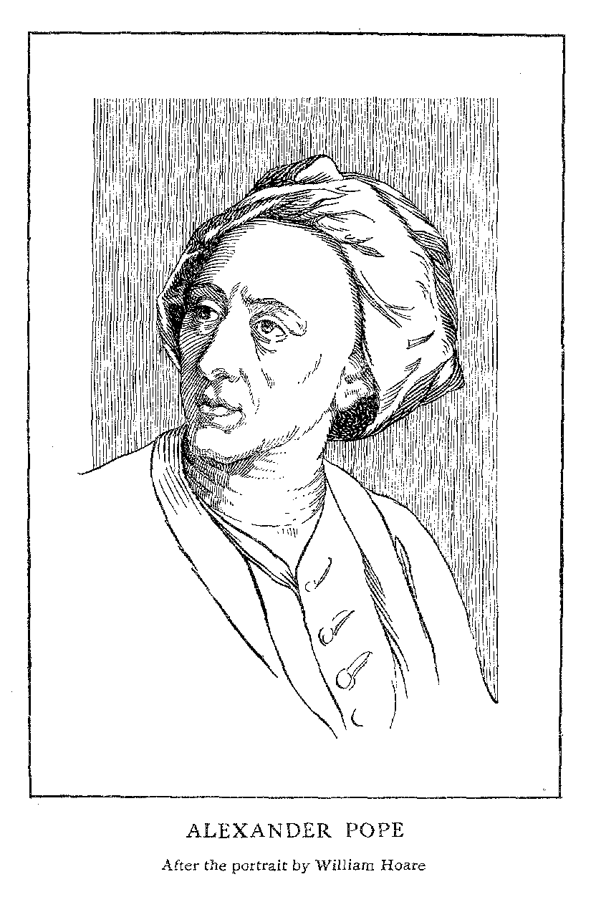

Project Gutenberg's The Rape of the Lock and Other Poems, by Alexander Pope This eBook is for the use of anyone anywhere at no cost and with almost no restrictions whatsoever. You may copy it, give it away or re-use it under the terms of the Project Gutenberg License included with this eBook or online at www.gutenberg.net Title: The Rape of the Lock and Other Poems Author: Alexander Pope Posting Date: December 8, 2011 [EBook #9800] Release Date: January, 2006 First Posted: October 18, 2003 Language: English Character set encoding: ISO-8859-1 *** START OF THIS PROJECT GUTENBERG EBOOK RAPE OF LOCK AND OTHER POEMS *** Produced by Clytie Siddall, Charles Aldarondo, Tiffany Vergon and the Online Distributed Proofreading Team.
Pope's
|
 |
"What led me into that," he told a friend long after, "was purely the want of money. I had then none; not even to buy books."It seems that about this time, 1713, Pope's father had experienced some heavy financial losses, and the poet, whose receipts in money had so far been by no means in proportion to the reputation his works had brought him, now resolved to use that reputation as a means of securing from the public a sum which would at least keep him for life from poverty or the necessity of begging for patronage. It is worth noting that Pope was the first Englishman of letters who threw himself thus boldly upon the public and earned his living by his pen.
"What terrible moments," he said to Spence, "does one feel after one has engaged for a large work. In the beginning of my translating the Iliad, I wished anybody would hang me a hundred times. It sat so heavily on my mind at first that I often used to dream of it and do sometimes still."In spite of his discouragement, however, and of the ill health which so constantly beset him, Pope fell gallantly upon his task, and as time went on came almost to enjoy it. He used to translate thirty or forty verses in the morning before rising and, in his own characteristic phrase, "piddled over them for the rest of the day." He used every assistance possible, drew freely upon the scholarship of friends, corrected and recorrected with a view to obtaining clearness and point, and finally succeeded in producing a version which not only satisfied his own critical judgment, but was at once accepted by the English-speaking world as the standard translation of Homer.
"I had once thought of completing my ethic work in four books. � The first, you know, is on the Nature of Man [the Essay on Man]; the second would have been on knowledge and its limits � here would have come in an Essay on Education, part of which I have inserted in the Dunciad [i.e. in the Fourth Book, published in 1742]. The third was to have treated of Government, both ecclesiastical and civil � and this was what chiefly stopped my going on. I could not have said what I would have said without provoking every church on the face of the earth; and I did not care for living always in boiling water. � This part would have come into my Brutus [an epic poem which Pope never completed], which is planned already. The fourth would have been on Morality; in eight or nine of the most concerning branches of it."It is difficult, if not impossible, to believe that Pope with his irregular methods of work and illogical habit of thought had planned so vast and elaborate a system before he began its execution. It is far more likely that he followed his old method of composing on the inspiration of the moment, and produced the works in question with little thought of their relation or interdependence. But in the last years of his life, when he had made the acquaintance of Warburton, and was engaged in reviewing and perfecting the works of this period, he noticed their general similarity in form and spirit, and, possibly under Warburton's influence, conceived the notion of combining and supplementing them to form that "Greater Essay on Man" of which he spoke to Spence, and of which Warburton himself has given us a detailed account.
"I never in my life knew a man that had so tender a heart for his particular friends, or a more general friendship for mankind. I have known him these thirty years; and value myself more for that man's love than"� here his head dropped and his voice broke in tears. It was noticed that whenever Patty Blount came into the room, the dying flame of life flashed up in a momentary glow. At the very end a friend reminded Pope that as a professed Catholic he ought to send for a priest. The dying man replied that he did not believe it essential, but thanked him for the suggestion. When the priest appeared, Pope attempted to rise from his bed that he might receive the sacrament kneeling, and the priest came out from the sick room "penetrated to the last degree with the state of mind in which he found his penitent, resigned and wrapt up in the love of God and man." The hope that sustained Pope to the end was that of immortality.
"I am so certain of the soul's being immortal," he whispered, almost with his last breath, "that I seem to feel it within me, as it were by intuition."He died on the evening of May 30, so quietly that his friends hardly knew that the end had come. He was buried in Twickenham Church, near the monument he had erected to his parents, and his coffin was carried to the grave by six of the poorest men of the parish.
| 1688 | Born, May 21 |
| 1700 | Moves to Binfield |
| 1709 | Pastorals |
| 1711 | Essay on Criticism |
| 1711-12 | Contributes to Spectator |
| 1712 | Rape of the Lock, first form |
| 1713 | Windsor Forest |
| 1713 | Issues proposals for translation of Homer |
| 1714 | Rape of the Lock, second form |
| 1715 | First volume of the Iliad |
| 1715 | Temple of Fame |
| 1717 | Pope's father dies |
| 1717 | Works, including some new poems |
| 1719 | Settles at Twickenham |
| 1720 | Sixth and last volume of the Iliad |
| 1722 | Begins translation of Odyssey |
| 1725 | Edits Shakespeare |
| 1726 | Finishes translation of Odyssey |
| 1727-8 | Miscellanies by Pope and Swift |
| 1728-9 | Dunciad |
| 1731-2 | Moral Essays: Of Taste, Of the Use of Riches |
| 1733-4 | Essay on Man |
| 1733-8 | Satires and Epistles |
| 1735 | Works |
| 1735 | Letters published by Curll |
| 1741 | Works in Prose; vol. II. includes the correspondence with Swift |
| 1742 | Fourth book of Dunciad |
| 1742 | Revised Dunciad |
| 1744 | Died, May 30 |
| 1751 | First collected edition, published by Warburton, 9 vols. |
Nolueram, Belinda, tuos violare capillos;
Sed juvat, hoc precibus me tribuisse tuis.
Mart, [Epigr, XII. 84.]
| What dire offence from am'rous causes springs, What mighty contests rise from trivial things, I sing � This verse to Caryl, Muse! is due: This, ev'n Belinda may vouchsafe to view: Slight is the subject, but not so the praise, If She inspire, and He approve my lays. Say what strange motive, Goddess! could compel A well-bred Lord t' assault a gentle Belle? O say what stranger cause, yet unexplor'd, Could make a gentle Belle reject a Lord? In tasks so bold, can little men engage, And in soft bosoms dwells such mighty Rage? Sol thro' white curtains shot a tim'rous ray, And oped those eyes that must eclipse the day: Now lap-dogs give themselves the rousing shake, And sleepless lovers, just at twelve, awake: Thrice rung the bell, the slipper knock'd the ground, And the press'd watch return'd a silver sound. Belinda still her downy pillow prest, Her guardian Sylph prolong'd the balmy rest: 'Twas He had summon'd to her silent bed The morning-dream that hover'd o'er her head; A Youth more glitt'ring than a Birth-night Beau, (That ev'n in slumber caus'd her cheek to glow) Seem'd to her ear his winning lips to lay, And thus in whispers said, or seem'd to say. Fairest of mortals, thou distinguish'd care Of thousand bright Inhabitants of Air! If e'er one vision touch.'d thy infant thought, Of all the Nurse and all the Priest have taught; Of airy Elves by moonlight shadows seen, The silver token, and the circled green, Or virgins visited by Angel-pow'rs, With golden crowns and wreaths of heav'nly flow'rs; Hear and believe! thy own importance know, Nor bound thy narrow views to things below. Some secret truths, from learned pride conceal'd, To Maids alone and Children are reveal'd: What tho' no credit doubting Wits may give? The Fair and Innocent shall still believe. Know, then, unnumber'd Spirits round thee fly, The light Militia of the lower sky: These, tho' unseen, are ever on the wing, Hang o'er the Box, and hover round the Ring. Think what an equipage thou hast in Air, And view with scorn two Pages and a Chair. As now your own, our beings were of old, And once inclos'd in Woman's beauteous mould; Thence, by a soft transition, we repair From earthly Vehicles to these of air. Think not, when Woman's transient breath is fled That all her vanities at once are dead; Succeeding vanities she still regards, And tho' she plays no more, o'erlooks the cards. Her joy in gilded Chariots, when alive, And love of Ombre, after death survive. For when the Fair in all their pride expire, To their first Elements their Souls retire: The Sprites of fiery Termagants in Flame Mount up, and take a Salamander's name. Soft yielding minds to Water glide away, And sip, with Nymphs, their elemental Tea. The graver Prude sinks downward to a Gnome, In search of mischief still on Earth to roam. The light Coquettes in Sylphs aloft repair, And sport and flutter in the fields of Air. "Know further yet; whoever fair and chaste Rejects mankind, is by some Sylph embrac'd: For Spirits, freed from mortal laws, with ease Assume what sexes and what shapes they please. What guards the purity of melting Maids, In courtly balls, and midnight masquerades, Safe from the treach'rous friend, the daring spark, The glance by day, the whisper in the dark, When kind occasion prompts their warm desires, When music softens, and when dancing fires? 'Tis but their Sylph, the wise Celestials know, Tho' Honour is the word with Men below. Some nymphs there are, too conscious of their face, For life predestin'd to the Gnomes' embrace. These swell their prospects and exalt their pride, When offers are disdain'd, and love deny'd: Then gay Ideas crowd the vacant brain, While Peers, and Dukes, and all their sweeping train, And Garters, Stars, and Coronets appear, And in soft sounds, Your Grace salutes their ear. 'T is these that early taint the female soul, Instruct the eyes of young Coquettes to roll, Teach Infant-cheeks a bidden blush to know, And little hearts to flutter at a Beau. Oft, when the world imagine women stray, The Sylphs thro' mystic mazes guide their way, Thro' all the giddy circle they pursue, And old impertinence expel by new. What tender maid but must a victim fall To one man's treat, but for another's ball? When Florio speaks what virgin could withstand, If gentle Damon did not squeeze her hand? With varying vanities, from ev'ry part, They shift the moving Toyshop of their heart; Where wigs with wigs, with sword-knots sword-knots strive, Beaux banish beaux, and coaches coaches drive. This erring mortals Levity may call; Oh blind to truth! the Sylphs contrive it all. Of these am I, who thy protection claim, A watchful sprite, and Ariel is my name. Late, as I rang'd the crystal wilds of air, In the clear Mirror of thy ruling Star I saw, alas! some dread event impend, Ere to the main this morning sun descend, But heav'n reveals not what, or how, or where: Warn'd by the Sylph, oh pious maid, beware! This to disclose is all thy guardian can: Beware of all, but most beware of Man!" He said; when Shock, who thought she slept too long, Leap'd up, and wak'd his mistress with his tongue. 'T was then, Belinda, if report say true, Thy eyes first open'd on a Billet-doux; Wounds, Charms, and Ardors were no sooner read, But all the Vision vanish'd from thy head. And now, unveil'd, the Toilet stands display'd, Each silver Vase in mystic order laid. First, rob'd in white, the Nymph intent adores, With head uncover'd, the Cosmetic pow'rs. A heav'nly image in the glass appears, To that she bends, to that her eyes she rears; Th' inferior Priestess, at her altar's side, Trembling begins the sacred rites of Pride. Unnumber'd treasures ope at once, and here The various off'rings of the world appear; From each she nicely culls with curious toil, And decks the Goddess with the glitt'ring spoil. This casket India's glowing gems unlocks, And all Arabia breathes from yonder box. The Tortoise here and Elephant unite, Transformed to combs, the speckled, and the white. Here files of pins extend their shining rows, Puffs, Powders, Patches, Bibles, Billet-doux. Now awful Beauty puts on all its arms; The fair each moment rises in her charms, Repairs her smiles, awakens ev'ry grace, And calls forth all the wonders of her face; Sees by degrees a purer blush arise, And keener lightnings quicken in her eyes. The busy Sylphs surround their darling care, These set the head, and those divide the hair, Some fold the sleeve, whilst others plait the gown: And Betty's prais'd for labours not her own. |
5 10 15 20 25 30 35 40 45 50 55 60 65 70 75 80 85 90 95 100 105 110 115 120 125 130 135 140 145 |
| Not with more glories, in th' etherial plain, The Sun first rises o'er the purpled main, Than, issuing forth, the rival of his beams Launch'd on the bosom of the silver Thames. Fair Nymphs, and well-drest Youths around her shone. But ev'ry eye was fix'd on her alone. On her white breast a sparkling Cross she wore, Which Jews might kiss, and Infidels adore. Her lively looks a sprightly mind disclose, Quick as her eyes, and as unfix'd as those: Favours to none, to all she smiles extends; Oft she rejects, but never once offends. Bright as the sun, her eyes the gazers strike, And, like the sun, they shine on all alike. Yet graceful ease, and sweetness void of pride, Might hide her faults, if Belles had faults to hide: If to her share some female errors fall, Look on her face, and you'll forget 'em all. This Nymph, to the destruction of mankind, Nourish'd two Locks, which graceful hung behind In equal curls, and well conspir'd to deck With shining ringlets the smooth iv'ry neck. Love in these labyrinths his slaves detains, And mighty hearts are held in slender chains. With hairy springes we the birds betray, Slight lines of hair surprise the finny prey, Fair tresses man's imperial race ensnare, And beauty draws us with a single hair. Th' advent'rous Baron the bright locks admir'd; He saw, he wish'd, and to the prize aspir'd. Resolv'd to win, he meditates the way, By force to ravish, or by fraud betray; For when success a Lover's toil attends, Few ask, if fraud or force attain'd his ends. For this, ere Ph�bus rose, he had implor'd Propitious heav'n, and ev'ry pow'r ador'd, But chiefly Love � to Love an Altar built, Of twelve vast French Romances, neatly gilt. There lay three garters, half a pair of gloves; And all the trophies of his former loves; With tender Billet-doux he lights the pyre, And breathes three am'rous sighs to raise the fire. Then prostrate falls, and begs with ardent eyes Soon to obtain, and long possess the prize: The pow'rs gave ear, and granted half his pray'r, The rest, the winds dispers'd in empty air. But now secure the painted vessel glides, The sun-beams trembling on the floating tides: While melting music steals upon the sky, And soften'd sounds along the waters die; Smooth flow the waves, the Zephyrs gently play, Belinda smil'd, and all the world was gay. All but the Sylph � with careful thoughts opprest, Th' impending woe sat heavy on his breast. He summons strait his Denizens of air; The lucid squadrons round the sails repair: Soft o'er the shrouds a�rial whispers breathe, That seem'd but Zephyrs to the train beneath. Some to the sun their insect-wings unfold, Waft on the breeze, or sink in clouds of gold; Transparent forms, too fine for mortal sight, Their fluid bodies half dissolv'd in light, Loose to the wind their airy garments flew, Thin glitt'ring textures of the filmy dew, Dipt in the richest tincture of the skies, Where light disports in ever-mingling dyes, While ev'ry beam new transient colours flings, Colours that change whene'er they wave their wings. Amid the circle, on the gilded mast, Superior by the head, was Ariel plac'd; His purple pinions op'ning to the sun, He rais'd his azure wand, and thus begun. Ye Sylphs and Sylphids, to your chief give ear! Fays, Fairies, Genii, Elves, and D�mons, hear! Ye know the spheres and various tasks assign'd By laws eternal to th' a�rial kind. Some in the fields of purest �ther play, And bask and whiten in the blaze of day. Some guide the course of wand'ring orbs on high, Or roll the planets thro' the boundless sky. Some less refin'd, beneath the moon's pale light Pursue the stars that shoot athwart the night, Or suck the mists in grosser air below, Or dip their pinions in the painted bow, Or brew fierce tempests on the wintry main, Or o'er the glebe distil the kindly rain. Others on earth o'er human race preside, Watch all their ways, and all their actions guide: Of these the chief the care of Nations own, And guard with Arms divine the British Throne. Our humbler province is to tend the Fair, Not a less pleasing, tho' less glorious care; To save the powder from too rude a gale, Nor let th' imprison'd-essences exhale; To draw fresh colours from the vernal flow'rs; To steal from rainbows e'er they drop in show'rs A brighter wash; to curl their waving hairs, Assist their blushes, and inspire their airs; Nay oft, in dreams, invention we bestow, To change a Flounce, or add a Furbelow. This day, black Omens threat the brightest Fair, That e'er deserv'd a watchful spirit's care; Some dire disaster, or by force, or slight; But what, or where, the fates have wrapt in night. Whether the nymph shall break Diana's law, Or some frail China jar receive a flaw; Or stain her honour or her new brocade; Forget her pray'rs, or miss a masquerade; Or lose her heart, or necklace, at a ball; Or whether Heav'n has doom'd that Shock must fall. Haste, then, ye spirits! to your charge repair: The flutt'ring fan be Zephyretta's care; The drops to thee, Brillante, we consign; And, Momentilla, let the watch be thine; Do thou, Crispissa, tend her fav'rite Lock; Ariel himself shall be the guard of Shock. To fifty chosen Sylphs, of special note, We trust th' important charge, the Petticoat: Oft have we known that seven-fold fence to fail, Tho' stiff with hoops, and arm'd with ribs of whale; Form a strong line about the silver bound, And guard the wide circumference around. Whatever spirit, careless of his charge, His post neglects, or leaves the fair at large, Shall feel sharp vengeance soon o'ertake his sins, Be stopp'd in vials, or transfix'd with pins; Or plung'd in lakes of bitter washes lie, Or wedg'd whole ages in a bodkin's eye: Gums and Pomatums shall his flight restrain, While clogg'd he beats his silken wings in vain; Or Alum styptics with contracting pow'r Shrink his thin essence like a rivel'd flow'r: Or, as Ixion fix'd, the wretch shall feel The giddy motion of the whirling Mill, In fumes of burning Chocolate shall glow, And tremble at the sea that froths below! He spoke; the spirits from the sails descend; Some, orb in orb, around the nymph extend; Some thrid the mazy ringlets of her hair; Some hang upon the pendants of her ear: With beating hearts the dire event they wait, Anxious, and trembling for the birth of Fate. |
5 10 15 20 25 30 35 40 45 50 55 60 65 70 75 80 85 90 95 100 105 110 115 120 125 130 135 140 |
| Close by those meads, for ever crown'd with flow'rs, Where Thames with pride surveys his rising tow'rs, There stands a structure of majestic frame, Which from the neighb'ring Hampton takes its name. Here Britain's statesmen oft the fall foredoom Of foreign Tyrants and of Nymphs at home; Here thou, great Anna! whom three realms obey. Dost sometimes counsel take � and sometimes Tea. Hither the heroes and the nymphs resort, To taste awhile the pleasures of a Court; In various talk th' instructive hours they past, Who gave the ball, or paid the visit last; One speaks the glory of the British Queen, And one describes a charming Indian screen; A third interprets motions, looks, and eyes; At ev'ry word a reputation dies. Snuff, or the fan, supply each pause of chat, With singing, laughing, ogling, and all that. Mean while, declining from the noon of day, The sun obliquely shoots his burning ray; The hungry Judges soon the sentence sign, And wretches hang that jury-men may dine; The merchant from th' Exchange returns in peace, And the long labours of the Toilet cease. Belinda now, whom thirst of fame invites, Burns to encounter two advent'rous Knights, At Ombre singly to decide their doom; And swells her breast with conquests yet to come. Straight the three bands prepare in arms to join, Each band the number of the sacred nine. Soon as she spreads her hand, th' a�rial guard Descend, and sit on each important card: First Ariel perch'd upon a Matadore, Then each, according to the rank they bore; For Sylphs, yet mindful of their ancient race, Are, as when women, wondrous fond of place. Behold, four Kings in majesty rever'd, With hoary whiskers and a forky beard; And four fair Queens whose hands sustain a flow'r, Th' expressive emblem of their softer pow'r; Four Knaves in garbs succinct, a trusty band, Caps on their heads, and halberts in their hand; And particolour'd troops, a shining train, Draw forth to combat on the velvet plain. The skilful Nymph reviews her force with care: Let Spades be trumps! she said, and trumps they were. Now move to war her sable Matadores, In show like leaders of the swarthy Moors. Spadillio first, unconquerable Lord! Led off two captive trumps, and swept the board. As many more Manillio forc'd to yield, And march'd a victor from the verdant field. Him Basto follow'd, but his fate more hard Gain'd but one trump and one Plebeian card. With his broad sabre next, a chief in years, The hoary Majesty of Spades appears, Puts forth one manly leg, to sight reveal'd, The rest, his many-colour'd robe conceal'd. The rebel Knave, who dares his prince engage, Proves the just victim of his royal rage. Ev'n mighty Pam, that Kings and Queens o'erthrew And mow'd down armies in the fights of Lu, Sad chance of war! now destitute of aid, Falls undistinguish'd by the victor spade! Thus far both armies to Belinda yield; Now to the Baron fate inclines the field. His warlike Amazon her host invades, Th' imperial consort of the crown of Spades. The Club's black Tyrant first her victim dy'd, Spite of his haughty mien, and barb'rous pride: What boots the regal circle on his head, His giant limbs, in state unwieldy spread; That long behind he trails his pompous robe, And, of all monarchs, only grasps the globe? The Baron now his Diamonds pours apace; Th' embroider'd King who shows but half his face, And his refulgent Queen, with pow'rs combin'd Of broken troops an easy conquest find. Clubs, Diamonds, Hearts, in wild disorder seen, With throngs promiscuous strow the level green. Thus when dispers'd a routed army runs, Of Asia's troops, and Afric's sable sons, With like confusion different nations fly, Of various habit, and of various dye, The pierc'd battalions dis-united fall, In heaps on heaps; one fate o'erwhelms them all. The Knave of Diamonds tries his wily arts, And wins (oh shameful chance!) the Queen of Hearts. At this, the blood the virgin's cheek forsook, A livid paleness spreads o'er all her look; She sees, and trembles at th' approaching ill, Just in the jaws of ruin, and Codille. And now (as oft in some distemper'd State) On one nice Trick depends the gen'ral fate. An Ace of Hearts steps forth: The King unseen Lurk'd in her hand, and mourn'd his captive Queen: He springs to Vengeance with an eager pace, And falls like thunder on the prostrate Ace. The nymph exulting fills with shouts the sky; The walls, the woods, and long canals reply. Oh thoughtless mortals! ever blind to fate, Too soon dejected, and too soon elate. Sudden, these honours shall be snatch'd away, And curs'd for ever this victorious day. For lo! the board with cups and spoons is crown'd, The berries crackle, and the mill turns round; On shining Altars of Japan they raise The silver lamp; the fiery spirits blaze: From silver spouts the grateful liquors glide, While China's earth receives the smoking tide: At once they gratify their scent and taste, And frequent cups prolong the rich repast. Straight hover round the Fair her airy band; Some, as she sipp'd, the fuming liquor fann'd, Some o'er her lap their careful plumes display'd, Trembling, and conscious of the rich brocade. Coffee, (which makes the politician wise, And see thro' all things with his half-shut eyes) Sent up in vapours to the Baron's brain New Stratagems, the radiant Lock to gain. Ah cease, rash youth! desist ere't is too late, Fear the just Gods, and think of Scylla's Fate! Chang'd to a bird, and sent to flit in air, She dearly pays for Nisus' injur'd hair! But when to mischief mortals bend their will, How soon they find fit instruments of ill! Just then, Clarissa drew with tempting grace A two-edg'd weapon from her shining case: So Ladies in Romance assist their Knight, Present the spear, and arm him for the fight. He takes the gift with rev'rence, and extends The little engine on his fingers' ends; This just behind Belinda's neck he spread, As o'er the fragrant steams she bends her head. Swift to the Lock a thousand Sprites repair, A thousand wings, by turns, blow back the hair; And thrice they twitch'd the diamond in her ear; Thrice she look'd back, and thrice the foe drew near. Just in that instant, anxious Ariel sought The close recesses of the Virgin's thought; As on the nosegay in her breast reclin'd, He watch'd th' Ideas rising in her mind, Sudden he view'd, in spite of all her art, An earthly Lover lurking at her heart. Amaz'd, confus'd, he found his pow'r expir'd, Resign'd to fate, and with a sigh retir'd. The Peer now spreads the glitt'ring Forfex wide, T' inclose the Lock; now joins it, to divide. Ev'n then, before the fatal engine clos'd, A wretched Sylph too fondly interpos'd; Fate urg'd the shears, and cut the Sylph in twain, (But airy substance soon unites again) The meeting points the sacred hair dissever From the fair head, for ever, and for ever! Then flash'd the living lightning from her eyes, And screams of horror rend th' affrighted skies. Not louder shrieks to pitying heav'n are cast, When husbands, or when lapdogs breathe their last; Or when rich China vessels fall'n from high, In glitt'ring dust and painted fragments lie! Let wreaths of triumph now my temples twine (The victor cry'd) the glorious Prize is mine! While fish in streams, or birds delight in air, Or in a coach and six the British Fair, As long as Atalantis shall be read, Or the small pillow grace a Lady's bed, While visits shall be paid on solemn days, When num'rous wax-lights in bright order blaze, While nymphs take treats, or assignations give, So long my honour, name, and praise shall live! What Time would spare, from Steel receives its date, And monuments, like men, submit to fate! Steel could the labour of the Gods destroy, And strike to dust th' imperial tow'rs of Troy; Steel could the works of mortal pride confound, And hew triumphal arches to the ground. What wonder then, fair nymph! thy hairs should feel, The conqu'ring force of unresisted steel? |
5 10 15 20 25 30 35 40 45 50 55 60 65 70 75 80 85 90 95 100 105 110 115 120 125 130 135 140 145 150 155 160 165 170 175 |
| But anxious cares the pensive nymph oppress'd, And secret passions labour'd in her breast. Not youthful kings in battle seiz'd alive, Not scornful virgins who their charms survive, Not ardent lovers robb'd of all their bliss, Not ancient ladies when refus'd a kiss, Not tyrants fierce that unrepenting die, Not Cynthia when her manteau's pinn'd awry, E'er felt such rage, resentment, and despair, As thou, sad Virgin! for thy ravish'd Hair. For, that sad moment, when the Sylphs withdrew And Ariel weeping from Belinda flew, Umbriel, a dusky, melancholy sprite, As ever sully'd the fair face of light, Down to the central earth, his proper scene, Repair'd to search the gloomy Cave of Spleen. Swift on his sooty pinions flits the Gnome, And in a vapour reach'd the dismal dome. No cheerful breeze this sullen region knows, The dreaded East is all the wind that blows. Here in a grotto, shelter'd close from air, And screen'd in shades from day's detested glare, She sighs for ever on her pensive bed, Pain at her side, and Megrim at her head. Two handmaids wait the throne: alike in place, But diff'ring far in figure and in face. Here stood Ill-nature like an ancient maid, Her wrinkled form in black and white array'd; With store of pray'rs, for mornings, nights, and noons, Her hand is fill'd; her bosom with lampoons. There Affectation, with a sickly mien, Shows in her cheek the roses of eighteen, Practis'd to lisp, and hang the head aside. Faints into airs, and languishes with pride, On the rich quilt sinks with becoming woe, Wrapt in a gown, for sickness, and for show. The fair ones feel such maladies as these, When each new night-dress gives a new disease. A constant Vapour o'er the palace flies; Strange phantoms rising as the mists arise; Dreadful, as hermit's dreams in haunted shades, Or bright, as visions of expiring maids. Now glaring fiends, and snakes on rolling spires, Pale spectres, gaping tombs, and purple fires: Now lakes of liquid gold, Elysian scenes, And crystal domes, and angels in machines. Unnumber'd throngs on every side are seen, Of bodies chang'd to various forms by Spleen. Here living Tea-pots stand, one arm held out, One bent; the handle this, and that the spout: A Pipkin there, like Homer's Tripod walks; Here sighs a Jar, and there a Goose-pie talks; Men prove with child, as pow'rful fancy works, And maids turn'd bottles, call aloud for corks. Safe past the Gnome thro' this fantastic band, A branch of healing Spleenwort in his hand. Then thus address'd the pow'r: "Hail, wayward Queen! Who rule the sex to fifty from fifteen: Parent of vapours and of female wit, Who give th' hysteric, or poetic fit, On various tempers act by various ways, Make some take physic, others scribble plays; Who cause the proud their visits to delay, And send the godly in a pet to pray. A nymph there is, that all thy pow'r disdains, And thousands more in equal mirth maintains. But oh! if e'er thy Gnome could spoil a grace, Or raise a pimple on a beauteous face, Like Citron-waters matrons cheeks inflame, Or change complexions at a losing game; If e'er with airy horns I planted heads, Or rumpled petticoats, or tumbled beds, Or caus'd suspicion when no soul was rude, Or discompos'd the head-dress of a Prude, Or e'er to costive lap-dog gave disease, Which not the tears of brightest eyes could ease: Hear me, and touch Belinda with chagrin, That single act gives half the world the spleen." The Goddess with a discontented air Seems to reject him, tho' she grants his pray'r. A wond'rous Bag with both her hands she binds, Like that where once Ulysses held the winds; There she collects the force of female lungs, Sighs, sobs, and passions, and the war of tongues. A Vial next she fills with fainting fears, Soft sorrows, melting griefs, and flowing tears. The Gnome rejoicing bears her gifts away, Spreads his black wings, and slowly mounts to day. Sunk in Thalestris' arms the nymph he found, Her eyes dejected and her hair unbound. Full o'er their heads the swelling bag he rent, And all the Furies issu'd at the vent. Belinda burns with more than mortal ire, And fierce Thalestris fans the rising fire. "O wretched maid!" she spread her hands, and cry'd, (While Hampton's echoes, "Wretched maid!" reply'd) "Was it for this you took such constant care The bodkin, comb, and essence to prepare? For this your locks in paper durance bound, For this with tort'ring irons wreath'd around? For this with fillets strain'd your tender head, And bravely bore the double loads of lead? Gods! shall the ravisher display your hair, While the Fops envy, and the Ladies stare! Honour forbid! at whose unrivall'd shrine Ease, pleasure, virtue, all our sex resign. Methinks already I your tears survey, Already hear the horrid things they say, Already see you a degraded toast, And all your honour in a whisper lost! How shall I, then, your helpless fame defend? 'T will then be infamy to seem your friend! And shall this prize, th' inestimable prize, Expos'd thro' crystal to the gazing eyes, And heighten'd by the diamond's circling rays, On that rapacious hand for ever blaze? Sooner shall grass in Hyde-park Circus grow, And wits take lodgings in the sound of Bow; Sooner let earth, air, sea, to Chaos fall, Men, monkeys, lap-dogs, parrots, perish all!" She said; then raging to Sir Plume repairs, And bids her Beau demand the precious hairs; (Sir Plume of amber snuff-box justly vain, And the nice conduct of a clouded cane) With earnest eyes, and round unthinking face, He first the snuff-box open'd, then the case, And thus broke out � "My Lord, why, what the devil? "Z � ds! damn the lock! 'fore Gad, you must be civil! Plague on't!'t is past a jest � nay prithee, pox! Give her the hair" � he spoke, and rapp'd his box. "It grieves me much" (reply'd the Peer again) "Who speaks so well should ever speak in vain. But by this Lock, this sacred Lock I swear, (Which never more shall join its parted hair; Which never more its honours shall renew, Clipp'd from the lovely head where late it grew) That while my nostrils draw the vital air, This hand, which won it, shall for ever wear." He spoke, and speaking, in proud triumph spread The long-contended honours of her head. But Umbriel, hateful Gnome! forbears not so; He breaks the Vial whence the sorrows flow. Then see! the nymph in beauteous grief appears, Her eyes half-languishing, half-drown'd in tears; On her heav'd bosom hung her drooping head, Which, with a sigh, she rais'd; and thus she said. "For ever curs'd be this detested day, Which snatch'd my best, my fav'rite curl away! Happy! ah ten times happy had I been, If Hampton-Court these eyes had never seen! Yet am not I the first mistaken maid, By love of Courts to num'rous ills betray'd. Oh had I rather un-admir'd remain'd In some lone isle, or distant Northern land; Where the gilt Chariot never marks the way, Where none learn Ombre, none e'er taste Bohea! There kept my charms conceal'd from mortal eye, Like roses, that in deserts bloom and die. What mov'd my mind with youthful Lords to roam? Oh had I stay'd, and said my pray'rs at home! 'T was this, the morning omens seem'd to tell, Thrice from my trembling hand the patch-box fell; The tott'ring China shook without a wind. Nay, Poll sat mute, and Shock was most unkind! A Sylph too warn'd me of the threats of fate, In mystic visions, now believ'd too late! See the poor remnants of these slighted hairs! My hands shall rend what ev'n thy rapine spares: These in two sable ringlets taught to break, Once gave new beauties to the snowy neck; The sister-lock now sits uncouth, alone, And in its fellow's fate foresees its own; Uncurl'd it hangs, the fatal shears demands, And tempts once more thy sacrilegious hands. Oh hadst thou, cruel! been content to seize Hairs less in sight, or any hairs but these!" |
5 10 15 20 25 30 35 40 45 50 55 60 65 70 75 80 85 90 95 100 105 110 115 120 125 130 135 140 145 150 155 160 165 170 175 |
| She said: the pitying audience melt in tears. But Fate and Jove had stopp'd the Baron's ears. In vain Thalestris with reproach assails, For who can move when fair Belinda fails? Not half so fix'd the Trojan could remain, While Anna begg'd and Dido rag'd in vain. Then grave Clarissa graceful wav'd her fan; Silence ensu'd, and thus the nymph began. "Say why are Beauties prais'd and honour'd most, The wise man's passion, and the vain man's toast? Why deck'd with all that land and sea afford, Why Angels call'd, and Angel-like ador'd? Why round our coaches crowd the white-glov'd Beaux, Why bows the side-box from its inmost rows; How vain are all these glories, all our pains, Unless good sense preserve what beauty gains: That men may say, when we the front-box grace: 'Behold the first in virtue as in face!' Oh! if to dance all night, and dress all day, Charm'd the small-pox, or chas'd old-age away; Who would not scorn what housewife's cares produce, Or who would learn one earthly thing of use? To patch, nay ogle, might become a Saint, Nor could it sure be such a sin to paint. But since, alas! frail beauty must decay, Curl'd or uncurl'd, since Locks will turn to grey; Since painted, or not painted, all shall fade, And she who scorns a man, must die a maid; What then remains but well our pow'r to use, And keep good-humour still whate'er we lose? And trust me, dear! good-humour can prevail, When airs, and flights, and screams, and scolding fail. Beauties in vain their pretty eyes may roll; Charms strike the sight, but merit wins the soul." So spoke the Dame, but no applause ensu'd; Belinda frown'd, Thalestris call'd her Prude. "To arms, to arms!" the fierce Virago cries, And swift as lightning to the combat flies. All side in parties, and begin th' attack; Fans clap, silks rustle, and tough whalebones crack; Heroes' and Heroines' shouts confus'dly rise, And bass, and treble voices strike the skies. No common weapons in their hands are found, Like Gods they fight, nor dread a mortal wound. So when bold Homer makes the Gods engage, And heav'nly breasts with human passions rage; 'Gainst Pallas, Mars; Latona, Hermes arms; And all Olympus rings with loud alarms: Jove's thunder roars, heav'n trembles all around, Blue Neptune storms, the bellowing deeps resound: Earth shakes her nodding tow'rs, the ground gives way. And the pale ghosts start at the flash of day! Triumphant Umbriel on a sconce's height Clapp'd his glad wings, and sate to view the fight: Propp'd on the bodkin spears, the Sprites survey The growing combat, or assist the fray. While thro' the press enrag'd Thalestris flies, And scatters death around from both her eyes, A Beau and Witling perish'd in the throng, One died in metaphor, and one in song. "O cruel nymph! a living death I bear," Cry'd Dapperwit, and sunk beside his chair. A mournful glance Sir Fopling upwards cast, "Those eyes are made so killing" � was his last. Thus on M�ander's flow'ry margin lies Th' expiring Swan, and as he sings he dies. When bold Sir Plume had drawn Clarissa down, Chloe stepp'd in, and kill'd him with a frown; She smil'd to see the doughty hero slain, But, at her smile, the Beau reviv'd again. Now Jove suspends his golden scales in air, Weighs the Men's wits against the Lady's hair; The doubtful beam long nods from side to side; At length the wits mount up, the hairs subside. See, fierce Belinda on the Baron flies, With more than usual lightning in her eyes: Nor fear'd the Chief th' unequal fight to try, Who sought no more than on his foe to die. But this bold Lord with manly strength endu'd, She with one finger and a thumb subdu'd: Just where the breath of life his nostrils drew, A charge of Snuff the wily virgin threw; The Gnomes direct, to ev'ry atom just, The pungent grains of titillating dust. Sudden, with starting tears each eye o'erflows, And the high dome re-echoes to his nose. Now meet thy fate, incens'd Belinda cry'd, And drew a deadly bodkin from her side. (The same, his ancient personage to deck, Her great great grandsire wore about his neck, In three seal-rings; which after, melted down, Form'd a vast buckle for his widow's gown: Her infant grandame's whistle next it grew, The bells she jingled, and the whistle blew; Then in a bodkin grac'd her mother's hairs, Which long she wore, and now Belinda wears.) "Boast not my fall" (he cry'd) "insulting foe! Thou by some other shalt be laid as low, Nor think, to die dejects my lofty mind: All that I dread is leaving you behind! Rather than so, ah let me still survive, And burn in Cupid's flames � but burn alive." "Restore the Lock!" she cries; and all around "Restore the Lock!" the vaulted roofs rebound. Not fierce Othello in so loud a strain Roar'd for the handkerchief that caus'd his pain. But see how oft ambitious aims are cross'd, And chiefs contend 'till all the prize is lost! The Lock, obtain'd with guilt, and kept with pain, In ev'ry place is sought, but sought in vain: With such a prize no mortal must be blest, So heav'n decrees! with heav'n who can contest? Some thought it mounted to the Lunar sphere, Since all things lost on earth are treasur'd there. There Hero's wits are kept in pond'rous vases, And beau's in snuff-boxes and tweezer-cases. There broken vows and death-bed alms are found, And lovers' hearts with ends of riband bound, The courtier's promises, and sick man's pray'rs, The smiles of harlots, and the tears of heirs, Cages for gnats, and chains to yoke a flea, Dry'd butterflies, and tomes of casuistry. But trust the Muse � she saw it upward rise, Tho' mark'd by none but quick, poetic eyes: (So Rome's great founder to the heav'ns withdrew, To Proculus alone confess'd in view) A sudden Star, it shot thro' liquid air, And drew behind a radiant trail of hair. Not Berenice's Locks first rose so bright, The heav'ns bespangling with dishevell'd light. The Sylphs behold it kindling as it flies, And pleas'd pursue its progress thro' the skies. This the Beau monde shall from the Mall survey, And hail with music its propitious ray. This the blest Lover shall for Venus take, And send up vows from Rosamonda's lake. This Partridge soon shall view in cloudless skies, When next he looks thro' Galileo's eyes; And hence th' egregious wizard shall foredoom The fate of Louis, and the fall of Rome. Then cease, bright Nymph! to mourn thy ravish'd hair, Which adds new glory to the shining sphere! Not all the tresses that fair head can boast, Shall draw such envy as the Lock you lost. For, after all the murders of your eye, When, after millions slain, yourself shall die: When those fair suns shall set, as set they must, And all those tresses shall be laid in dust, This Lock, the Muse shall consecrate to fame, And 'midst the stars inscribe Belinda's name. |
5 10 15 20 25 30 35 40 45 50 55 60 65 70 75 80 85 90 95 100 105 110 115 120 125 130 135 140 145 150 |
| Part | Line | Topic |
| I Introduction |
1 | That 'tis as great a fault to judge ill, as to write ill, and a more dangerous one to the public. |
| 9-18 | That a true Taste is as rare to be found, as a true Genius. | |
| 19-25 | That most men are born with some Taste, but spoiled by false Education. | |
| 26-45 | The multitude of Critics, and causes of them. | |
| 46-67 | That we are to study our own Taste, and know the Limits of it. | |
| 68-87 | Nature the best guide of Judgment. | |
| 88 | Improv'd by Art and Rules, � which are but methodis'd Nature. | |
| id-110 | Rules derived from the Practice of the Ancient Poets. | |
| 120-138 | That therefore the Ancients are necessary to be studyd, by a Critic, particularly Homer and Virgil. | |
| 140-180 | Of Licenses, and the use of them by the Ancients. | |
| 181 etc. | Reverence due to the Ancients, and praise of them. | |
| II 201→ |
Causes hindering a true Judgment | |
| 208 | 1. Pride | |
| 215 | 2. Imperfect Learning | |
| 233-288 | 3. Judging by parts, and not by the whole. | |
| 288, 305, 399 etc. | Critics in Wit, Language, Versification, only. | |
| 384 | 4. Being too hard to please, or too apt to admire. | |
| 394 | 5. Partiality � too much Love to a Sect, � to the Ancients or Moderns. | |
| 408 | 6. Prejudice or Prevention. | |
| 424 | 7. Singularity. | |
| 430 | 8. Inconstancy. | |
| 452 etc. | 9. Party Spirit. | |
| 466 | 10. Envy. | |
| 508 etc. | Against Envy, and in praise of Good-nature. | |
| 526 etc. | When Severity is chiefly to be used by Critics. | |
| III v. 560→ |
||
| 563 | Rules for the Conduct of Manners in a Critic. | |
| 566 | 1. Candour, Modesty. | |
| 572 | Good-breeding. | |
| 578 | Sincerity, and Freedom of advice. | |
| 584 | 2. When one's Counsel is to be restrained. | |
| 600 | Character of an incorrigible Poet. | |
| 610 | And of an impertinent Critic, etc. | |
| 629 | Character of a good Critic. | |
| 645 | The History of Criticism, and Characters of the best Critics, Aristotle, | |
| 653 | Horace, | |
| 665 | Dionysius, | |
| 667 | Petronius, | |
| 670 | Quintilian, | |
| 675 | Longinus. | |
| 693 | Of the Decay of Criticism, and its Revival. Erasmus, | |
| 705 | Vida, | |
| 714 | Boileau, | |
| 725 | Lord Roscommon, etc. | |
| Conclusion |
| 'Tis hard to say, if greater want of skill Appear in writing or in judging ill; But, of the two, less dang'rous is th' offence To tire our patience, than mislead our sense. Some few in that, but numbers err in this, Ten censure wrong for one who writes amiss; A fool might once himself alone expose, Now one in verse makes many more in prose. 'Tis with our judgments as our watches, none Go just alike, yet each believes his own. In Poets as true genius is but rare, True Taste as seldom is the Critic's share; Both must alike from Heav'n derive their light, These born to judge, as well as those to write. Let such teach others who themselves excel, And censure freely who have written well. Authors are partial to their wit, 'tis true, But are not Critics to their judgment too? Yet if we look more closely, we shall find Most have the seeds of judgment in their mind: Nature affords at least a glimm'ring light; The lines, tho' touch'd but faintly, are drawn right. (But as the slightest sketch, if justly trac'd, (Is by ill-colouring but the more disgrac'd, (So by false learning is good sense defac'd: Some are bewilder'd in the maze of schools, And some made coxcombs Nature meant but fools. In search of wit these lose their common sense, And then turn Critics in their own defence: Each burns alike, who can, or cannot write, Or with a Rival's, or an Eunuch's spite. All fools have still an itching to deride, And fain would be upon the laughing side. If M�vius scribble in Apollo's spite, There are who judge still worse than he can write. Some have at first for Wits, then Poets past, Turn'd Critics next, and prov'd plain fools at last. Some neither can for Wits nor Critics pass, As heavy mules are neither horse nor ass. Those half-learn'd witlings, num'rous in our isle, As half-form'd insects on the banks of Nile; Unfinish'd things, one knows not what to call, Their generation's so equivocal: To tell 'em, would a hundred tongues require, Or one vain wit's, that might a hundred tire. But you who seek to give and merit fame, And justly bear a Critic's noble name, Be sure yourself and your own reach to know, How far your genius, taste, and learning go; Launch not beyond your depth, but be discreet, And mark that point where sense and dulness meet. Nature to all things fix'd the limits fit, And wisely curb'd proud man's pretending wit. As on the land while here the ocean gains, In other parts it leaves wide sandy plains; Thus in the soul while memory prevails, The solid pow'r of understanding fails; Where beams of warm imagination play, The memory's soft figures melt away. One science only will one genius fit; So vast is art, so narrow human wit: Not only bounded to peculiar arts, But oft in those confin'd to single parts. Like kings we lose the conquests gain'd before, By vain ambition still to make them more; Each might his sev'ral province well command, Would all but stoop to what they understand. First follow Nature, and your judgment frame By her just standard, which is still the same: Unerring Nature, still divinely bright, One clear, unchang'd, and universal light, Life, force, and beauty, must to all impart, At once the source, and end, and test of Art. Art from that fund each just supply provides, Works without show, and without pomp presides: In some fair body thus th' informing soul With spirits feeds, with vigour fills the whole, Each motion guides, and ev'ry nerve sustains; Itself unseen, but in th' effects, remains. Some, to whom Heav'n in wit has been profuse, Want as much more, to turn it to its use; For wit and judgment often are at strife, Tho' meant each other's aid, like man and wife. 'T is more to guide, than spur the Muse's steed; Restrain his fury, than provoke his speed; The winged courser, like a gen'rous horse, Shows most true mettle when you check his course. Those Rules of old discovered, not devis'd, Are Nature still, but Nature methodiz'd; Nature, like liberty, is but restrain'd By the same laws which first herself ordain'd. Hear how learn'd Greece her useful rules indites, When to repress, and when indulge our flights: High on Parnassus' top her sons she show'd, And pointed out those arduous paths they trod; Held from afar, aloft, th' immortal prize, And urg'd the rest by equal steps to rise. Just precepts thus from great examples giv'n, She drew from them what they deriv'd from Heav'n. The gen'rous Critic fann'd the Poet's fire, And taught the world with reason to admire. Then Criticism the Muse's handmaid prov'd, To dress her charms, and make her more belov'd: But following wits from that intention stray'd, Who could not win the mistress, woo'd the maid; Against the Poets their own arms they turn'd, Sure to hate most the men from whom they learn'd. So modern 'Pothecaries, taught the art By Doctor's bills to play the Doctor's part, Bold in the practice of mistaken rules, Prescribe, apply, and call their masters fools. Some on the leaves of ancient authors prey, Nor time nor moths e'er spoil'd so much as they. Some drily plain, without invention's aid, Write dull receipts how poems may be made. These leave the sense, their learning to display, And those explain the meaning quite away. You then whose judgment the right course would steer, Know well each Ancient's proper character; His fable, subject, scope in ev'ry page; Religion, Country, genius of his Age: Without all these at once before your eyes, Cavil you may, but never criticize. Be Homer's works your study and delight, Read them by day, and meditate by night; Thence form your judgment, thence your maxims bring, And trace the Muses upward to their spring. Still with itself compar'd, his text peruse; And let your comment be the Mantuan Muse. When first young Maro in his boundless mind A work t' outlast immortal Rome design'd, Perhaps he seem'd above the critic's law, And but from Nature's fountains scorn'd to draw: But when t' examine ev'ry part he came, Nature and Homer were, he found, the same. Convinc'd, amaz'd, he checks the bold design; And rules as strict his labour'd work confine, As if the Stagirite o'erlook'd each line. Learn hence for ancient rules a just esteem; To copy nature is to copy them. Some beauties yet no Precepts can declare, For there's a happiness as well as care. Music resembles Poetry, in each Are nameless graces which no methods teach, And which a master-hand alone can reach. If, where the rules not far enough extend, (Since rules were made but to promote their end) Some lucky Licence answer to the full Th' intent propos'd, that Licence is a rule. Thus Pegasus, a nearer way to take, May boldly deviate from the common track; From vulgar bounds with brave disorder part, And snatch a grace beyond the reach of art, Which without passing thro' the judgment, gains The heart, and all its end at once attains. In prospects thus, some objects please our eyes, Which out of nature's common order rise, The shapeless rock, or hanging precipice. Great wits sometimes may gloriously offend, And rise to faults true Critics dare not mend. But tho' the Ancients thus their rules invade, (As Kings dispense with laws themselves have made) Moderns, beware! or if you must offend Against the precept, ne'er transgress its End; Let it be seldom, and compell'd by need; And have, at least, their precedent to plead. The Critic else proceeds without remorse, Seizes your fame, and puts his laws in force. I know there are, to whose presumptuous thoughts Those freer beauties, ev'n in them, seem faults. Some figures monstrous and mis-shap'd appear, Consider'd singly, or beheld too near, Which, but proportion'd to their light, or place, Due distance reconciles to form and grace. A prudent chief not always must display His pow'rs in equal ranks, and fair array. But with th' occasion and the place comply, Conceal his force, nay seem sometimes to fly. Those oft are stratagems which error seem, Nor is it Homer nods, but we that dream. Still green with bays each ancient Altar stands, Above the reach of sacrilegious hands; Secure from Flames, from Envy's fiercer rage, Destructive War, and all-involving Age. See, from each clime the learn'd their incense bring! Hear, in all tongues consenting P�ans ring! In praise so just let ev'ry voice be join'd, And fill the gen'ral chorus of mankind. Hail, Bards triumphant! born in happier days; Immortal heirs of universal praise! Whose honours with increase of ages grow, As streams roll down, enlarging as they flow; Nations unborn your mighty names shall sound, And worlds applaud that must not yet be found! Oh may some spark of your celestial fire, The last, the meanest of your sons inspire, (That on weak wings, from far, pursues your flights; Glows while he reads, but trembles as he writes) To teach vain Wits a science little known, T' admire superior sense, and doubt their own! Of all the Causes which conspire to blind Man's erring judgment, and misguide the mind, What the weak head with strongest bias rules, Is Pride, the never-failing voice of fools. Whatever nature has in worth denied, She gives in large recruits of needful pride; For as in bodies, thus in souls, we find What wants in blood and spirits, swell'd with wind: Pride, where wit fails, steps in to our defence, And fills up all the mighty Void of sense. If once right reason drives that cloud away, Truth breaks upon us with resistless day. Trust not yourself; but your defects to know, Make use of ev'ry friend � and ev'ry foe. A little learning is a dang'rous thing; Drink deep, or taste not the Pierian spring. There shallow draughts intoxicate the brain, And drinking largely sobers us again. Fir'd at first sight with what the Muse imparts, In fearless youth we tempt the heights of Arts, While from the bounded level of our mind Short views we take, nor see the lengths behind; But more advanc'd, behold with strange surprise New distant scenes of endless science rise! So pleas'd at first the tow'ring Alps we try, Mount o'er the vales, and seem to tread the sky, Th' eternal snows appear already past, And the first clouds and mountains seem the last; But, those attain'd, we tremble to survey The growing labours of the lengthen'd way, Th' increasing prospect tires our wand'ring eyes, Hills peep o'er hills, and Alps on Alps arise! A perfect Judge will read each work of Wit With the same spirit that its author writ: Survey the Whole, nor seek slight faults to find Where nature moves, and rapture warms the mind; Nor lose, for that malignant dull delight, The gen'rous pleasure to be charm'd with Wit. But in such lays as neither ebb, nor flow, Correctly cold, and regularly low, That shunning faults, one quiet tenour keep, We cannot blame indeed � but we may sleep. In wit, as nature, what affects our hearts Is not th' exactness of peculiar parts; 'Tis not a lip, or eye, we beauty call, But the joint force and full result of all. Thus when we view some well-proportion'd dome, (The world's just wonder, and ev'n thine, O Rome!) No single parts unequally surprize, All comes united to th' admiring eyes; No monstrous height, or breadth, or length appear; The Whole at once is bold, and regular. Whoever thinks a faultless piece to see, Thinks what ne'er was, nor is, nor e'er shall be. In every work regard the writer's End, Since none can compass more than they intend; And if the means be just, the conduct true, Applause, in spight of trivial faults, is due; As men of breeding, sometimes men of wit, T' avoid great errors, must the less commit: Neglect the rules each verbal Critic lays, For not to know some trifles, is a praise. Most Critics, fond of some subservient art, Still make the Whole depend upon a Part: They talk of principles, but notions prize, And all to one lov'd Folly sacrifice. Once on a time, La Mancha's Knight, they say, A certain bard encount'ring on the way, Discours'd in terms as just, with looks as sage, As e'er could Dennis of the Grecian stage; Concluding all were desp'rate sots and fools, Who durst depart from Aristotle's rules. Our Author, happy in a judge so nice, Produc'd his Play, and begg'd the Knight's advice; Made him observe the subject, and the plot, The manners, passions, unities; what not? All which, exact to rule, were brought about, Were but a Combat in the lists left out. "What! leave the Combat out?" exclaims the Knight; Yes, or we must renounce the Stagirite. "Not so, by Heav'n" (he answers in a rage), "Knights, squires, and steeds, must enter on the stage." So vast a throng the stage can ne'er contain. "Then build a new, or act it in a plain." Thus Critics, of less judgment than caprice, Curious not knowing, not exact but nice, Form short Ideas; and offend in arts (As most in manners) by a love to parts. Some to Conceit alone their taste confine, And glitt'ring thoughts struck out at ev'ry line; Pleas'd with a work where nothing's just or fit; One glaring Chaos and wild heap of wit. Poets like painters, thus, unskill'd to trace The naked nature and the living grace, With gold and jewels cover ev'ry part, And hide with ornaments their want of art. True Wit is Nature to advantage dress'd, What oft was thought, but ne'er so well express'd; Something, whose truth convinc'd at sight we find, That gives us back the image of our mind. As shades more sweetly recommend the light, So modest plainness sets off sprightly wit. For works may have more wit than does 'em good, As bodies perish thro' excess of blood. Others for Language all their care express, And value books, as women men, for Dress: Their praise is still � the Style is excellent: The Sense, they humbly take upon content. Words are like leaves; and where they most abound, Much fruit of sense beneath is rarely found, False Eloquence, like the prismatic glass, Its gaudy colours spreads on ev'ry place; The face of Nature we no more survey, All glares alike, without distinction gay: But true expression, like th' unchanging Sun, Clears and improves whate'er it shines upon, It gilds all objects, but it alters none. Expression is the dress of thought, and still Appears more decent, as more suitable; A vile conceit in pompous words express'd, Is like a clown in regal purple dress'd: For diff'rent styles with diff'rent subjects sort, As several garbs with country, town, and court. Some by old words to fame have made pretence, Ancients in phrase, mere moderns in their sense; Such labour'd nothings, in so strange a style, Amaze th' unlearn'd, and make the learned smile. (Unlucky, as Fungoso in the play, (These sparks with awkward vanity display (What the fine gentleman wore yesterday; And but so mimic ancient wits at best, As apes our grandsires, in their doublets drest. In words, as fashions, the same rule will hold; Alike fantastic, if too new, or old: Be not the first by whom the new are try'd, Nor yet the last to lay the old aside. But most by Numbers judge a Poet's song; And smooth or rough, with them is right or wrong: In the bright Muse though thousand charms conspire, Her voice is all these tuneful fools admire; (Who haunt Parnassus but to please their ear, (Not mend their minds; as some to Church repair, (Not for the doctrine, but the music there. These equal syllables alone require, Tho' oft the ear the open vowe's tire; While expletives their feeble aid do join; And ten low words oft creep in one dull line: While they ring round the same unvary'd chimes, With sure returns of still expected rhymes; Where-e'er you find "the cooling western breeze," In the next line, it "whispers through the trees:" If crystal streams "with pleasing murmurs creep," The reader's threaten'd (not in vain) with "sleep:" Then, at the last and only couplet fraught With some unmeaning thing they call a thought, A needless Alexandrine ends the song That, like a wounded snake, drags its slow length along. Leave such to tune their own dull rhymes, and know What's roundly smooth or languishingly slow; And praise the easy vigour of a line, Where Denham's strength, and Waller's sweetness join. True ease in writing comes from art, not chance, As those move easiest who have learn'd to dance. 'Tis not enough no harshness gives offence, The sound must seem an Echo to the sense: Soft is the strain when Zephyr gently blows, And the smooth stream in smoother numbers flows; But when loud surges lash the sounding shore, The hoarse, rough verse should like the torrent roar: When Ajax strives some rock's vast weight to throw, The line too labours, and the words move slow; Not so, when swift Camilla scours the plain, Flies o'er th' unbending corn, and skims along the main. Hear how Timotheus' varied lays surprize, And bid alternate passions fall and rise! While, at each change, the son of Libyan Jove Now burns with glory, and then melts with love, Now his fierce eyes with sparkling fury glow, Now sighs steal out, and tears begin to flow: Persians and Greeks like turns of nature found, And the world's victor stood subdu'd by Sound! The pow'r of Music all our hearts allow, And what Timotheus was, is Dryden now. Avoid Extremes; and shun the fault of such, Who still are pleas'd too little or too much. At ev'ry trifle scorn to take offence, That always shows great pride, or little sense; Those heads, as stomachs, are not sure the best, Which nauseate all, and nothing can digest. Yet let not each gay Turn thy rapture move; For fools admire, but men of sense approve: As things seem large which we thro' mists descry, Dulness is ever apt to magnify. Some foreign writers, some our own despise; The Ancients only, or the Moderns prize. Thus Wit, like Faith, by each man is apply'd To one small sect, and all are damn'd beside. Meanly they seek the blessing to confine, And force that sun but on a part to shine, Which not alone the southern wit sublimes, But ripens spirits in cold northern climes; Which from the first has shone on ages past, Enlights the present, and shall warm the last; Tho' each may feel increases and decays, And see now clearer and now darker days. Regard not then if Wit be old or new, But blame the false, and value still the true. Some ne'er advance a Judgment of their own, But catch the spreading notion of the Town; They reason and conclude by precedent, And own stale nonsense which they ne'er invent. Some judge of author's names, not works, and then Nor praise nor blame the writings, but the men. Of all this servile herd the worst is he That in proud dulness joins with Quality, A constant Critic at the great man's board, To fetch and carry nonsense for my Lord. What woful stuff this madrigal would be, In some starv'd hackney sonneteer, or me? But let a Lord once own the happy lines, How the wit brightens! how the style refines! Before his sacred name flies ev'ry fault, And each exalted stanza teems with thought! The Vulgar thus through Imitation err; As oft the Learn'd by being singular; So much they scorn the crowd, that if the throng By chance go right, they purposely go wrong; So Schismatics the plain believers quit, And are but damn'd for having too much wit. Some praise at morning what they blame at night; But always think the last opinion right. A Muse by these is like a mistress us'd, This hour she's idoliz'd, the next abus'd; While their weak heads like towns unfortify'd, 'Twixt sense and nonsense daily change their side. Ask them the cause; they're wiser still, they say; And still to-morrow's wiser than to-day. We think our fathers fools, so wise we grow, Our wiser sons, no doubt, will think us so. Once School-divines this zealous isle o'er-spread; Who knew most Sentences, was deepest read; Faith, Gospel, all, seem'd made to be disputed, And none had sense enough to be confuted: Scotists and Thomists, now, in peace remain, Amidst their kindred cobwebs in Duck-lane. If Faith itself has diff'rent dresses worn, What wonder modes in Wit should take their turn? Oft', leaving what is natural and fit, The current folly proves the ready wit; And authors think their reputation safe, Which lives as long as fools are pleas'd to laugh. Some valuing those of their own side or mind, Still make themselves the measure of mankind: Fondly we think we honour merit then, When we but praise ourselves in other men. Parties in Wit attend on those of State, And public faction doubles private hate. Pride, Malice, Folly, against Dryden rose, In various shapes of Parsons, Critics, Beaus; But sense surviv'd, when merry jests were past; For rising merit will buoy up at last. Might he return, and bless once more our eyes, New Blackmores and new Milbourns must arise: Nay should great Homer lift his awful head, Zoilus again would start up from the dead. Envy will merit, as its shade, pursue; But like a shadow, proves the substance true; For envy'd Wit, like Sol eclips'd, makes known Th' opposing body's grossness, not its own, When first that sun too pow'rful beams displays, It draws up vapours which obscure its rays; But ev'n those clouds at last adorn its way, Reflect new glories, and augment the day. Be thou the first true merit to befriend; His praise is lost, who stays, till all commend. Short is the date, alas, of modern rhymes, And 'tis but just to let them live betimes. No longer now that golden age appears, When Patriarch-wits surviv'd a thousand years: Now length of Fame (our second life) is lost, And bare threescore is all ev'n that can boast; Our sons their fathers' failing language see, And such as Chaucer is, shall Dryden be. So when the faithful pencil has design'd Some bright Idea of the master's mind, Where a new world leaps out at his command, And ready Nature waits upon his hand; When the ripe colours soften and unite, And sweetly melt into just shade and light; When mellowing years their full perfection give, And each bold figure just begins to live, The treach'rous colours the fair art betray, And all the bright creation fades away! Unhappy Wit, like most mistaken things, Atones not for that envy which it brings. In youth alone its empty praise we boast, But soon the short-liv'd vanity is lost: Like some fair flow'r the early spring supplies. That gaily blooms, but ev'n in blooming dies. What is this Wit, which must our cares employ? The owner's wife, that other men enjoy; Then most our trouble still when most admir'd, And still the more we give, the more requir'd; Whose fame with pains we guard, but lose with ease, Sure some to vex, but never all to please; 'Tis what the vicious fear, the virtuous shun, By fools't is hated, and by knaves undone! If Wit so much from Ign'rance undergo, Ah let not Learning too commence its foe! Of old, those met rewards who could excel, And such were prais'd who but endeavour'd well: Tho' triumphs were to gen'rals only due, Crowns were reserv'd to grace the soldiers too, Now, they who reach Parnassus' lofty crown, Employ their pains to spurn some others down; And while self-love each jealous writer rules, Contending wits become the sport of fools: But still the worst with most regret commend, For each ill Author is as bad a Friend. To what base ends, and by what abject ways, Are mortals urg'd thro' sacred lust of praise! Ah ne'er so dire a thirst of glory boast, Nor in the Critic let the Man be lost. Good-nature and good-sense must ever join; To err is human, to forgive, divine. But if in noble minds some dregs remain Not yet purg'd off, of spleen and sour disdain; Discharge that rage on more provoking crimes, Nor fear a dearth in these flagitious times. No pardon vile Obscenity should find, Tho' wit and art conspire to move your mind; But Dulness with Obscenity must prove As shameful sure as Impotence in love. In the fat age of pleasure wealth and ease Sprung the rank weed, and thriv'd with large increase: When love was all an easy Monarch's care; Seldom at council, never in a war: Jilts rul'd the state, and statesmen farces writ; Nay wits had pensions, and young Lords had wit: The Fair sate panting at a Courtier's play, And not a Mask went unimprov'd away: The modest fan was lifted up no more, And Virgins smil'd at what they blush'd before. The following licence of a Foreign reign Did all the dregs of bold Socinus drain; Then unbelieving priests reform'd the nation, And taught more pleasant methods of salvation; Where Heav'n's free subjects might their rights dispute, Lest God himself should seem too absolute: Pulpits their sacred satire learn'd to spare, And Vice admir'd to find a flatt'rer there! Encourag'd thus, Wit's Titans brav'd the skies, And the press groan'd with licens'd blasphemies. These monsters, Critics! with your darts engage, Here point your thunder, and exhaust your rage! Yet shun their fault, who, scandalously nice, Will needs mistake an author into vice; All seems infected that th' infected spy, As all looks yellow to the jaundic'd eye. Learn then what Morals Critics ought to show, For't is but half a Judge's task, to know. 'Tis not enough, taste, judgment, learning, join; In all you speak, let truth and candour shine: That not alone what to your sense is due All may allow; but seek your friendship too. Be silent always when you doubt your sense; And speak, tho' sure, with seeming diffidence: Some positive, persisting fops we know, Who, if once wrong, will needs be always so; But you, with pleasure own your errors past, And make each day a Critic on the last. 'T is not enough, your counsel still be true; Blunt truths more mischief than nice falsehoods do; Men must be taught as if you taught them not, And things unknown propos'd as things forgot. Without Good Breeding, truth is disapprov'd; That only makes superior sense belov'd. Be niggards of advice on no pretence; For the worst avarice is that of sense. With mean complacence ne'er betray your trust, Nor be so civil as to prove unjust. Fear not the anger of the wise to raise; Those best can bear reproof, who merit praise. 'T were well might critics still this freedom take, But Appius reddens at each word you speak, And stares, tremendous, with a threat'ning eye, Like some fierce Tyrant in old tapestry. Fear most to tax an Honourable fool, Whose right it is, uncensur'd, to be dull; Such, without wit, are Poets when they please, As without learning they can take Degrees. Leave dang'rous truths to unsuccessful Satires, And flattery to fulsome Dedicators, Whom, when they praise, the world believes no more, Than when they promise to give scribbling o'er. 'T is best sometimes your censure to restrain, And charitably let the dull be vain: Your silence there is better than your spite, For who can rail so long as they can write? Still humming on, their drowsy course they keep, And lash'd so long, like tops, are lash'd asleep. False steps but help them to renew the race, As, after stumbling, Jades will mend their pace. What crowds of these, impenitently bold, In sounds and jingling syllables grown old, Still run on Poets, in a raging vein, Ev'n to the dregs and squeezings of the brain, Strain out the last dull droppings of their sense, And rhyme with all the rage of Impotence. Such shameless Bards we have; and yet't is true, There are as mad abandon'd Critics too. The bookful blockhead, ignorantly read, With loads of learned lumber in his head, With his own tongue still edifies his ears, And always list'ning to himself appears. All books he reads, and all he reads assails. From Dryden's Fables down to Durfey's Tales. With him, most authors steal their works, or buy; Garth did not write his own Dispensary. Name a new Play, and he's the Poet's friend, Nay show'd his faults � but when would Poets mend? No place so sacred from such fops is barr'd, Nor is Paul's church more safe than Paul's churchyard: Nay, fly to Altars; there they'll talk you dead: For Fools rush in where Angels fear to tread. (Distrustful sense with modest caution speaks, (It still looks home, and short excursions makes; (But rattling nonsense in full volleys breaks, And never shock'd, and never turn'd aside, Bursts out, resistless, with a thund'ring tide. But where's the man, who counsel can bestow, Still pleas'd to teach, and yet not proud to know? Unbiass'd, or by favour, or by spite; Not dully prepossess'd, nor blindly right; Tho' learn'd, well-bred; and tho' well-bred, sincere, Modestly bold, and humanly severe: Who to a friend his faults can freely show, And gladly praise the merit of a foe? Blest with a taste exact, yet unconfin'd; A knowledge both of books and human kind: Gen'rous converse; a soul exempt from pride; And love to praise, with reason on his side? Such once were Critics; such the happy few, Athens and Rome in better ages knew. The mighty Stagirite first left the shore, Spread all his sails, and durst the deeps explore: He steer'd securely, and discover'd far, Led by the light of the M�onian Star. Poets, a race long unconfin'd, and free, Still fond and proud of savage liberty, Receiv'd his laws; and stood convinc'd 't was fit, Who conquer'd Nature, should preside o'er Wit. Horace still charms with graceful negligence, And without method talks us into sense, Will, like a friend, familiarly convey The truest notions in the easiest way. He, who supreme in judgment, as in wit, Might boldly censure, as he boldly writ, Yet judg'd with coolness, tho' he sung with fire; His Precepts teach but what his works inspire. Our Critics take a contrary extreme, They judge with fury, but they write with fle'me: Nor suffers Horace more in wrong Translations By Wits, than Critics in as wrong Quotations. See Dionysius Homer's thoughts refine, And call new beauties forth from ev'ry line! Fancy and art in gay Petronius please, The scholar's learning, with the courtier's ease. In grave Quintilian's copious work, we find The justest rules, and clearest method join'd: Thus useful arms in magazines we place, All rang'd in order, and dispos'd with grace, But less to please the eye, than arm the hand, Still fit for use, and ready at command. Thee, bold Longinus! all the Nine inspire, And bless their Critic with a Poet's fire. An ardent Judge, who zealous in his trust, With warmth gives sentence, yet is always just; Whose own example strengthens all his laws; And is himself that great Sublime he draws. Thus long succeeding Critics justly reign'd, Licence repress'd, and useful laws ordain'd. Learning and Rome alike in empire grew; And Arts still follow'd where her Eagles flew; From the same foes, at last, both felt their doom, And the same age saw Learning fall, and Rome. With Tyranny, then Superstition join'd, As that the body, this enslav'd the mind; Much was believ'd, but little understood, And to be dull was constru'd to be good; A second deluge Learning thus o'er-run, And the Monks finish'd what the Goths begun. At length Erasmus, that great injur'd name, (The glory of the Priesthood, and the shame!) Stemm'd the wild torrent of a barb'rous age, And drove those holy Vandals off the stage. But see! each Muse, in Leo's golden days, Starts from her trance, and trims her wither'd bays, Rome's ancient Genius, o'er its ruins spread, Shakes off the dust, and rears his rev'rend head. Then Sculpture and her sister-arts revive; Stones leap'd to form, and rocks began to live; With sweeter notes each rising Temple rung; A Raphael painted, and a Vida sung. Immortal Vida: on whose honour'd brow The Poet's bays and Critic's ivy grow: Cremona now shal ever boast thy name, As next in place to Mantua, next in fame! But soon by impious arms from Latium chas'd, Their ancient bounds the banish'd Muses pass'd; Thence Arts o'er all the northern world advance, But Critic-learning flourish'd most in France: The rules a nation, born to serve, obeys; And Boileau still in right of Horace sways. But we, brave Britons, foreign laws despis'd, And kept unconquer'd, and unciviliz'd; Fierce for the liberties of wit, and bold, We still defy'd the Romans, as of old. Yet some there were, among the sounder few Of those who less presum'd, and better knew, Who durst assert the juster ancient cause, And here restor'd Wit's fundamental laws. Such was the Muse, whose rules and practice tell, "Nature's chief Master-piece is writing well." Such was Roscommon, not more learn'd than good, With manners gen'rous as his noble blood; To him the wit of Greece and Rome was known, And ev'ry author's merit, but his own. Such late was Walsh � the Muse's judge and friend, Who justly knew to blame or to commend; To failings mild, but zealous for desert; The clearest head, and the sincerest heart. This humble praise, lamented shade! receive, This praise at least a grateful Muse may give: The Muse, whose early voice you taught to sing, Prescrib'd her heights, and prun'd her tender wing, (Her guide now lost) no more attempts to rise, But in low numbers short excursions tries: Content, if hence th' unlearn'd their wants may view, The learn'd reflect on what before they knew: Careless of censure, nor too fond of fame; Still pleas'd to praise, yet not afraid to blame, Averse alike to flatter, or offend; Not free from faults, nor yet too vain to mend. |
5 10 15 20 25 30 35 40 45 50 55 60 65 70 75 80 85 90 95 100 105 110 115 120 125 130 135 140 145 150 155 160 165 170 175 180 185 190 195 200 205 210 215 220 225 230 235 240 245 250 255 260 265 270 275 280 285 290 295 300 305 310 315 320 325 330 335 340 345 350 355 360 365 370 375 380 385 390 395 400 405 410 415 420 425 430 435 440 445 450 455 460 465 470 475 480 485 490 495 500 505 510 515 520 525 530 535 540 545 550 555 560 565 570 575 580 585 590 595 600 605 610 615 620 625 630 635 640 645 650 655 660 665 670 675 680 685 690 695 700 705 710 715 720 725 730 735 740 |
| section | lines | topic |
|---|---|---|
| I | 17 &c. | That we can judge only with regard to our own system, being ignorant of the relations of systems and things. |
| II | 35 &c. | That Man is not to be deemed imperfect, but a Being suited to his place and rank in the creation, agreeable to the general Order of things, and conformable to Ends and Relations to him unknown. |
| III | 77 &c. | That it is partly upon his ignorance of future events, and partly upon the hope of a future state, that all his happiness in the present depends. |
| IV | 109 &c. | The pride of aiming at more knowledge, and pretending to more Perfections, the cause of Man's error and misery. The impiety of putting himself in the place of God, and judging of the fitness or unfitness, perfection or imperfection, justice or injustice of his dispensations. |
| V | 131 &c. | The absurdity of conceiting himself the final cause of the creation, or expecting that perfection in the moral world, which is not in the natural. |
| VI | 173 &c. | The unreasonableness of his complaints against Providence, while on the one hand he demands the Perfections of the Angels, and on the other the bodily qualifications of the Brutes; though, to possess any of the sensitive faculties in a higher degree, would render him miserable. |
| VII | 207 | That throughout the whole visible world, an universal order and gradation in the sensual and mental faculties is observed, which causes a subordination of creature to creature, and of all creatures to Man. The gradations of sense, instinct, thought, reflection, reason; that Reason alone countervails fill the other faculties. |
| VIII | 233 | How much further this order and subordination of living creatures may extend, above and below us; were any part of which broken, not that part only, but the whole connected creation must be destroyed. |
| IX | 250 | The extravagance, madness, and pride of such a desire. |
| X | 281→end | The consequence of all, the absolute submission due to Providence, both as to our present and future state. |
| Awake, my St. John! leave all meaner things To low ambition, and the pride of Kings. Let us (since Life can little more supply Than just to look about us and to die) Expatiate free o'er all this scene of Man; A mighty maze! but not without a plan; A Wild, where weeds and flow'rs promiscuous shoot; Or Garden, tempting with forbidden fruit. Together let us beat this ample field, Try what the open, what the covert yield; The latent tracts, the giddy heights, explore Of all who blindly creep, or sightless soar; Eye Nature's walks, shoot Folly as it flies, And catch the Manners living as they rise; Laugh where we must, be candid where we can; But vindicate the ways of God to Man. |
5 10 15 |
| I | Say first, of God above, or Man below, What can we reason, but from what we know? Of Man, what see we but his station here, From which to reason, or to which refer? Thro' worlds unnumber'd tho' the God be known, 'Tis ours to trace him only in our own. He, who thro' vast immensity can pierce, See worlds on worlds compose one universe, Observe how system into system runs, What other planets circle other suns, What vary'd Being peoples ev'ry star, May tell why Heav'n has made us as we are. But of this frame the bearings, and the ties, The strong connexions, nice dependencies, Gradations just, has thy pervading soul Look'd thro'? or can a part contain the whole? Is the great chain, that draws all to agree, And drawn supports, upheld by God, or thee? |
20 25 30 |
| II | Presumptuous Man! the reason wouldst thou find, Why form'd so weak, so little, and so blind? First, if thou canst, the harder reason guess, Why form'd no weaker, blinder, and no less? Ask of thy mother earth, why oaks are made Taller or stronger than the weeds they shade? Or ask of yonder argent fields above, Why Jove's satellites are less than Jove? Of Systems possible, if 'tis confest That Wisdom infinite must form the best, Where all must full or not coherent be, And all that rises, rise in due degree; Then, in the scale of reas'ning life, 'tis plain, There must be, somewhere, such a rank as Man: And all the question (wrangle e'er so long) Is only this, if God has plac'd him wrong? Respecting Man, whatever wrong we call, May, must be right, as relative to all. In human works, tho' labour'd on with pain, A thousand movements scarce one purpose gain; In God's, one single can its end produce; Yet serves to second too some other use. So Man, who here seems principal alone, Perhaps acts second to some sphere unknown, Touches some wheel, or verges to some goal; 'Tis but a part we see, and not a whole. When the proud steed shall know why Man restrains His fiery course, or drives him o'er the plains: When the dull Ox, why now he breaks the clod, Is now a victim, and now �gypt's God: Then shall Man's pride and dulness comprehend His actions', passions', being's, use and end; Why doing, suff'ring, check'd, impell'd; and why This hour a slave, the next a deity. Then say not Man's imperfect, Heav'n in fault; Say rather, Man's as perfect as he ought: His knowledge measur'd to his state and place; His time a moment, and a point his space. If to be perfect in a certain sphere, What matter, soon or late, or here or there? The blest to day is as completely so,, As who began a thousand years ago. |
35 40 45 50 55 60 65 70 75 |
| III | Heav'n from all creatures hides the book of Fate, All but the page prescrib'd, their present state: From brutes what men, from men what spirits know: Or who could suffer Being here below? The lamb thy riot dooms to bleed to-day, Had he thy Reason, would he skip and play? Pleas'd to the last, he crops the flow'ry food, And licks the hand just rais'd to shed his blood. Oh blindness to the future! kindly giv'n, That each may fill the circle mark'd by Heav'n: Who sees with equal eye, as God of all, A hero perish, or a sparrow fall, Atoms or systems into ruin hurl'd, And now a bubble burst, and now a world. Hope humbly then: with trembling pinions soar; Wait the great teacher Death; and God adore. What future bliss, he gives not thee to know, But gives that Hope to be thy blessing now. Hope springs eternal in the human breast: Man never Is, but always To be blest: The soul, uneasy and confin'd from home, Rests and expatiates in a life to come. Lo, the poor Indian! whose untutor'd mind Sees God in clouds, or hears him in the wind: His soul, proud Science never taught to stray Far as the solar walk, or milky way; Yet simple Nature to his hope has giv'n, Behind the cloud-topt hill, an humbler heav'n; Some safer world in depth of woods embrac'd, Some happier island in the watry waste, Where slaves once more their native land behold, No fiends torment, no Christians thirst for gold. To Be, contents his natural desire, He asks no Angel's wing, no Seraph's fire; But thinks, admitted to that equal sky, His faithful dog shall bear him company. |
80 85 90 95 100 105 110 |
| IV | Go, wiser thou! and, in thy scale of sense, Weight thy Opinion against Providence; Call imperfection what thou fancy'st such, Say, here he gives too little, there too much: Destroy all Creatures for thy sport or gust, Yet cry, If Man's unhappy, God's unjust; If Man alone engross not Heav'n's high care, Alone made perfect here, immortal there: Snatch from his hand the balance and the rod, Re-judge his justice, be the God of God. In Pride, in reas'ning Pride, our error lies; All quit their sphere, and rush into the skies. Pride still is aiming at the blest abodes, Men would be Angels, Angels would be Gods. Aspiring to be Gods, if Angels fell, Aspiring to be Angels, Men rebel: And who but wishes to invert the laws Of Order, sins against th' Eternal Cause. |
115 120 125 130 |
| V | Ask for what end the heav'nly bodies shine, Earth for whose use? Pride answers, "'Tis for mine: For me kind Nature wakes her genial Pow'r, Suckles each herb, and spreads out ev'ry flow'r; Annual for me, the grape, the rose renew The juice nectareous, and the balmy dew; For me, the mine a thousand treasures brings; For me, health gushes from a thousand springs; Seas roll to waft me, suns to light me rise; My foot-stool earth, my canopy the skies." But errs not Nature from his gracious end, From burning suns when livid deaths descend, When earthquakes swallow, or when tempests sweep Towns to one grave, whole nations to the deep? "No, ('tis reply'd) the first Almighty Cause Acts not by partial, but by gen'ral laws; Th' exceptions few; some change since all began: And what created perfect?" � Why then Man? If the great end be human Happiness, Then Nature deviates; and can Man do less? As much that end a constant course requires Of show'rs and sun-shine, as of Man's desires; As much eternal springs and cloudless skies, As Men for ever temp'rate, calm, and wise. If plagues or earthquakes break not Heav'n's design, Why then a Borgia, or a Catiline? Who knows but he, whose hand the lightning forms, Who heaves old Ocean, and who wings the storms; Pours fierce Ambition in a Caesar's mind, Or turns young Ammon loose to scourge mankind? From pride, from pride, our very reas'ning springs; Account for moral, as for nat'ral things: Why charge we Heav'n in those, in these acquit? In both, to reason right is to submit. Better for Us, perhaps, it might appear, Were there all harmony, all virtue here; That never air or ocean felt the wind; That never passion discompos'd the mind. But All subsists by elemental strife; And Passions are the elements of Life. The gen'ral Order, since the whole began, Is kept in Nature, and is kept in Man. |
135 140 145 150 155 160 165 170 |
| VI | What would this Man? Now upward will he soar, And little less than Angel, would be more; Now looking downwards, just as griev'd appears To want the strength of bulls, the fur of bears. Made for his use all creatures if he call, Say what their use, had he the pow'rs of all? Nature to these, without profusion, kind, The proper organs, proper pow'rs assign'd; Each seeming want compensated of course, Here with degrees of swiftness, there of force; All in exact proportion to the state; Nothing to add, and nothing to abate. Each beast, each insect, happy in its own: Is Heav'n unkind to Man, and Man alone? Shall he alone, whom rational we call, Be pleas'd with nothing, if not bless'd with all? The bliss of Man (could Pride that blessing find) Is not to act or think beyond mankind; No pow'rs of body or of soul to share, But what his nature and his state can bear. Why has not Man a microscopic eye? For this plain reason, Man is not a Fly. Say what the use, were finer optics giv'n, T' inspect a mite, not comprehend the heav'n? Or touch, if tremblingly alive all o'er, To smart and agonize at every pore? Or quick effluvia darting thro' the brain, Die of a rose in aromatic pain? If Nature thunder'd in his op'ning ears, And stunn'd him with the music of the spheres, How would he wish that Heav'n had left him still The whisp'ring Zephyr, and the purling rill? Who finds not Providence all good and wise, Alike in what it gives, and what denies? |
175 180 185 190 195 200 205 |
| VII | Far as Creation's ample range extends, The scale of sensual, mental pow'rs ascends: Mark how it mounts, to Man's imperial race, From the green myriads in the peopled grass: What modes of sight betwixt each wide extreme, The mole's dim curtain, and the lynx's beam: Of smell, the headlong lioness between, And hound sagacious on the tainted green: Of hearing, from the life that fills the Flood, To that which warbles thro' the vernal wood: The spider's touch, how exquisitely fine! Feels at each thread, and lives along the line: In the nice bee, what sense so subtly true From pois'nous herbs extracts the healing dew? How Instinct varies in the grov'lling swine, Compar'd, half-reas'ning elephant, with thine! 'Twixt that, and Reason, what a nice barrier, For ever sep'rate, yet for ever near! Remembrance and Reflection how ally'd; What thin partitions Sense from Thought divide: And Middle natures, how they long to join, Yet never pass th' insuperable line! Without this just gradation, could they be Subjected, these to those, or all to thee? The pow'rs of all subdu'd by thee alone, Is not thy Reason all these pow'rs in one? |
210 215 220 225 230 |
| VIII | See, thro' this air, this ocean, and this earth, All matter quick, and bursting into birth. Above, how high, progressive life may go! Around, how wide! how deep extend below! Vast chain of Being! which from God began, Natures ethereal, human, angel, man, Beast, bird, fish, insect, what no eye can see, No glass can reach; from Infinite to thee, From thee to Nothing. � On superior pow'rs Were we to press, inferior might on ours: Or in the full creation leave a void, Where, one step broken, the great scale's destroy'd: From Nature's chain whatever link you strike, Tenth or ten thousandth, breaks the chain alike. And, if each system in gradation roll Alike essential to th' amazing Whole, The least confusion but in one, not all That system only, but the Whole must fall. Let Earth unbalanc'd from her orbit fly, Planets and Suns run lawless thro' the sky; Let ruling Angels from their spheres be hurl'd, Being on Being wreck'd, and world on world; Heav'n's whole foundations to their centre nod, And Nature tremble to the throne of God. All this dread Order break � for whom? for thee? Vile worm! � Oh Madness! Pride! Impiety! |
235 240 245 250 255 |
| IX | What if the foot, ordain'd the dust to tread, Or hand, to toil, aspir'd to be the head? What if the head, the eye, or ear repin'd To serve mere engines to the ruling Mind? Just as absurd for any part to claim To be another, in this gen'ral frame: Just as absurd, to mourn the tasks or pains, The great directing Mind of All ordains. All are but parts of one stupendous whole, Whose body Nature is, and God the soul; That, chang'd thro' all, and yet in all the same; Great in the earth, as in th' ethereal frame; Warms in the sun, refreshes in the breeze, Glows in the stars, and blossoms in the trees, Lives thro' all life, extends thro' all extent, Spreads undivided, operates unspent; Breathes in our soul, informs our mortal part, As full, as perfect, in a hair as heart: As full, as perfect, in vile Man that mourns, As the rapt Seraph that adores and burns: To him no high, no low, no great, no small; He fills, he bounds, connects, and equals all. |
260 265 270 275 280 |
| X | Cease then, nor Order Imperfection name: Our proper bliss depends on what we blame. Know thy own point: This kind, this due degree Of blindness, weakness, Heav'n bestows on thee. Submit. � In this, or any other sphere, Secure to be as blest as thou canst bear: Safe in the hand of one disposing Pow'r, Or in the natal, or the mortal hour. All Nature is but Art, unknown to thee; All Chance, Direction, which thou canst not see; All Discord, Harmony not understood; All partial Evil, universal Good: And, spite of Pride, in erring Reason's spite, One truth is clear, Whatever Is, Is Right. |
285 290 |
| P. shut, shut the door, good John! fatigu'd, I said, Tie up the knocker, say I'm sick, I'm dead. The Dog-star rages! nay't is past a doubt, All Bedlam, or Parnassus, is let out: Fire in each eye, and papers in each hand, They rave, recite, and madden round the land. What walls can guard me, or what shade can hide? They pierce my thickets, thro' my Grot they glide; By land, by water, they renew the charge; They stop the chariot, and they board the barge. No place is sacred, not the Church is free; Ev'n Sunday shines no Sabbath-day to me; Then from the Mint walks forth the Man of rhyme, Happy to catch me just at Dinner-time. Is there a Parson, much bemus'd in beer, A maudlin Poetess, a rhyming Peer, A Clerk, foredoom'd his father's soul to cross, Who pens a Stanza, when he should engross? Is there, who, lock'd from ink and paper, scrawls With desp'rate charcoal round his darken'd walls? All fly to Twit'nam, and in humble strain Apply to me, to keep them mad or vain. Arthur, whose giddy son neglects the Laws, Imputes to me and my damn'd works the cause: Poor Cornus sees his frantic wife elope, And curses Wit, and Poetry, and Pope. Friend to my Life! (which did not you prolong, The world had wanted many an idle song) What Drop or Nostrum can this plague remove? Or which must end me, a Fool's wrath or love? A dire dilemma! either way I'm sped, If foes, they write, if friends, they read me dead. Seiz'd and tied down to judge, how wretched I! Who can't be silent, and who will not lie. To laugh, were want of goodness and of grace, And to be grave, exceeds all Pow'r of face. I sit with sad civility, I read With honest anguish, and an aching head; And drop at last, but in unwilling ears, This saving counsel, "Keep your piece nine years." "Nine years!" cries he, who high in Drury-lane, Lull'd by soft Zephyrs thro' the broken pane, Rhymes ere he wakes, and prints before Term ends, Oblig'd by hunger, and request of friends: "The piece, you think, is incorrect? why, take it, I'm all submission, what you'd have it, make it." Three things another's modest wishes bound, My Friendship, and a Prologue, and ten pound. Pitholeon sends to me: "You know his Grace I want a Patron; ask him for a Place." "Pitholeon libell'd me," � "but here's a letter Informs you, Sir, 't was when he knew no better. Dare you refuse him? Curll invites to dine", "He'll write a Journal, or he'll turn Divine." Bless me! a packet. � "'Tis a stranger sues, A Virgin Tragedy, an Orphan Muse." If I dislike it, "Furies, death and rage!" If I approve, "Commend it to the Stage." There (thank my stars) my whole Commission ends, The Play'rs and I are, luckily, no friends, Fir'd that the house reject him, "'Sdeath I'll print it, And shame the fools � Your Int'rest, Sir, with Lintot!" 'Lintot, dull rogue! will think your price too much:' "Not, Sir, if you revise it, and retouch." All my demurs but double his Attacks; At last he whispers, "Do; and we go snacks." Glad of a quarrel, straight I clap the door, Sir, let me see your works and you no more. 'Tis sung, when Midas' Ears began to spring, (Midas, a sacred person and a king) His very Minister who spy'd them first, (Some say his Queen) was forc'd to speak, or burst. And is not mine, my friend, a sorer case, When ev'ry coxcomb perks them in my face? A. Good friend, forbear! you deal in dang'rous things. I'd never name Queens, Ministers, or Kings; Keep close to Ears, and those let asses prick; 'Tis nothing � P. Nothing? if they bite and kick? Out with it, Dunciad! let the secret pass, That secret to each fool, that he's an Ass: The truth once told (and wherefore should we lie?) The Queen of Midas slept, and so may I. You think this cruel? take it for a rule, No creature smarts so little as a fool. Let peals of laughter, Codrus! round thee break, Thou unconcern'd canst hear the mighty crack: Pit, Box, and gall'ry in convulsions hurl'd, Thou stand'st unshook amidst a bursting world. Who shames a Scribbler? break one cobweb thro', He spins the slight, self-pleasing thread anew: Destroy his fib or sophistry, in vain, The creature's at his dirty work again, Thron'd in the centre of his thin designs, Proud of a vast extent of flimsy lines! Whom have I hurt? has Poet yet, or Peer Lost the arch'd eye-brow, or Parnassian sneer? * * * * * Does not one table Bavius still admit? Still to one Bishop Philips seem a wit? Still Sappho � A. Hold! for God's sake � you 'll offend, No Names! � be calm! � learn prudence of a friend! I too could write, and I am twice as tall; But foes like these � P. One Flatt'rer's worse than all. Of all mad creatures, if the learn'd are right, It is the slaver kills, and not the bite. A fool quite angry is quite innocent: Alas! 'tis ten times worse when they repent. One dedicates in high heroic prose, And ridicules beyond a hundred foes: One from all Grubstreet will my fame defend, And more abusive, calls himself my friend. This prints my Letters, that expects a bribe, And others roar aloud, "Subscribe, subscribe." There are, who to my person pay their court: I cough like Horace, and, tho' lean, am short, Ammon's great son one shoulder had too high, Such Ovid's nose, and "Sir! you have an Eye" � Go on, obliging creatures, make me see All that disgrac'd my Betters, met in me. Say for my comfort, languishing in bed, "Just so immortal Maro held his head:" And when I die, be sure you let me know Great Homer died three thousand years ago. Why did I write? what sin to me unknown Dipt me in ink, my parents', or my own? As yet a child, nor yet a fool to fame, I lisp'd in numbers, for the numbers came. I left no calling for this idle trade, No duty broke, no father disobey'd. The Muse but serv'd to ease some friend, not Wife, To help me thro' this long disease, my Life, To second, Arbuthnot! thy Art and Care, And teach the Being you preserv'd, to bear. But why then publish? Granville the polite, And knowing Walsh, would tell me I could write; Well-natur'd Garth inflam'd with early praise; And Congreve lov'd, and Swift endur'd my lays; The courtly Talbot, Somers, Sheffield, read; Ev'n mitred Rochester would nod the head, And St. John's self (great Dryden's friends before) With open arms receiv'd one Poet more. Happy my studies, when by these approv'd! Happier their author, when by these belov'd! From these the world will judge of men and books, Not from the Burnets, Oldmixons, and Cookes. Soft were my numbers; who could take offence, While pure Description held the place of Sense? Like gentle Fanny's was my flow'ry theme, A painted mistress, or a purling stream. Yet then did Gildon draw his venal quill; � I wish'd the man a dinner, and sat still. Yet then did Dennis rave in furious fret; I never answer'd, � I was not in debt. If want provok'd, or madness made them print, I wag'd no war with Bedlam or the Mint. Did some more sober Critic come abroad; If wrong, I smil'd; if right, I kiss'd the rod. Pains, reading, study, are their just pretence, And all they want is spirit, taste, and sense. Commas and points they set exactly right, And 'twere a sin to rob them of their mite. Yet ne'er one sprig of laurel grac'd these ribalds, From slashing Bentley down to pidling Tibalds: Each wight, who reads not, and but scans and spells, Each Word-catcher, that lives on syllables, Ev'n such small Critics some regard may claim, Preserv'd in Milton's or in Shakespeare's name. Pretty! in amber to observe the forms Of hairs, or straws, or dirt, or grubs, or worms! The things, we know, are neither rich nor rare, But wonder how the devil they got there. Were others angry: I excus'd them too; Well might they rage, I gave them but their due. A man's true merit 'tis not hard to find; But each man's secret standard in his mind, That Casting-weight pride adds to emptiness, This, who can gratify? for who can guess? The Bard whom pilfer'd Pastorals renown, Who turns a Persian tale for half a Crown, Just writes to make his barrenness appear, And strains, from hard-bound brains, eight lines a year; He, who still wanting, tho' he lives on theft, Steals much, spends little, yet has nothing left: And He, who now to sense, now nonsense leaning, Means not, but blunders round about a meaning: And He, whose fustian's so sublimely bad, It is not Poetry, but prose run mad: All these, my modest Satire bade translate, And own'd that nine such Poets made a Tate. How did they fume, and stamp, and roar, and chafe! And swear, not Addison himself was safe. Peace to all such! but were there One whose fires True Genius kindles, and fair Fame inspires; Blest with each talent and each art to please, And born to write, converse, and live with ease: Should such a man, too fond to rule alone, Bear, like the Turk, no brother near the throne. View him with scornful, yet with jealous eyes, And hate for arts that caus'd himself to rise; Damn with faint praise, assent with civil leer, And without sneering, teach the rest to sneer; Willing to wound, and yet afraid to strike, Just hint a fault, and hesitate dislike; Alike reserv'd to blame, or to commend. A tim'rous foe, and a suspicious friend; Dreading ev'n fools, by Flatterers besieg'd, And so obliging, that he ne'er oblig'd; Like Cato, give his little Senate laws, And sit attentive to his own applause; While Wits and Templars ev'ry sentence raise, And wonder with a foolish face of praise: � Who but must laugh, if such a man there be? Who would not weep, if Atticus were he? What tho' my Name stood rubric on the walls Or plaister'd posts, with claps, in capitals? Or smoking forth, a hundred hawkers' load,5 On wings of winds came flying all abroad? I sought no homage from the Race that write; I kept, like Asian Monarchs, from their sight: Poems I heeded (now be-rhym'd so long) No more than thou, great George! a birth-day song. I ne'er with wits or witlings pass'd my days, To spread about the itch of verse and praise; Nor like a puppy, daggled thro' the town, To fetch and carry sing-song up and down; Nor at Rehearsals sweat, and mouth'd, and cry'd, With handkerchief and orange at my side; But sick of fops, and poetry, and prate, To Bufo left the whole Castalian state. Proud as Apollo on his forked hill, Sat full-blown Bufo, puff'd by ev'ry quill; Fed with soft Dedication all day long. Horace and he went hand in hand in song. His Library (where busts of Poets dead And a true Pindar stood without a head,) Receiv'd of wits an undistinguish'd race, Who first his judgment ask'd, and then a place: Much they extoll'd his pictures, much his seat, And flatter'd ev'ry day, and some days eat: Till grown more frugal in his riper days, He paid some bards with port, and some with praise; To some a dry rehearsal saw assign'd, And others (harder still) he paid in kind. Dryden alone (what wonder?) came not nigh, Dryden alone escap'd this judging eye: But still the Great have kindness in reserve, He help'd to bury whom he help'd to starve. May some choice patron bless each gray goose quill! May ev'ry Bavius have his Bufo still! So, when a Statesman wants a day's defence, Or Envy holds a whole week's war with Sense, Or simple pride for flatt'ry makes demands, May dunce by dunce be whistled off my hands! Blest be the Great! for those they take away. And those they left me; for they left me Gay; Left me to see neglected Genius bloom, Neglected die, and tell it on his tomb: Of all thy blameless life the sole return My Verse, and Queenb'ry weeping o'er thy urn. Oh let me live my own, and die so too! (To live and die is all I have to do:) Maintain a Poet's dignity and ease, And see what friends, and read what books I please; Above a Patron, tho' I condescend Sometimes to call a minister my friend. I was not born for Courts or great affairs; I pay my debts, believe, and say my pray'rs; Can sleep without a Poem in my head; Nor know, if Dennis be alive or dead. Why am I ask'd what next shall see the light? Heav'ns! was I born for nothing but to write? Has Life no joys for me? or, (to be grave) Have I no friend to serve, no soul to save? "I found him close with Swift" � 'Indeed? no doubt,' (Cries prating Balbus) 'something will come out.' 'Tis all in vain, deny it as I will. 'No, such a Genius never can lie still;' And then for mine obligingly mistakes The first Lampoon Sir Will, or Bubo makes. Poor guiltless I! and can I choose but smile, When ev'ry Coxcomb knows me by my Style? Curst be the verse, how well soe'er it flow, That tends to make one worthy man my foe, Give Virtue scandal, Innocence a fear, Or from the soft-eyed Virgin steal a tear! But he who hurts a harmless neighbour's peace, Insults fall'n worth, or Beauty in distress, Who loves a Lie, lame slander helps about, Who writes a Libel, or who copies out: That Fop, whose pride affects a patron's name, Yet absent, wounds an author's honest fame: Who can your merit selfishly approve. And show the sense of it without the love; Who has the vanity to call you friend, Yet wants the honour, injur'd, to defend; Who tells whate'er you think, whate'er you say, And, if he lie not, must at least betray: Who to the Dean, and silver bell can swear, And sees at Canons what was never there; Who reads, but with a lust to misapply, Make Satire a Lampoon, and Fiction, Lie. A lash like mine no honest man shall dread, But all such babbling blockheads in his stead. Let Sporus tremble � A. What? that thing of silk, Sporus, that mere white curd of Ass's milk? Satire or sense, alas! can Sporus feel? Who breaks a butterfly upon a wheel? P. Yet let me flap this bug with gilded wings, This painted child of dirt, that stinks and stings; Whose buzz the witty and the fair annoys, Yet wit ne'er tastes, and beauty ne'er enjoys: So well-bred spaniels civilly delight In mumbling of the game they dare not bite. Eternal smiles his emptiness betray, As shallow streams run dimpling all the way. Whether in florid impotence he speaks, And, as the prompter breathes, the puppet squeaks; Or at the ear of Eve, familiar Toad, Half froth, half venom, spits himself abroad, In puns, or politics, or tales, or lies, Or spite, or smut, or rhymes, or blasphemies. (His wit all see-saw, between that and this, (Now high, now low, now master up, now miss, (And he himself one vile Antithesis. Amphibious thing! that acting either part, The trifling head or the corrupted heart, Fop at the toilet, flatt'rer at the board, Now trips a Lady, and now struts a Lord. Eve's tempter thus the Rabbins have exprest, A Cherub's face, a reptile all the rest; Beauty that shocks you, parts that none will trust; Wit that can creep, and pride that licks the dust. Not Fortune's worshipper, nor fashion's fool, Not Lucre's madman, nor Ambition's tool, Not proud, nor servile; � be one Poet's praise, That, if he pleas'd, he pleas'd by manly ways: That Flatt'ry, ev'n to Kings, he held a shame, And thought a Lie in verse or prose the same. That not in Fancy's maze he wander'd long, But stoop'd to Truth, and moraliz'd his song: That not for Fame, but Virtue's better end, He stood the furious foe, the timid friend, The damning critic, half approving wit, The coxcomb hit, or fearing to be hit; Laugh'd at the loss of friends he never had, The dull, the proud, the wicked, and the mad; The distant threats of vengeance on his head, The blow unfelt, the tear he never shed; The tale reviv'd, the lie so oft o'erthrown, Th' imputed trash, and dulness not his own; The morals blacken'd when the writings scape, The libell'd person, and the pictur'd shape; Abuse, on all he lov'd, or lov'd him, spread, A friend in exile, or a father, dead; The whisper, that to greatness still too near, Perhaps, yet vibrates on his Sov'reign's ear: � Welcome for thee, fair Virtue! all the past; For thee, fair Virtue! welcome ev'n the last! A. But why insult the poor, affront the great? P. A knave's a knave, to me, in ev'ry state: Alike my scorn, if he succeed or fail, Sporus at court, or Japhet in a jail A hireling scribbler, or a hireling peer, Knight of the post corrupt, or of the shire; If on a Pillory, or near a Throne, He gain his Prince's ear, or lose his own. Yet soft by nature, more a dupe than wit, Sappho can tell you how this man was bit; This dreaded Sat'rist Dennis will confess Foe to his pride, but friend to his distress: So humble, he has knock'd at Tibbald's door, Has drunk with Cibber, nay has rhym'd for Moore. Full ten years slander'd, did he once reply? Three thousand suns went down on Welsted's lie. To please a Mistress one aspers'd his life; He lash'd him not, but let her be his wife. Let Budgel charge low Grubstreet on his quill, And write whate'er he pleas'd, except his Will; Let the two Curlls of Town and Court, abuse His father, mother, body, soul, and muse. Yet why? that Father held it for a rule, It was a sin to call our neighbour fool: That harmless Mother thought no wife a whore: Hear this, and spare his family, James Moore! Unspotted names, and memorable long! If there be force in Virtue, or in Song. Of gentle blood (part shed in Honour's cause. While yet in Britain Honour had applause) Each parent sprung � A. What fortune, pray? � P. Their own, And better got, than Bestia's from the throne. Born to no Pride, inheriting no Strife, Nor marrying Discord in a noble wife, Stranger to civil and religious rage, The good man walk'd innoxious thro' his age. Nor Courts he saw, no suits would ever try, Nor dar'd an Oath, nor hazarded a Lie. Un-learn'd, he knew no schoolman's subtle art, No language, but the language of the heart. By Nature honest, by Experience wise, Healthy by temp'rance, and by exercise; His life, tho' long, to sickness past unknown, His death was instant, and without a groan. O grant me, thus to live, and thus to die! Who sprung from Kings shall know less joy than I. O Friend! may each domestic bliss be thine! Be no unpleasing Melancholy mine: Me, let the tender office long engage, To rock the cradle of reposing Age, With lenient arts extend a Mother's breath, Make Languor smile, and smooth the bed of Death, Explore the thought, explain the asking eye, And keep a while one parent from the sky! On cares like these if length of days attend, May Heav'n, to bless those days, preserve my friend, Preserve him social, cheerful, and serene, And just as rich as when he serv'd a Queen. A. Whether that blessing be deny'd or giv'n, Thus far was right, the rest belongs to Heav'n. |
5 10 15 20 25 30 35 40 45 50 55 60 65 70 75 80 85 90 95 100 105 110 115 120 125 130 135 140 145 150 155 160 165 170 175 180 185 190 195 200 205 210 215 220 225 230 235 240 245 250 255 260 265 270 275 280 285 290 295 300 305 310 315 320 325 330 335 340 345 350 355 360 365 370 375 380 385 390 395 400 405 410 415 |
| Happy the man whose wish and care A few paternal acres bound, Content to breathe his native air, In his own ground. Whose herds with milk, whose fields with bread, Whose flocks supply him with attire, Whose trees in summer yield him shade, In winter fire. Blest, who can unconcern'dly find Hours, days, and years slide soft away, In health of body, peace of mind, Quiet by day, Sound sleep by night; study and ease, Together mixt; sweet recreation; And Innocence, which most does please With meditation. Thus let me live, unseen, unknown, Thus unlamented let me die, Steal from the world, and not a stone Tell where I lie. |
5 10 15 20 |
| In vain, in vain � the all-composing Hour Resistless falls: the Muse obeys the Pow'r. She comes! she comes! the sable Throne behold Of Night prim�val and of Chaos old! Before her, Fancy's gilded clouds decay, And all its varying Rain-bows die away. Wit shoots in vain its momentary fires, The meteor drops, and in a flash expires. As one by one, at dread Medea's strain, The sick'ning stars fade off th' ethereal plain; As Argus' eyes by Hermes' wand opprest, Clos'd one by one to everlasting rest; Thus at her felt approach, and secret might, Art after Art goes out, and all is Night. See skulking Truth to her old cavern fled, Mountains of Casuistry heap'd o'er her head! Philosophy, that lean'd on Heav'n before, Shrinks to her second cause, and is no more. Physic of Metaphysic begs defence, And Metaphysic calls for aid on Sense! See Mystery to Mathematics fly! In vain! they gaze, turn giddy, rave, and die. Religion blushing veils her sacred fires, And unawares Morality expires. For public Flame, nor private, dares to shine; Nor human Spark is left, nor Glimpse divine! Lo! thy dread Empire, Chaos! is restor'd; Light dies before thy uncreating word; Thy hand, great Anarch! lets the curtain fall, And universal Darkness buries All. |
5 10 15 20 25 30 |
| Of Manners gentle, of Affections mild; In Wit, a Man; Simplicity, a Child: With native Humour temp'ring virtuous Rage, Form'd to delight at once and lash the age: Above Temptation, in a low Estate, And uncorrupted, ev'n among the Great: A safe Companion, and an easy Friend, Unblam'd thro' Life, lamented in thy End. These are Thy Honours! not that here thy Bust Is mix'd with Heroes, or with Kings thy dust; But that the Worthy and the Good shall say, Striking their pensive bosoms � Here lies Gay. |
5 10 |
If to her share some female errors fall,Pope's statement in the dedication that he had been forced into publishing the first draft of the poem before his design of enlarging it was half executed is probably to be taken, like many of his statements, with a sufficient grain of salt. Pope had a curious habit of protesting that he was forced into publishing his letters, poems, and other trifles, merely to forestall the appearance of unauthorized editions. It is more likely that it was the undoubted success of The Rape of the Lock in its first form which gave him the idea of working up the sketch into a complete mock-heroic poem.
Look on her face, and you'll forget 'em all.
| line | reference | meaning |
|---|---|---|
Dedication | Mrs. Arabella | the title of Mrs. was still given in Pope's time to unmarried ladies as soon as they were old enough to enter society. |
| the Rosicrucian doctrine | the first mention of the Rosicrucians
is in a book published in Germany in 1614, inviting all scholars to join
the ranks of a secret society said to have been founded two centuries
before by a certain Christian Rosenkreuz who had mastered the hidden
wisdom of the East. It seems probable that this book was an elaborate
hoax, but it was taken seriously at the time, and the seventeenth
century saw the formation of numerous groups of "Brothers of the Rosy
Cross." They dabbled in alchemy, spiritualism, and magic, and mingled
modern science with superstitions handed down from ancient times. Pope
probably knew nothing more of them than what he had read in Le Comte
de Gabalis. This was the work of a French abb�, de Montfaucon Villars (1635-1673), who was well known in his day both as a preacher and a man of letters. It is really a satire upon the fashionable mystical studies, but treats in a tone of pretended seriousness of secret sciences, of elemental spirits, and of their intercourse with men. It was translated into English in 1680 and again in 1714. |
|
Canto I | ||
| 1-2 | Pope opens his mock-epic with the usual epic formula, the statement of the subject. Compare the first lines of the Iliad, the �neid, and Paradise Lost. In l. 7 he goes on to call upon the "goddess," i.e. the muse, to relate the cause of the rape. This, too, is an epic formula. Compare �neid, I, 8, and Paradise Lost, I, 27-33. | |
| 3 | Caryl | see Introduction. In accordance with his wish his name was not printed in the editions of the poem that came out in Pope's lifetime, appearing there only as C � � or C � � l. |
| 4 | Belinda | a name used by Pope to denote Miss Fermor, the heroine of The Rape of the Lock |
| 12 | This line is almost a translation of a line in the �neid (I, 11), where Virgil asks if it be possible that such fierce passions (as Juno's) should exist in the minds of gods. | |
| 13 | Sol | a good instance of the fondness which Pope shared with most poets of his time for giving classical names to objects of nature. This trick was supposed to adorn and elevate poetic diction. Try to find other instances of this in The Rape of the Lock. |
| Why is the sun's ray called "tim'rous"? | ||
| 16 | It was an old convention that lovers were so troubled by their
passion that they could not sleep. In the Prologue to the Canterbury
Tales (ll. 97-98), Chaucer says of the young squire:
So hote he lovede, that by nightertalePope, of course, is laughing at the easy-going lovers of his day who in spite of their troubles sleep very comfortably till noon. |
|
| 17 | The lady on awaking rang a little hand-bell that stood on a table by her bed to call her maid. Then as the maid did not appear at once she tapped impatiently on the floor with the heel of her slipper. The watch in the next line was a repeater. | |
| 19 | All the rest of this canto was added in the second edition of the poem. See pp. 84-86. Pope did not notice that he describes Belinda as waking in I. 14 and still asleep and dreaming in II. 19-116. | |
| 20 | guardian Sylph | compare ll. 67-78 |
| 23 | a Birth-night Beau | a fine gentleman in his best clothes, such as he would wear at a ball on the occasion of a royal birthday. |
| 30 | The nurse would have told Belinda the old tales of fairies who danced by moonlight on rings in the greensward, and dropped silver coins into the shoes of tidy little maids. The priest, on the other hand, would have repeated to her the legend of St. Cecilia and her guardian angel who once appeared in bodily form to her husband holding two rose garlands gathered in Paradise, or of St. Dorothea, who sent an angel messenger with a basket of heavenly fruits and flowers to convert the pagan Theophilus. | |
| 42 | militia | used here in the general sense of "soldiery." |
| 44 | the box | in the theater. |
| the ring | the drive in Hyde Park, where the ladies of society took the air. | |
| 46 | a chair | a sedan chair in which ladies used to be carried about. Why is Belinda told to scorn it? |
| 50 | What is the meaning of "vehicles" in this line? | |
| 56 | Ombre | the fashionable game of cards in Pope's day. See his account of a game in Canto III and the notes on that passage. |
| 57-67 | See Introduction | |
| 69-70 | Compare Paradise Lost, I, 423-431. | |
| 79 | conscious of their face: proud of their beauty. | |
| 81 | These | the gnomes who urge the vain beauties to disdain all offers of love and play the part of prudes. |
| 85 | garters, stars, and coronets | the garter is the badge of the Knights of the Garter, an order founded by Edward III, to which only noble princes and noblemen of the highest rank were admitted. "Stars" are the jeweled decorations worn by members of other noble orders. "Coronets" are the inferior crowns worn by princes and nobles, not by sovereigns. |
| 86 | "Your Grace" | the title bestowed in England on a duchess � The idea in this passage, ll. 83-86, is that the gnomes fill the girls' minds with hopes of a splendid marriage and so induce them to "deny love." |
| 94 | impertinence | purposeless flirtation. |
| 97-98 | Florio ... Damon | poetic names for fine gentlemen; no special individuals are meant. |
| 100 | Why is a woman's heart called a "toy-shop"? | |
| 101 | Sword-knots | tassels worn at the hilts of swords. In Pope's day every gentleman carried a sword, and these sword-knots were often very gay. |
| 105 | who thy protection claim | what is the exact meaning of his phrase? |
| 108 | thy ruling Star | the star that controls thy destinies, a reference to the old belief in astrology. |
| 115 | Shock | Belinda's pet dog. His name would seem to show that he was a rough-haired terrier. |
| 118 | Does this line mean that Belinda had never seen a billet-doux before? | |
| 119 | Wounds, Charms, and Ardors | the usual language of a love-letter at this time. |
| 124 | the Cosmetic pow'rs | the deities that preside over a lady's toilet. Note the playful satire with which Pope describes Belinda's toilet as if it were a religious ceremony. Who is "th' inferior priestess" in l. 127? |
| 131 | nicely | carefully. |
| 134 | Arabia | famous for its perfumes. |
| 145 | set the head | arrange the head-dress. |
| 147 | Betty | Belinda's maid. |
Canto II | ||
| 4 | Launch'd | embarked |
| 25 | springes | snares |
| 26 | the finny prey | a characteristic instance of Pope's preference or circumlocution to a direct phrase. |
| 35-36 | A regular formula in classical epics. In Virgil (XI, 794-795) Ph�bus grants part of the prayer of Arruns; the other part he scatters to the light winds. | |
| 38 | vast French Romances | these romances were the customary reading of society in Pope's day when there were as yet no English novels. Some of them were of enormous length. Addison found several of them in a typical lady's library, great folio volumes, finely bound in gilt (Spectator, 37). |
| 58 | All but the Sylph | so in Homer (1-25), while all the rest of the army is sleeping Agamemnon is disturbed by fear of the doom impending over the Greeks at the hands of Hector. |
| 60 | Waft | wave, or flutter. |
| 70 | Superior by the head | so in Homer (Iliad, III, 225-227) Ajax is described as towering over the other Greeks by head and shoulders. |
| 73 | sylphids | a feminine form of "sylphs." |
| 74 | This formal opening of Ariel's address to his followers is a parody of a passage in Paradise Lost, V, 600-601. | |
| 75 | spheres | either "worlds" or in a more general sense "regions." |
| 79 | What are the "wandering orbs," and how do they differ from planets in l. 80? | |
| 97 | a wash | a lotion for the complexion. |
| 105 | Diana, the virgin huntress, was in a peculiar sense the goddess of chastity. | |
| 106 | China jar | the taste for collecting old china was comparatively new in England at this time. It had been introduced from Holland by Queen Anne's sister, Queen Mary, and was eagerly caught up by fashionable society. |
| 113 | The drops | the diamond earrings. |
| 118 | the Petticoat | the huge hoop skirt which had recently become fashionable. Addison, in a humorous paper in the Tatler (No. 116), describes one as about twenty-four yards in circumference. |
| 128 | bodkin | a large needle. |
| 133 | rivel'd | an obsolete raiment of "obrivelled." |
| 133 | Ixion | according to classical mythology Ixion was punished for his sins by being bound forever upon a whirling wheel. |
| 134 | Mill | the mill in which cakes of chocolate were ground up preparatory to making the beverage. |
| 138 | orb in orb | in concentric circles. |
| 139 | thrid | a variant form of "thread." |
Canto III | ||
| 3 | a structure | Hampton Court, a palace on the Thames, a few miles above London. It was begun by Wolsey, and much enlarged by William III. Queen Anne visited it occasionally, and cabinet meetings were sometimes held there. Pope insinuates (l. 6) that the statesmen who met in these councils were as interested in the conquest of English ladies as of foreign enemies. |
| 8 | Tea was still in Queen Anne's day a luxury confined to the rich. It cost, in 1710, from twelve to twenty-eight shillings per pound. | |
| 9 | The heroes and the nymphs | the boating party which started for Hampton Court in Canto II. |
| 17 | Snuff-taking had just become fashionable at this time. The
practice is said to date from 1702, when an English admiral brought back
fifty tons of snuff found on board some Spanish ships which he had
captured in Vigo Bay. In the Spectator for August 8, 1711, a mock advertisement is inserted professing to teach "the exercise of the snuff-box according to the most fashionable airs and motions," and in the number for April 4, 1712, Steele protests against "an impertinent custom the fine women have lately fallen into of taking snuff." |
|
| 22 | dine | the usual dinner hour in Queen Anne's reign was about 3 P.M. Fashionable people dined at 4, or later. This allowed the fashionable lady who rose at noon time to do a little shopping and perform "the long labours of the toilet." |
| 26 | two ... Knights | one of these was the baron, see l. 66. |
| 27 | Ombre | a game of cards invented in Spain. It takes its name
from the Spanish phrase originally used by the player who declared
trumps: "Yo soy l'hombre," i. e. I am the man. It could be played
by three, five, or nine players, but the usual number was three as here.
Each of these received nine cards, and one of them named the trump and
thus became the "ombre," who played against the two others. If either of
the ombre's opponents took more tricks than the ombre, it was "codille"
(l. 92). This meant that the opponent took the stake and the ombre had
to replace it for the next hand. A peculiar feature of ombre is the rank, or value, of the cards. The three best cards were called "matadores," a Spanish word meaning "killers." The first of these matadores was "Spadillio," the ace of spades; the third was "Basto," the ace of clubs. The second, "Manillio," varied according to the suit. If a black suit were declared, Maniilio was the two of trumps; if a red suit, Manillio was the seven of trumps. It is worth noting also that the red aces were inferior to the face cards of their suits except when a red suit was trump. A brief analysis of the game played on this occasion will clear up the passage and leave the reader free to admire the ingenuity with which Pope has described the contest in terms of epic poetry. Belinda declares spades trumps and so becomes the "ombre." She leads one after the other the three matadores; and takes three tricks. She then leads the next highest card, the king of spades, and wins a fourth trick. Being out of trumps she now leads the king of clubs; but the baron, who has actually held more spades than Belinda, trumps it with the queen of spades. All the trumps are now exhausted and the baron's long suit of diamonds is established. He takes the sixth, seventh, and eighth tricks with the king, queen, and knave of diamonds, respectively. Everything now depends on the last trick, since Belinda and the baron each have taken four. The baron leads the ace of hearts and Belinda takes it with the king, thus escaping "codille" and winning the stake. |
| 30 | the sacred nine | the nine Muses. |
| 41 | succint | tucked up. |
| 54 | one Plebeian card | one of Belinda's opponents is now out of trumps and discards a low card on her lead. |
| 61 | Pam | a term applied to the knave of clubs which was always the highest card in Lu, another popular game of that day. |
| 74 | the globe | the jeweled ball which forms one of the regalia of a monarch. The aspect of playing cards has changed not a little since Pope's day, but the globe is still to be seen on the king of clubs. |
| 79 | Clubs, Diamonds, Hearts | these are the losing cards played by Belinda and the third player on the baron's winning diamonds. |
| 99 | Pope's old enemy, Dennis, objected to the impropriety of Belinda's filling the sky with exulting shouts, and some modern critics have been foolish enough to echo his objection. The whole scene is a masterpiece of the mock-heroic. The game is a battle, the cards are warriors, and Belinda's exclamations of pleasure at winning are in the same fashion magnified into the cheers of a victorious army. | |
| 100 | long canals | the canals which run through the splendid gardens of Hampton Court, laid out by William III in the Dutch fashion. |
| 106 | The berries crackle | it would seem from this phrase that
coffee was at that time roasted as well as ground in the drawing-room.
In a letter written shortly after the date of this poem Pope describes
Swift as roasting coffee "with his own hands in an engine made for that
purpose." Coffee had been introduced into England about the middle of the seventeenth century. In 1657 a barber who had opened one of the first coffeehouses in London was indicted for "making and selling a sort of liquor called coffee, as a great nuisance and prejudice of the neighborhood." In Pope's time there were nearly three thousand coffee-houses in London. |
| The mill | the coffee-mill. | |
| 107 | Altars of Japan | japanned stands for the lamps. |
| 117-118 | The parenthesis in these lines contains a hit at the would-be omniscient politicians who haunted the coffee-houses of Queen Anne's day, and who professed their ability to see through all problems of state with their eyes half-shut. Pope jestingly attributes their wisdom to the inspiring power of coffee. | |
| 122 | Scylla | the daughter of King Nisus in Grecian legends. Nisus had a purple hair and so long as it was untouched he was unconquerable. Scylla fell in love with one of his enemies and pulled out the hair while Nisus slept. For this crime she was turned into a bird. The story is told in full in Ovid's Metamorphoses, Bk. VIII. |
| 127 | Clarissa | it does not appear that Pope had any individual lady in mind. We do not know, at least, that any lady instigated or aided Lord Petre to cut off the lock. |
| 144 | An earthly Lover | we know nothing of any love affair of Miss Fermor's. Pope mentions the "earthly lover" here to account for Ariel's desertion of Belinda, for he could only protect her so long as she "rejected mankind"; compare Canto I, ll. 67-68. |
| 147 | Forfex | a Latin word meaning scissors. |
| 152 | Pope borrowed this idea from Milton, who represents the wound
inflicted on Satan, by the Archangel Michael as healing immediately:
Th' ethereal substance closedParadise Lost, VI, 330-331. |
|
| 165 | Atalantis | The New Atalantis, a four-volume "cornucopia of scandal" involving almost every public character of the day, was published by a Mrs. Manley in 1709. It was very widely read. The Spectator found it, along with a key which revealed the identities of its characters, in the lady's library already mentioned (Spectator, No. 37). |
| 166 | the small pillow | a richly decorated pillow which fashionable ladies used to prop them up in bed when they received morning visits from gentlemen. Addison gives an account of such a visit in the Spectator, No. 45. |
| 167 | solemn days | days of marriage or mourning, on which at this time formal calls were paid. |
| 173 | the labour of the gods | the walls of Troy built by Apollo and Neptune for King Laomedon. |
| 178 | unresisted | irresistible. |
Canto IV | ||
| 8 | Cynthia | a fanciful name for any fashionable lady. No individual is meant. |
| manteau | a loose upper garment for women. | |
| 16 | Spleen | the word is used here as a personification of melancholy, or low spirits. It was not an uncommon affectation in England at this time. A letter to the Spectator, No. 53, calls it "the distemper of the great and the polite." |
| 17 | the Gnome | Umbriel, who in accordance with his nature now proceeds to stir up trouble. Compare Canto I, ll. 63-64. |
| 20 | The bitter east wind which put every one into a bad humor was supposed to be one of the main causes of the spleen. | |
| 23 | She | the goddess of the spleen. Compare l. 79. |
| 84 | Megrim | headache. |
| 29 | store | a large supply. |
| 38 | night-dress | the modern dressing-gown. The line means that whenever a fashionable beauty bought a new dressing-gown she pretended to be ill in order to show her new possession to sympathetic friends who called on her. |
| 40 | phantoms | these are the visions, dreadful or delightful, of the disordered imagination produced by spleen. |
| 43 | snakes on rolling spires | like the serpent which Milton describes in Paradise Lost, IX, 501-502, "erect amidst his circling spires." |
| 46 | angels in machines | angels coming to help their votaries. The word "machine" here has an old-fashioned technical sense. It was first used to describe the apparatus by which a god was let down upon the stage of the Greek theater. Since a god was only introduced at a critical moment to help the distressed hero, the phrase, "deus ex machina," came to mean a god who rendered aid. Pope transfers it here to angels. |
| 47 | throngs | Pope now describes the mad fancies of people so affected by spleen as to imagine themselves transformed to inanimate objects. |
| 51 | pipkin | a little jar. Homer (Iliad, XVIII, 373-377) tells how Vulcan had made twenty wonderful tripods on living wheels that moved from place to place of their own accord. |
| 52 | Pope in a note to this poem says that a lady of his time actually imagined herself to be a goose-pie. | |
| 56 | A branch | so �neas bore a magic branch to protect him when he descended to the infernal regions (�neid, VI, 136-143). |
| Spleenwort | a sort of fern which was once supposed to be a remedy against the spleen. | |
| 58 | the sex | women. |
| 59 | vapours | a form of spleen to which women were supposed to be peculiarly liable, something like our modern hysteria. It seems to have taken its name from the fogs of England which were thought to cause it. |
| 65 | a nymph | Belinda, who had always been so light-hearted that she had never been a victim of the spleen. |
| 89 | Citron-waters | a liqueur made by distilling brandy with the rind of citrons. It was a fashionable drink for ladies at this time. |
| 71 | Made men suspicious of their wives. | |
| 82 | Ulysses | Homer (Odyssey, X, 1-25) tells how �olus, the god of the winds, gave Ulysses a wallet of oxhide in which all the winds that might oppose his journey homeward were closely bound up. |
| 89 | Thalestris | the name of a warlike queen of the Amazons. Pope uses it here for a friend of Belinda's, who excites her to revenge herself for the rape of her lock. It is said that this friend was a certain Mrs. Morley. |
| 102 | loads of lead | curl papers used to be fastened with strips of lead. |
| 105 | Honour | female reputation. |
| 109 | toast | a slang term in Pope's day for a reigning beauty whose
health was regularly drunk by her admirers. Steele (Tatler, No.
24) says that the term had its rise from an accident that happened at
Bath in the reign of Charles II. A famous beauty was bathing there in
public, and one of her admirers filled a glass with the water in which
she stood and drank her health.
"There was in the place," says Steele "a gay fellow, half-fuddled, who offered to jump in, and swore though he liked not the liquor, he would have the Toast. He was opposed in his resolution; yet this whim gave foundation to the present honor which is done to the lady we mention in our liquors, who has ever since been called a Toast."To understand the point of the story one must know that it was an old custom to put a bit of toast in hot drinks. In this line in the poem Thalestris insinuates that if Belinda submits tamely to the rape of the lock, her position as a toast will be forfeited. |
| 113-116 | Thalestris supposes that the baron will have the lock set in a ring under a bit of crystal. Old-fashioned hair-rings of this kind are still to be seen. | |
| 117 | Hyde-park Circus | the Ring of Canto I, l. 44. Grass was not likely to grow there so long as it remained the fashionable place to drive. |
| 118 | in the sound of Bow | within hearing of the bells of the church of St. Mary le Bow in Cheapside. So far back as Ben Jonson's time (Eastward Ho, I, ii, 36) it was the mark of the unfashionable middle-class citizen to live in this quarter. A "wit" in Queen Anne's day would have scorned to lodge there. |
| 121 | Sir Plume | this was Sir George Brown, brother of Mrs. Morley
(Thalestris). He was not unnaturally offended at the picture drawn of
him in this poem. Pope told a friend many years later that"nobody was angry but Sir George Brown, and he was a good deal so, and for a long time. He could not bear that Sir Plume should talk nothing but nonsense." |
| 124 | a clouded cane | a cane of polished wood with cloudlike markings. In the Tatler, Mr. Bickerstaff sits in judgment on canes, and takes away a cane, "curiously clouded, with a transparent amber head, and a blue ribband to hang upon his wrist," from a young gentleman as a piece of idle foppery. There are some amusing remarks on the "conduct" of canes in the same essay. |
| 133 | The baron's oath is a parody of the oath of Achilles (Iliad, I, 234). | |
| 142 | The breaking of the bottle of sorrows, etc., is the cause of Belinda's change of mood from wrath as in l. 93 to tears, 143-144. | |
| 155 | the gilt Chariot | the painted and gilded coach in which ladies took the air in London. |
| 156 | Bohea | tea, the name comes from a range of hills in China where a certain kind of tea was grown. |
| 162 | the patch-box | the box which held the little bits of black sticking-plaster with which ladies used to adorn their faces. According to Addison (Spectator, No. 81), ladies even went so far in this fad as to patch on one side of the face or the other, according to their politics. |
Canto V | ||
| 5 | the Trojan | �neas, who left Carthage in spite of the wrath of Dido and the entreaties of her sister Anna. |
| 7-36 | Pope inserted these lines in a late revision in 1717, in order, as he said, to open more clearly the moral of the poem. The speech of Clarissa is a parody of a famous speech by Sarpedon in the Iliad, XII, 310-328. | |
| 14 | At this time the gentlemen always sat in the side boxes of the theater; the ladies in the front boxes. | |
| 20 | As vaccination had not yet been introduced, small-pox was at this time a terribly dreaded scourge. | |
| 23 | In the Spectator, No. 23, there is inserted a mock advertisement, professing to teach the whole art of ogling, the church ogle, the playhouse ogle, a flying ogle fit for the ring, etc. | |
| 24 | Painting the face was a common practice of the belles of this time. The Spectator, No. 41, contains a bitter attack on the painted ladies whom it calls the "Picts." | |
| 37 | virago | a fierce, masculine woman, here used for Thalestris. |
| 45 | In the Iliad (Bk. XX) the gods are represented as taking sides for the Greeks and Trojans and fighting among themselves. Pallas opposes Ares, or Mars; and Hermes, Latona. | |
| 48 | Olympus | the hill on whose summit the gods were supposed to dwell, often used for heaven itself. |
| 50 | Neptune | used here for the sea over which Neptune presided. |
| 53 | a sconce's height | the top of an ornamental bracket for holding candles. |
| 61 | Explain the metaphor in this line. | |
| 64 | The quotation is from a song in an opera called Camilla. | |
| 65 | The M�ander is a river in Asia Minor. Ovid (Heroides, VII, 1-2) represents the swan as singing his death-song on its banks. | |
| 68 | Chloe: a fanciful name. No real person is meant. | |
| 71 | The figure of Jove weighing the issue of a battle in his scales is found in the Iliad, VIII, 69-73. Milton imitated it in Paradise Lost, IX, 996-1004. When the men's wits mounted it showed that they were lighter, less important, than the lady's hair, and so were destined to lose the battle. | |
| 89-96 | This pedigree of Belinda's bodkin is a parody of Homer's account of Agamemnon's scepter (Iliad, II, 100-108). | |
| 105-106 | In Shakespeare's play Othello fiercely demands to see a handkerchief which he has given his wife, and takes her inability to show it to him as a proof of her infidelity. | |
| 113 | the lunar sphere: it was an old superstition that everything lost on earth went to the moon. An Italian poet, Ariosto, uses this notion in a poem with which Pope was familiar (Orlando Furioso, Canto XXXIV), and from which he borrowed some of his ideas for the cave of Spleen. | |
| 122 | Why does Pope include "tomes of casuistry" in this collection? | |
| 125 | There was a legend that Romulus never died, but had been caught up to the skies in a storm. Proculus, a Roman senator, said that Romulus had descended from heaven and spoken to him and then ascended again (Livy, I, 16). | |
| 129 | Berenice's Locks | : Berenice was an Egyptian queen who dedicated a lock of hair for her husband's safe return from war. It was said afterward to have become a constellation, and a Greek poet wrote some verses on the marvel. |
| 132 | Why were the Sylphs pleased? | |
| 133 | the Mall | the upper side of St. James's park in London, a favorite place at this time for promenades. |
| 136 | Rosamonda's lake | a pond near one of the gates of St. James's park, a favorite rendezvous for lovers. |
| 137 | Partridge | an almanac maker of Pope's day who was given to prophesying future events. Shortly before this poem was written Swift had issued a mock almanac foretelling that Partridge would die on a certain day. When that day came Swift got out a pamphlet giving a full account of Partridge's death. In spite of the poor man's protests, Swift and his friends kept on insisting that he was dead. He was still living, however, when Pope wrote this poem. Why does Pope call him "th' egregious wizard"? |
| 138 | Galileo's eyes | the telescope, first used by the Italian astronomer Galileo. |
| 140 | Louis XIV of France, the great enemy of England at this time. | |
| Rome | here used to denote the Roman Catholic Church. | |
| 143 | the shining sphere | an allusion to the old notion that all the stars were set in one sphere in the sky. Belinda's lost lock, now a star, is said to add a new light to this sphere. |
| 147 | What are the "fair suns"? |
Nature and Homer were, he found, the same.Certain exceptions to these rules were, indeed, allowable, � severer critics than Pope, by the way, absolutely denied this, � but only to the ancient poets. The moderns must not dare to make use of them, or at the very best moderns must only venture upon such exceptions to the rules as classic precedents would justify. Inasmuch as all these rules were discovered and illustrated in ancient times, it followed logically that the great breach with antiquity, which is called the Middle Ages, was a period of hopeless and unredeemed barbarism, incapable of bringing forth any good thing. The light of literature began to dawn again with the revival of learning at the Renaissance, but the great poets of the Renaissance, Spenser and Shakespeare, for example, were "irregular," that is, they trusted too much to their individual powers and did not accept with sufficient humility the orthodox rules of poetry. This dogma, by the way, is hardly touched upon in the Essay, but is elaborated with great emphasis in Pope's later utterance on the principles of literature, the well-known Epistle to Augustus. Finally with the establishment of the reign of Reason in France under Louis XIV, and in England a little later, the full day had come, and literary sins of omission and commission that might be winked at in such an untutored genius as Shakespeare were now unpardonable. This last dogma explains the fact that in the brief sketch of the history of criticism which concludes the Essay, Pope does not condescend to name an English poet or critic prior to the reign of Charles II.
| line | reference | meaning |
|---|---|---|
| 6 | censure | the word has here its original meaning of "judge," not its modern "judge severely" or "blame." |
| 8 | Because each foolish poem provokes a host of foolish commentators and critics. | |
| 15-16 | This assertion that only a good writer can be a fair critic is not to be accepted without reservation. | |
| 17 | wit | The word "wit" has a number of different meanings in this poem, and the
student should be careful to discriminate between them. It means
|
| 26 | the maze of schools | the labyrinth of conflicting systems of thought, especially of criticism. |
| 21 | coxcombs ... fools | what is the difference in meaning between these words in this passage? |
| 30-31 | In this couplet Pope hits off the spiteful envy of conceited critics toward successful writers. If the critic can write himself, he hates the author as a rival; if he cannot, he entertains against him the deep grudge an incapable man so often cherishes toward an effective worker. | |
| 34 | M�vius | a poetaster whose name has been handed down by Virgil and Horace. His name, like that of his associate, Bavius, has become a by-word for a wretched scribbler. |
| Apollo | here thought of as the god of poetry. The true poet was inspired by Apollo; but a poetaster like M�vius wrote without inspiration, as it were, in spite of the god. | |
| 40-43 | Pope here compares "half-learned" critics to the animals which old writers reported were bred from the Nile mud. In Antony and Cleopatra, for example, Lepidus says, "Your serpent of Egypt is bred now of your mud by the operation of your sun; so is your crocodile." Pope thinks of these animals as in the unformed stage, part "kindled into life, part a lump of mud." So these critics are unfinished things for which no proper name can be found. "Equivocal generation" is the old term used to denote spontaneous generation of this sort. Pope applies it here to critics without proper training who spring spontaneously from the mire of ignorance. | |
| 44 | tell | count |
| 45 | The idea is that a vain wit's tongue could out-talk a hundred ordinary men's. | |
| 53 | pretending wit | presuming, or ambitious mind. |
| 56-58 | memory ... understanding imagination | This is the old threefold division of the human mind. Pope means that where one of these faculties is above the average in any individual, another of them is sure to fall below. Is this always the case? |
| 63 | peculiar arts | special branches of knowledge. |
| 73 | In what sense can nature be called the source, the end, and the test of art? | |
| 76 | th' informing soul | explanation |
| 80-81 | What two meanings are attached to "wit" in this couplet? | |
| 84 | 'Tis more | it is more important. |
| the Muse's steed | Pegasus, the winged horse of Greek mythology, was supposed to be the horse of the Muses and came to be considered a symbol of poetic genius. | |
| 86 | gen'rous | high-bred. |
| 88 | What is the difference between "discovered" and "devised"? | |
| 94 | Parnassus' top | the Muses were supposed to dwell on the top of Parnassus, a mountain in Greece. Great poets are here thought of as having climbed the mountain to dwell with the Muses. |
| 96 | What is (cf. text) "the immortal prize"? | |
| 99 | She | i. e. learned Greece, especially Greek criticism, which obtained the rules of poetry from the practice of great poets, and, as it were, systematized their inspiration. |
| 104 | following wits | later scholars. |
| 105 | What is meant by "the mistress" and "the maid" in this line? | |
| 109 | Doctor's bills | prescriptions. |
| 112 | These are the prosy commentators on great poets, whose dreary notes often disgust readers with the original. | |
| 120 | fable | a plot. |
| 123 | What is the difference between "cavil" and "criticise"? | |
| 129 | the Mantuan Muse | the poetry of Virgil, which Pope thinks the best commentary on Homer. In what sense is this to be understood? |
| 130 | Maro | Virgil, whose full name was Publius Vergilius Maro, Pope here praises Virgil's well-known imitation of Homer. Since "nature and Homer were the same," a young poet like Virgil could do nothing better than copy Homer. |
| 138 | the Stagirite | Aristotle, a native of Stagyra, was the first and one of the greatest of literary critics. His "rules" were drawn from the practice of great poets, and so, according to Pope, to imitate Homer was to obey the "ancient rules." |
| 141 | There are some beauties in poetry which cannot be explained by criticism. | |
| 142 | happiness | used here to express the peculiar charm of spontaneous poetic expression as contrasted with "care," 'i.e.' the art of revising and improving, which can be taught. |
| 152 | vulgar bounds | the limitations imposed upon ordinary writers. |
| 157 | out of ... rise | surpass the ordinary scenes of nature. |
| 159 | Great wits | poets of real genius. |
| 160 | faults | here used in the sense of irregularities, exceptions to the rules of poetry. When these are justified by the poet's genius, true critics do not presume to correct them. In many editions this couplet comes after l. 151. This was Pope's first arrangement, but he later shifted it to its present position. |
| 162 | As Kings | the Stuart kings claimed the right to "dispense with laws," that is, to set them aside in special instances. In 1686 eleven out of twelve English judges decided in a test case that "it is a privilege inseparably connected with the sovereignty of the king to dispense with penal laws, and that according to his own judgment." The English people very naturally felt that such a privilege opened the door to absolute monarchy, and after the fall of James II, Parliament declared in 1689 that "the pretended power of suspending of laws ... without the consent of Parliament, is illegal." |
| 164 | its End | the purpose of every law of poetry, namely, to please the reader. This purpose must not be "transgressed," 'i.e.' forgotten by those who wish to make exceptions to these laws. |
| 166 | their precedent | the example of classic poets. |
| 179 | stratagems ... error | things in the classic poets which to carping critics seem faults are often clever devices to make a deeper impression on the reader. |
| 180 | Homer nods | Horace in his Art of Poetry used this figure to imply that even the greatest poet sometimes made mistakes. Pope very neatly suggests that it may be the critic rather than the poet who is asleep. |
| 181 | each ancient Altar | used here to denote the works of the great classic writers. The whole passage down to l. 200 is a noble outburst of enthusiasm for the poets whom Pope had read so eagerly in early youth. |
| 186 | consenting P�ans | unanimous hymns of praise. |
| 194 | must ... found | are not destined to be discovered till some future time. |
| 196 | Who is "the last, the meanest of your sons"? | |
| 203 | bias | mental bent, or inclination. |
| 208 | This line is based upon physiological theories which are now obsolete. According to these wind or air supplied the lack of blood or of animal spirits in imperfectly constituted bodies. To such bodies Pope compares those ill-regulated minds where a deficiency of learning and natural ability is supplied by self-conceit. | |
| 216 | The Pierian spring | the spring of the Muses, who were called Pierides in Greek mythology. It is used here as a symbol for learning, particularly for the study of literature. |
| 222 | the lengths behind | the great spaces of learning that lie behind the first objects of our study. |
| 225-232 | This fine simile is one of the best expressions in English verse of the
modesty of the true scholar, due to his realization of the boundless
extent of knowledge. It was such a feeling that led Sir Isaac Newton to
say after all his wonderful discoveries,
"I do not know what I may appear to the world, but to myself I seem to have been only like a boy playing on the seashore and diverting myself in now and then finding a smoother pebble or a prettier shell than ordinary whilst the great ocean of truth lay all the time undiscovered before me." |
|
| 224 | peculiar parts | individual parts. |
| 248 | ev'n thine, O Rome | there are so many splendid churches in Rome that an inhabitant of this city would be less inclined than a stranger to wonder at the perfect proportions of any of them. But there are two, at least, the Pantheon and St. Peter's, which might justly evoke the admiration even of a Roman. It was probably of one of these that Pope was thinking. |
| 265 | What is the difference between "principles" and "notions" in this line? | |
| 265 | La Mancha's Knight | Don Quixote. The anecdote that follows is not taken from Cervantes' novel, but from a continuation of it by an author calling himself Avellanada. The story is that Don Quixote once fell in with a scholar who had written a play about a persecuted queen of Bohemia. Her innocence in the original story was established by a combat in the lists, but this the poet proposed to omit as contrary to the rules of Aristotle. The Don, although professing great respect for Aristotle, insisted that the combat was the best part of the story and must be acted, even if a special theater had to be built for the purpose, or the play given in the open fields. Pope quotes this anecdote to show how some critics in spite of their professed acceptance of general rules are so prejudiced in favor of a minor point as to judge a whole work of art from one standpoint only. |
| 270 | Dennis | John Dennis, a playwright and critic of Pope's time. Pope and he were engaged in frequent quarrels, but this first reference to him in Pope's works is distinctly complimentary. The line probably refers to some remarks by Dennis on the Grecian stage in his Impartial Critic, a pamphlet published in 1693. |
| 273 | nice | discriminating; in l. 286 the meaning is "over-scrupulous, finicky." |
| 276 | unities | according to the laws of dramatic composition generally accepted in Pope's day, a play must observe the unities of subject, place, and time. That is, it must have one main theme, not a number of diverse stories, for its plot; all the scenes must be laid in one place, or as nearly so as possible; and the action must be begun and finished within the space of twenty-four hours. |
| 286 | curious | fastidious, over-particular. |
| 288 | by a love to parts | by too diligent attention to particular parts of a work of art, which hinders them from forming a true judgment of the work as a whole. |
| 289 | conceit | an uncommon or fantastic expression of thought. "Conceits" had been much sought after by the poets who wrote in the first half of the seventeenth century. |
| 297 | True Wit | here opposed to the "conceit" of which Pope has been speaking. It is defined as a natural idea expressed in fit words. |
| 299 | whose truth ... find | of whose truth we find ourselves at once convinced. |
| 308 | take upon content | take for granted. |
| 311-317 | Show how Pope uses the simile of the "prismatic glass" to distinguish between "false eloquence" and "true expression." | |
| 319 | decent | becoming |
| 328 | Fungoso | a character in Ben Jonson's Every Man out of his Humour. He is the son of a miserly farmer, and tries hard, though all in vain, to imitate the dress and manners of a fine gentleman. |
| 329 | These sparks | these would-be dandies. |
| 337 | Numbers | rhythm, meter. |
| 341 | haunt Parnassus | read poetry. � ear:' note that in Pope's day this word rhymed with "repair" and "there." |
| 344 | these | critics who care for the meter only in poetry insist on the proper number of syllables in a line, no matter what sort of sound or sense results. For instance, they do not object to a series of "open vowels," i. e. hiatuses caused by the juxtaposition of such words as "tho" and "oft," "the" and "ear." Line 345 is composed especially to show how feeble a rhythm results from such a succession of "open vowels." They do not object to bolstering up a line with "expletives," such as "do" in l. 346, nor to using ten "low words," i.e. short, monosyllabic words to make up a line. |
| 347 | With this line Pope passes unconsciously from speaking of bad critics to denouncing some of the errors of bad poets, who keep on using hackneyed phrases and worn-out metrical devices. | |
| 356 | Alexandrine | a line of six iambic feet, such as l. 357, written especially to illustrate this form. Why does Pope use the adjective "needless" here? |
| 361 | Denham's strength ... Waller's sweetness | Waller and Denham were poets of the century before Pope; they are almost forgotten to-day, but were extravagantly admired in his time. Waller began and Denham continued the fashion of writing in "closed" heroic couplets, i.e. in verses where the sense is for the most part contained within one couplet and does not run over into the next as had been the fashion in earlier verse. Dryden said that "the excellence and dignity of rhyme were never fully known till Mr. Waller taught it," and the same critic spoke of Denham's poetry as "majestic and correct." |
| 370 | Ajax | one of the heroes of the Iliad. He is represented more than once as hurling huge stones at his enemies. Note that Pope has endeavored in this and the following line to convey the sense of effort and struggle. What means does he employ? Do you think he succeeds? |
| 372 | Camilla | a heroine who appears in the latter part of the �neid fighting against the Trojan invaders of Italy. Virgil says that she was so swift of foot that she might have run over a field of wheat without breaking the stalks, or across the sea without wetting her feet. Pope attempts in l. 373 to reproduce in the sound and movement of his verse the sense of swift flight. |
| 374 | Timotheus | a Greek poet and singer who was said to have played and sung before Alexander the Great. The reference in this passage is to Dryden's famous poem, Alexander's Feast. |
| 376 | the son of Libyan Jove | Alexander the Great, who boasted that he was the son of Jupiter. The famous oracle of Jupiter Ammon situated in the Libyan desert was visited by Alexander, who was said to have learned there the secret of his parentage. |
| 383 | Dryden | this fine compliment is paid to a poet whom Pope was proud to acknowledge as his master. "I learned versification wholly from Dryden's works," he once said. Pope's admiration for Dryden dated from early youth, and while still a boy he induced a friend to take him to see the old poet in his favorite coffee-house. |
| 391 | admire | not used in our modern sense, but in its original meaning, "to wonder at." According to Pope, it is only fools who are lost in wonder at the beauties of a poem; wise men "approve," i.e. test and pronounce them good. |
| 396-7 | Pope acknowledged that in these lines he was alluding to the uncharitable belief of his fellow-Catholics that all outside the fold of the Catholic church were sure to be damned. | |
| 400 | sublimes | purifies |
| 404 | each | each age. |
| 415 | joins with Quality | takes sides with "the quality," i.e. people of rank. |
| 429 | Are so clever that they refuse to accept the common and true belief, and so forfeit their salvation. | |
| 441 | sentences | the reference is to a mediaeval treatise on Theology, by Peter Lombard, called the Book of Sentences. It was long used as a university text-book. |
| 444 | Scotists and Thomists | medi�val scholars, followers respectively of Duns Scotus and Thomas Aquinas. A long dispute raged between their disciples. In this couplet Pope points out that the dispute is now forgotten, and the books of the old disputants lie covered with cobwebs in Duck-lane, a street in London where second-hand books were sold in Pope's day. He calls the cobwebs "kindred," because the arguments of Thomists and Scotists were as fine spun as a spider's web. |
| 449 | "The latest fashionable folly is the test, or the proof, of a quick, up-to-date wit." In other words, to be generally accepted an author must accept the current fashion, foolish though it may be. | |
| 457 | This was especially true in Pope's day when literature was so closely connected with politics that an author's work was praised or blamed not upon its merits, but according to his, and the critic's, politics. | |
| 459 | Parsons, Critics, Beaus | Dryden, the head of English letters in the generation before Pope, had been bitterly assailed on various charges by parsons, like Jeremy Collier, critics like Milbourn, and fine gentlemen like the Duke of Buckingham. But his works remained when the jests that were made against them were forgotten. |
| 463 | Sir Richard Blackmore, a famous doctor in Dryden's day, was also a very dull and voluminous writer. He attacked Dryden in a poem called A Satire against Wit. Luke Milbourn was a clergyman of the same period, who abused Dryden's translation of Virgil. | |
| 465 | Zoilus | a Greek critic who attacked Homer. |
| 481 | The English language and the public taste had changed very rapidly during the century preceding Pope. He imagined that these changes would continue so that no poet's reputation would last longer than a man's life, "bare threescore," and Dryden's poetry would come to be as hard to understand and as little read as Chaucer's at that time. It is worth noting that both Dryden and Pope rewrote parts of Chaucer in modern English. | |
| 506-7 | Explain why "wit" is feared by wicked men and shunned by the virtuous, hated by fools, and "undone" or ruined by knaves. | |
| 521 | sacred | accursed, like the Latin sacer. |
| 527 | spleen | bad temper. |
| 534 | the fat age | the reign of Charles II, as ll. 536-537 show, when literature became notoriously licentious. |
| 538 | Jilts ... statesmen | loose women like Lady Castlemaine and the Duchess of Portsmouth had great influence on the politics of Charles II's time, and statesmen of that day like Buckingham and Etheredge wrote comedies. |
| 541 | mask | it was not uncommon in Restoration times for ladies to wear a mask in public, especially at the theater. Here the word is used to denote the woman who wore a mask. |
| 544 | a Foreign reign | the reign of William III, a Dutchman. Pope, as a Tory and a Catholic, hated the memory of William, and here asserts, rather unfairly, that his age was marked by an increase of heresy and infidelity. |
| 545 | Socinus | the name of two famous heretics, uncle and nephew, of the sixteenth century, who denied the divinity of Christ. |
| 549 | Pope insinuates here that the clergy under William III hated an absolute monarch so much that they even encouraged their hearers to question the absolute power of God. | |
| 551 | admir'd | see note to l. 391. |
| 552 | Wit's Titans | wits who defied heaven as the old Titans did the gods. The reference is to a group of freethinkers who came into prominence in King William's reign. |
| 556 | scandalously nice | so over-particular as to find cause for scandal where none exists. |
| 557 | mistake an author into vice | mistakenly read into an author vicious ideas which are not really to be found in his work. |
| 575 | Things that men really do not know must be brought forward modestly as if they had only been forgotten for a time. | |
| 577 | that only | good-breeding alone |
| 585 | Appius | a nickname for John Dennis, taken from his tragedy, Appius and Virginia, which appeared two years before the Essay on Criticism. Lines 585-587 hit off some of the personal characteristics of this hot-tempered critic. "Tremendous" was a favorite word with Dennis. |
| 588 | tax | blame, find fault with. |
| 591 | In Pope's time noblemen could take degrees at the English universities without passing the regular examinations. | |
| 617 | Dryden's Fables published in 1700 represented the very best narrative poetry of the greatest poet of his day. D'Urfey's Tales, on the other hand, published in 1704 and 1706, were collections of dull and obscene doggerel by a wretched poet. | |
| 618 | with him | according to "the bookful blockhead." |
| 619 | Garth | a well-known doctor of the day, who wrote a much admired mock-heroic poem called The Dispensary. His enemies asserted that he was not really the author of the poem. |
| 623 | Such foolish critics are just as ready to pour out their opinions on a man in St. Paul's cathedral as in the bookseller's shops in the square around the church, which is called St. Paul's churchyard. | |
| 632 | proud to know | proud of his knowledge. |
| 636 | humanly | an old form for "humanely." |
| 642 | love to praise | a love of praising men. |
| 648 | M�onian Star | Homer. M�onia, or Lydia, was a district in Asia which was said to have been the birthplace of Homer. |
| 652 | conquered Nature | Aristotle was a master of all the knowledge of nature extant in his day. |
| 653 | Horace | the famous Latin poet whose Ars Poetica was one of Pope's models for the Essay on Criticism. |
| 662 | fle'me | phlegm, according to old ideas of physiology, one of the four "humours" or fluids which composed the body. Where it abounded it made men dull and heavy, or as we still say "phlegmatic." |
| 663-4 | A rather confused couplet. It means, "Horace suffers as much by the misquotations critics make from his work as by the bad translations that wits make of them." | |
| 665 | Dionysius | Dionysius of Halicarnassus, a famous Greek critic. Pope's manner of reference to him seems to show that he had never read his works. |
| 667 | Petronius | a courtier and man of letters of the time of Nero. Only a few lines of his remaining work contain any criticism. |
| 669 | Quintilian's work | the Institutiones Oratori� of Quintilianus, a famous Latin critic of the first century A.D. |
| 675 | Longinus | a Greek critic of the third century A.D., who composed a famous work called A Treatise on the Sublime. It is a work showing high imagination as well as careful reasoning, and hence Pope speaks of the author as inspired by the Nine, i. e. the Muses. |
| 692 | The willful hatred of the monks for the works of classical antiquity tended to complete that destruction of old books which the Goths began when they sacked the Roman cities. Many ancient writings were erased, for example, in order to get parchment for monkish chronicles and commentaries. | |
| 693 | Erasmus | perhaps the greatest scholar of the Renaissance. Pope calls him the "glory of the priesthood" on account of his being a monk of such extraordinary learning, and "the shame" of his order, because he was so abused by monks in his lifetime. Is this a good antithesis? |
| 697 | Leo's golden days | the pontificate of Leo X (1513-1521). Leo himself was a generous patron of art and learning. He paid particular attention to sacred music (l. 703), and engaged Raphael to decorate the Vatican with frescoes. Vida (l. 704) was an Italian poet of his time, who became famous by the excellence of his Latin verse. One of his poems was on the art of poetry, and it is to this that Pope refers in l. 706. |
| 707-8 | Cremona was the birthplace of Vida; Mantua, of Virgil. | |
| 709 | The allusion is to the sack of Rome by the Constable Bourbon's army in 1527. This marked the end of the golden age of arts in Italy. | |
| 714 | Boileau | a French poet and critic (1636-1711). His L'Art Poetique is founded on Horace's Ars Poetica. |
| 723 | the Muse | i. e. the genius, of John Sheffield (1649-1720), Duke of Buckingham (not to be confounded with Dryden's enemy). Line 724 is quoted from his Essay on Poetry. |
| 725 | Roscommon | Wentworth Dillon (1633-1684), Earl of Roscommon, author of a translation of the Ars Poetica and of An Essay on Translated Verse. |
| 729 | Walsh | a commonplace poet (1663-1708), but apparently a good critic. Dryden, in fact, called him the best critic in the nation. He was an early friend and judicious adviser of Pope himself, who showed him much of his early work, including the first draft of this very poem. Pope was sincerely attached to him, and this tribute to his dead friend is marked by deep and genuine feeling. |
| 738 | short excursions | such as this Essay on Criticism instead of longer and more ambitious poems which Pope planned and in part executed in his boyhood. There is no reason to believe with Mr. Elwin that this passage proves that Pope formed the design of the poem after the death of Walsh. |
| line | reference | meaning |
|---|---|---|
The Design | ||
| 2 | Bacon's expression | in the dedication of his Essays (1625) to Buckingham, Bacon speaks of them as the most popular of his writings, "for that, as it seems, they come home to men's business and bosoms." |
| 11 | anatomy | dissection |
Epistle I | ||
| 1 | St. John | Henry St. John, Lord Bolingbroke, Pope's "guide, philosopher, and friend," under whose influence the Essay on Man was composed. |
| 5 | expatiate | range, wander. |
| 6 | Pope says that this line alludes to the subject of this first Epistle, "the state of man here and hereafter, disposed by Providence, though to him unknown." The next two lines allude to the main topics of the three remaining epistles, "the constitution of the human mind ... the temptations of misapplied self-love, and the wrong pursuits of power, pleasure, and false happiness." | |
| 9 | beat ... field | the metaphor is drawn from hunting. Note how it is elaborated in the following lines. |
| 12 | blindly creep ... sightless soar | the first are the ignorant and indifferent; those who "sightless soar" are the presumptuous who reason blindly about things too high for human knowledge. |
| 15 | candid | lenient, free from harsh judgments. |
| 16 | An adaptation of a well-known line of Milton's Paradise Lost, l, 26. | |
| 17-23 | Pope lays down as the basis of his system that all argument about man or God must be based upon what we know of man's present life, and of God's workings in this world of ours. | |
| 29 | this frame | the universe. Compare Hamlet, II, ii, 310, "this goodly frame, the earth." |
| 30 | nice dependencies | subtle inter-relations. |
| 31 | Gradations just | exact shades of difference. |
| 32 | a part | the mind of man, which is but a part of the whole universe. |
| 33 | the great chain | according to Homer, Jove, the supreme God, sustained the whole creation by a golden chain. Milton also makes use of this idea of the visible universe as linked to heaven in a golden chain, Paradise Lost, II, 1004-1006, and 1051-1052. |
| 41 | yonder argent fields | the sky spangled with silvery stars. The phrase is borrowed from Milton, Paradise Lost, III, 460. |
| 42 | Jove | the planet Jupiter. |
| satellites | Pope preserves here the Latin pronunciation, four syllables, with the accent on the antepenult. | |
| 43-40 | Pope here takes it for granted that our universe, inasmuch as it is the work of God's infinite wisdom, must be the best system possible. If this be granted, he says, it is plain that man must have a place somewhere in this system, and the only question is whether "God has placed him wrong." | |
| 45 | Every grade in creation must be complete, so as to join with that which is beneath and with that which is above it or there would be a lack of coherency, a break, somewhere in the system. | |
| 47 | reas'ning life | conscious mental life. |
| 51-60 | Pope argues here that since man is a part of the best possible system, whatever seems wrong in him must be right when considered in relation to the whole order of the universe. It is only our ignorance of this order which keeps us from realizing this fact. | |
| 55 | one single | the word "movement" is understood after "single." |
| 61-8 | Pope here illustrates his preceding argument by analogy. We can know no more of God's purpose in the ordering of our lives than the animals can know of our ordering of theirs. | |
| 64 | �gypt's God | One of the gods of the Egyptians was the sacred bull, Apis. |
| 68 | a deity | worshiped as a god, like the Egyptian kings and Roman emperors. |
| 69-76 | Pope now goes on to argue that on the basis of what has been proved we ought not to regard man as an imperfect being, but rather as one who is perfectly adapted to his place in the universe. His knowledge, for example, is measured by the brief time he has to live and the brief space he can survey. | |
| 69 | fault | pronounced in Pope's day as rhyming with "ought." |
| 73-6 | These lines are really out of place. They first appeared after l. 98; then Pope struck them out altogether. Just before his death he put them into their present place on the advice of Warburton, who probably approved of them because of their reference to a future state of bliss. It is plain that they interfere with the regular argument of the poem. | |
| 79 | This line is grammatically dependent upon "hides," l. 77. | |
| 81 | riot | used here in the sense of "luxurious life." The lamb is slain to provide for some feast. |
| 86 | Heav'n | i. e. God. Hence the relative "who" in the next line. |
| 92-8 | Pope urges man to comfort himself with hope, seeing that he cannot know the future. | |
| 93 | What future bliss | the words "shall be" are to be understood after this phrase. |
| 96 | Point out the exact meaning of this familiar line. | |
| 97 | from home | away from its true home, the life to come. This line represents one of the alterations which Warburton induced Pope to make. The poet first wrote "confined at home," thus representing this life as the home of the soul. His friend led him to make the change in order to express more clearly his belief in the soul's immortality. |
| 89 | Show how "rests" and "expatiates" in this line contrast with "uneasy" and "confined" in l. 97. | |
| 99-112 | In this famous passage Pope shows how the belief in immortality is found even among the most ignorant tribes. This is to Pope an argument that the soul must be immortal, since only Nature, or God working through Nature, could have implanted this conception in the Indian's mind. | |
| 102 | the solar walk | the sun's path in the heavens. |
| the milky way | some old philosophers held that the souls of good men went thither after death. | |
| ... | Pope means that the ignorant Indian had no conception of a heaven reserved for the just such as Greek sages and Christian believers have. All he believes in is "an humbler heaven," where he shall be free from the evils of this life. Line 108 has special reference to the tortures inflicted upon the natives of Mexico and Peru by the avaricious Spanish conquerors. | |
| 109-10 | He is contented with a future existence, without asking for the glories of the Christian's heaven. | |
| 111 | equal sky | impartial heaven, for the heaven of the Indians was open to all men, good or bad. |
| 113-30 | In this passage Pope blames those civilized men who, though they should be wiser than the Indian, murmur against the decrees of God. The imperative verbs "weigh," "call," "say," etc., are used satirically. | |
| 113 | scale of sense | the scale, or means of judgment, which our senses give us. |
| 117 | gust | the pleasure of taste. |
| 120 | The murmurers are dissatisfied that man is not at once perfect in his present state and destined to immortality, although such gifts have been given to no other creature. | |
| 123 | reas'ning pride | the pride of the intellect which assumes to condemn God's providence. |
| 131-172 | In this passage Pope imagines a dialogue between one of the proud murmurers he has described and himself. His opponent insists that the world was made primarily for man's enjoyment (ll. 132-140). Pope asks whether nature does not seem to swerve from this end of promoting human happiness in times of pestilence, earthquake, and tempest (ll. 141-144). The other answers that these are only rare exceptions to the general laws, due perhaps to some change in nature since the world began (ll. 145-148). Pope replies by asking why there should not be exceptions in the moral as well as in the physical world; may not great villains be compared to terrible catastrophes in nature (ll. 148-156)? He goes on to say that no one but God can answer this question, that our human reasoning springs from pride, and that the true course of reasoning is simply to submit (ll. 156-164). He then suggests that "passions," by which he means vices, are as necessary a part of the moral order as storms of the physical world (ll. 165-172). | |
| 142 | livid deaths | pestilence |
| 143-4 | Pope was perhaps thinking of a terrible earthquake and flood that had caused great loss of life in Chili the year before this poem appeared. | |
| 150 | then Nature deviates | Nature departs from her regular order on such occasions as these catastrophes. |
| 151 | that end | human happiness, as in l. 149. |
| 156 | C�sar Borgia, the wicked son of Pope Alexander VI, and Catiline are mentioned here as portents in the moral world parallel to plagues and earthquakes in the physical. | |
| 160 | young Ammon | Alexander the Great. See note on Essay on Criticism, l. 376. |
| 163 | Why do we accuse God for permitting wickedness when we do not blame Him for permitting evil in the natural world? | |
| 166 | there | in nature |
| here | in man | |
| 173-206 | In this section Pope reproves those who are dissatisfied with man's faculties. He points out that all animals, man included, have powers suited to their position in the world (ll. 179-188), and asserts that if man had keener senses than he now has, he would be exposed to evils from which he now is free (ll. 193-203). | |
| 176 | to want | to lack |
| 177 | Paraphrase this line in prose. | |
| 181 | compensated | accented on the antepenult. |
| 183 | the state | the place which the creature occupies in the natural world. |
| 195 | finer optics | keener power of sight. |
| 197 | touch | a noun, subject of "were given," understood from l. 195. |
| 199 | quick effluvia | pungent odors. The construction is very condensed here; "effluvia" may be regarded like "touch" as a subject of "were given" (l. 195); but one would expect rather a phrase to denote a keener sense of smell than man now possesses. |
| 202 | music of the spheres | it was an old belief that the stars and planets uttered musical notes as they moved along their courses. These notes made up the "harmony of the spheres." Shakespeare ('Merchant of Venice', V, 64-5) says that our senses are too dull to hear it. Pope, following a passage in Cicero's Somnium Scipionis, suggests that this music is too loud for human senses. |
| 207-232 | Pope now goes on to show how in the animal world there is an exact gradation of the faculties of sense and of the powers of instinct. Man alone is endowed with reason which is more than equivalent to all these powers and makes him lord over all animals. | |
| 212 | The mole is almost blind; the lynx was supposed to be the most keen-sighted of animals. | |
| 213-4 | The lion was supposed by Pope to hunt by sight alone as the dog by scent. What does he mean by "the tainted green"? | |
| 215-6 | Fishes are almost deaf, while birds are very quick of hearing. | |
| 219 | nice | keenly discriminating. |
| healing dew | healthful honey. | |
| 221-222 | The power of instinct which is barely perceptible in the pig amounts almost to the power of reason in the elephant. | |
| 223 | barrier | pronounced like the French 'barri�re', as a word of two syllables with the accent on the last. |
| 226 | Sense ... Thought | sensation and reason. |
| 227 | middle natures | intermediate natures, which long to unite with those above or below them. The exact sense is not very clear. |
| 233-58 | In this passage Pope insists that the chain of being stretches unbroken from God through man to the lowest created forms. If any link in this chain were broken, as would happen if men possessed higher faculties than are now assigned them, the whole universe would be thrown into confusion. This is another answer to those who complain of the imperfections of man's nature. | |
| 234 | quick | living. Pope does not discriminate between organic and inorganic matter. |
| 240 | glass | microscope |
| 242-44 | Inferior beings might then press upon us. If they did not, a fatal gap would be left by our ascent in the scale. | |
| 247 | each system | Pope imagines the universe to be composed of an infinite number of systems like ours. Since each of these is essential to the orderly arrangement of the universe, any disorder such as he has imagined would have infinitely destructive consequences. These are described in ll. 251-257. |
| 267-80 | In these lines Pope speaks of God as the soul of the world in an outburst of really exalted enthusiasm that is rare enough in his work. | |
| 269 | that | a relative pronoun referring to "soul," l. 268. |
| 270 | th' ethereal frame | the heavens |
| 276 | as perfect in a hair as heart | this has been called "a vile antithesis," on the ground that there is no reason why hair and heart should be contrasted. But Pope may have had in mind the saying of Christ. "the very hairs of your head are all numbered." The hairs are spoken of here as the least important part of the body; the heart, on the other hand, has always been thought of as the most important organ. There is, therefore, a real antithesis between the two. |
| 278 | Seraph ... burns | the seraphim according to old commentators are on fire with the love of God. |
| 280 | equals all | makes all things equal. This does not seem consistent with the idea of the gradations of existence which Pope has been preaching throughout this Epistle. Possibly it means that all things high and low are filled alike with the divine spirit and in this sense all things are equal. But one must not expect to find exact and consistent philosophy in the Essay on Man. |
| 281-94 | Here Pope sums up the argument of this Epistle, urging man to recognize his ignorance, to be content with his seeming imperfections, and to realize that "whatever is, is right." | |
| 282 | our proper bliss | our happiness as men. |
| 283 | point | appointed place in the universe. |
| 286 | Secure | sure. |
| 289 | Hobbes, an English philosopher with whose work Pope was, no doubt, acquainted, says, "Nature is the art whereby God governs the world." |
"at some ill-chosen time when she least expected what romancers call a declaration, he made such passionate love to her, as, in spite of her utmost endeavours to be angry and look grave, provoked an immoderate fit of laughter,"and, she added, from that moment Pope became her implacable enemy. Certainly by the time Pope began to write the Dunciad he was so far estranged from his old friend that he permitted himself in that poem a scoffing allusion to a scandal in which she had recently become involved. The lady answered, or the poet thought that she did, with an anonymous pamphlet, A Pop upon Pope, describing a castigation, wholly imaginary, said to have been inflicted upon the poet as a proper reward for his satire. After this, of course, all hope of a reconciliation was at an end, and in his satires and epistles Pope repeatedly introduced Lady Mary under various titles in the most offensive fashion. In his first Imitation of Horace, published in February, 1733, he referred in the most unpardonable manner to a certain Sappho, and the dangers attendant upon any acquaintance with her. Lady Mary was foolish enough to apply the lines to herself and to send a common friend to remonstrate with Pope. He coolly replied that he was surprised that Lady Mary should feel hurt, since the lines could only apply to certain women, naming four notorious scribblers, whose lives were as immoral as their works. Such an answer was by no means calculated to turn away the lady's wrath, and for an ally in the campaign of anonymous abuse that she now planned she sought out her friend Lord Hervey. John Hervey, called by courtesy Lord Hervey, the second son of the Earl of Bristol, was one of the most prominent figures at the court of George II. He had been made vice-chamberlain of the royal household in 1730, and was the intimate friend and confidential adviser of Queen Caroline. Clever, affable, unprincipled, and cynical, he was a perfect type of the Georgian courtier to whom loyalty, patriotism, honesty, and honor were so many synonyms for folly. He was effeminate in habits and appearance, but notoriously licentious; he affected to scoff at learning but made some pretense to literature, and had written Four Epistles after the Manner of Ovid, and numerous political pamphlets. Pope, who had some slight personal acquaintance with him, disliked his political connections and probably despised his verses, and in the Imitation already mentioned had alluded to him under the title of Lord Fanny as capable of turning out a thousand lines of verse a day. This was sufficient cause, if cause were needed, to induce Hervey to join Lady Mary in her warfare against Pope.
with the emblem of [his] crooked mindAnd to cap the climax, as soon as these shameful libels were in print, Lord Hervey bustled off to show them to the Queen and to laugh with her over the fine way in which he had put down the bitter little poet.
Marked on [his] back like Cain by God's own hand.
"I make it my last request," wrote his beloved physician, now sinking fast under the diseases that brought him to the grave, "that you continue that noble disdain and abhorrence of vice, which you seem so naturally endued with, but still with a due regard to your own safety; and study more to reform than to chastise, though the one often cannot be effected without the other."
"I took very kindly your advice," Pope replied, "... and it has worked so much upon me considering the time and state you gave it in, that I determined to address to you one of my epistles written by piecemeal many years, and which I have now made haste to put together; wherein the question is stated, what were, and are my motives of writing, the objections to them, and my answers."In other words, the Epistle to Arbuthnot which we see that Pope was working over at the date of this letter, August 25, 1734, was, in the old-fashioned phrase, his Apologia, his defense of his life and work.
In our own (excuse some courtly stains)If Pope was unjust to Addison the man, he at least made amends to Addison the moralist.
No whiter page than Addison's remains,
He from the taste obscene reclaims our youth,
And sets the passions on the side of truth,
Forms the soft bosom with the gentlest art,
And pours each human virtue in the heart.
Epistle to Augustus, II. 215-220.
Why did I write? What sin to me unknownand begins with l. 125 his poetical autobiography. He tells of his first childish efforts, of poetry taken up "to help me thro' this long disease my life," and then goes on to speak of the noble and famous friends who had praised his early work and urged him to try his fortune in the open field of letters. He speaks of his first poems, the Pastorals and Windsor Forest, harmless as Hervey's own verses, and tells how even then critics like Dennis fell foul of him. Rival authors hated him, too, especially such pilfering bards as Philips. This he could endure, but the coldness and even jealousy of such a man as Addison � and here appears the famous portrait of Atticus � was another matter, serious enough to draw tears from all lovers of mankind.
Dipt me in ink, my parents' or my own?
Explore the thought, explain the asking eyeIf the length of days which Heaven has promised those who honor father and mother fall to his lot, may Heaven preserve him such a friend as Arbuthnot to bless those days. And Arbuthnot closes the dialogue with a word which is meant, I think, to sum up the whole discussion and to pronounce the verdict that Pope's life had been good and honorable.
And keep a while one parent from the sky.
Whether that blessing1 be deny'd or giv'n,It seems hardly necessary to point out the merits of so patent a masterpiece as the Epistle to Arbuthnot. In order to enjoy it to the full, indeed, one must know something of the life of the author, of the circumstances under which it was written, and, in general, of the social and political life of the time. But even without this special knowledge no reader can fail to appreciate the marvelous ease, fluency, and poignancy of this admirable satire. There is nothing like it in our language except Pope's other satires, and of all his satires it is, by common consent, easily the first. It surpasses the satiric poetry of Dryden in pungency and depth of feeling as easily as it does that of Byron in polish and artistic restraint. Its range of tone is remarkable. At times it reads like glorified conversation, as in the opening lines; at times it flames and quivers with emotion, as in the assault on Hervey, or in the defense of his parents. Even in the limited field of satiric portraiture there is a wide difference between the manner in which Pope has drawn the portrait of Atticus and that of Sporus. The latter is a masterpiece of pure invective; no allowances are made, no lights relieve the darkness of the shadows, the portrait is frankly inhuman. It is the product of an unrestrained outburst of bitter passion. The portrait of Atticus, on the other hand, was, as we know, the work of years. It is the product not of an outburst of fury, but of a slowly growing and intense dislike, which, while recognizing the merits of its object, fastened with peculiar power upon his faults and weaknesses. The studious restraint which controls the satirist's hand makes it only the more effective. We know well enough that the portrait is not a fair one, but we are forced to remind ourselves of this at every step to avoid the spell which Pope's apparent impartiality casts over our judgments. The whole passage reads not so much like the heated plea of an advocate as the measured summing-up of a judge, and the last couplet falls on our ears with the inevitability of a final sentence. But the peculiar merit of the Epistle to Arbuthnot consists neither in the ease and polish of its style, nor in the vigor and effectiveness of its satire, but in the insight it gives us into the heart and mind of the poet himself. It presents an ideal picture of Pope, the man and the author, of his life, his friendships, his love of his parents, his literary relationships and aims. And it is quite futile to object, as some critics have done, that this picture is not exactly in accordance with the known facts of Pope's life. No great man can be tried and judged on the mere record of his acts. We must know the circumstances that shaped these, and the motives that inspired them. A man's ideals, if genuinely held and honestly followed, are perhaps even more valuable contributions to our final estimate of the man himself than all he did or left undone.
Thus far was right, the rest belongs to Heav'n.
All I could never be,And in the Epistle to Arbuthnot we recognize in Pope ideals of independence, of devotion to his art, of simple living, of loyal friendship, and of filial piety which shine in splendid contrast with the gross, servile, and cynically immoral tone of the age and society in which he lived.
All, men ignored in me,
This, I was worth to God, whose wheel the pitcher shaped.
| line | reference | meaning |
|---|---|---|
Advertisement | Dr. John Arbuthnot, one of Pope's most intimate friends, had been physician to Queen Anne, and was a man of letters as well as a doctor. Arbuthnot, Pope, and Swift had combined to get out a volume of Miscellanies in 1737. His health was failing rapidly at this time, and he died a month or so after the appearance of this Epistle. | |
Epistle | ||
| 1 | John | John Searle, Pope's faithful servant. |
| 4 | Bedlam | a lunatic asylum in London in Pope's day. Notice how Pope mentions, in the same breath, Bedlam and Parnassus, the hill of the Muses which poets might well be supposed to haunt. |
| 8 | thickets | the groves surrounding Pope's villa. |
| Grot. | see Introduction [grotto] | |
| 10 | the chariot | the coach in which Pope drove. |
| the barge | the boat in which Pope was rowed upon the Thames. | |
| 13 | the Mint | a district in London where debtors were free from arrest. As they could not be arrested anywhere on Sunday, Pope represents them as taking that day to inflict their visits on him. |
| 15 | parson | probably a certain Eusden, who had some pretensions to letters, but who ruined himself by drink. |
| 17 | clerk | a law clerk. |
| 18 | engross | write legal papers. |
| 19-20 | An imaginary portrait of a mad poet who keeps on writing verses even in his cell in Bedlam. Pope may have been thinking of Lee, a dramatist of Dryden's day who was confined for a time in this asylum. | |
| 23 | Arthur | Arthur Moore, a member of Parliament for some years and well known in London society. His "giddy son," James Moore, who took the name of Moore Smythe, dabbled in letters and was a bitter enemy of Pope. |
| 25 | Cornus | Robert Lord Walpole, whose wife deserted him in 1734. Horace Walpole speaks of her as half mad. |
| 31 | sped | done for. |
| 40 | Pope's counsel to delay the publication of the works read to him is borrowed from Horace: "nonumque prematur in annum" '(Ars Poetica, 388).' | |
| 41 | Drury-land | like Grub Street, a haunt of poor authors at this time. |
| 43 | before Term ends | before the season is over; that is, as soon as the poem is written. |
| 48 | a Prologue | for a play. Of course a prologue by the famous Mr. Pope would be of great value to a poor and unknown dramatist. |
| 49 | Pitholeon | the name of a foolish poet mentioned by Horace. Pope uses it here for his enemy Welsted, mentioned in l. 373. � 'his Grace:' the title given a Duke in Great Britain. The Duke here referred to is said to be the Duke of Argyle, one of the most influential of the great Whig lords. |
| 53 | Curll | a notorious publisher of the day, and an enemy of Pope. The implication is that if Pope will not grant Pitholeon's request, the latter will accept Curll's invitation and concoct a new libel against the poet. |
| 60 | Pope was one of the few men of letters of his day who had not written a play, and he was at this time on bad terms with certain actors. | |
| 62 | Bernard Lintot, the publisher of Pope's translation of Homer. | |
| 66 | go snacks | share the profits. Pope represents the unknown dramatist as trying to bribe him to give a favorable report of the play. |
| 69 | Midas | an old legend tells us that Midas was presented with a pair of ass's ears by an angry god whose music he had slighted. His barber, or, Chaucer says, his queen, discovered the change which Midas had tried to conceal, and unable to keep the secret whispered it to the reeds in the river, who straightway spread the news abroad. |
| 75 | With this line Arbuthnot is supposed to take up the conversation. This is indicated here and elsewhere by the letter A. | |
| 79 | Dunciad | see Introduction |
| 85 | Codrus | a name borrowed from Juvenal to denote a foolish poet. Pope uses it here for some conceited dramatist who thinks none the less of himself because his tragedy is rejected with shouts of laughter. |
| 96 | Explain the exact meaning of this line. | |
| 97 | Bavius | a stock name for a bad poet. See note on Essay on Criticism, l. 34. |
| 98 | Philips | Ambrose Philips, author among other things of a set of Pastorals that appeared in the same volume with Pope, 1709. Pope and he soon became bitter enemies. He was patronized by a Bishop Boulter. |
| 99 | Sappho | Here as elsewhere Pope uses the name of the Greek poetess for his enemy, Lady Mary Wortley Montague. |
| 109 | Grubstreet | a wretched street in London, inhabited in Pope's day by hack writers, most of whom were his enemies. |
| 111 | Curll | (see note to l. 53) had printed a number of Pope's letters without the poet's consent some years before this poem was written. |
| 113-32 | Pope here describes the flatterers who were foolish enough to pay him personal compliments. They compare him to Horace who was short like Pope, though fat, and who seems to have suffered from colds; also to Alexander, one of whose shoulders was higher than the other, and to Ovid, whose other name, Naso, might indicate that long noses were a characteristic feature of his family. Pope really had large and beautiful eyes. Maro, l. 122, is Virgil. | |
| 123 | With this line Pope begins an account of his life as a poet. For his precocity, see Introduction. | |
| 129 | ease | amuse, entertain. |
| 'friend, not Wife:' | the reference is, perhaps, to Martha Blount, Pope's friend, and may have been meant as a contradiction of his reported secret marriage to her. | |
| 132 | to bear | to endure the pains and troubles of an invalid's life. |
| 133 | Granville | George Granville, Lord Lansdowne, a poet and patron of letters to whom Pope had dedicated his Windsor Forest. |
| 134 | Walsh | see note on Essay on Criticism, l. 729. |
| 135 | Garth | Sir Samuel Garth, like Arbuthnot, a doctor, a man of letters, and an early friend of Pope. |
| 137 | Charles Talbot, Duke of Shrewsbury; John, Lord Somers; and John Sheffield, Duke of Buckingham; all leading statesmen and patrons of literature in Queen Anne's day. | |
| 138 | Rochester | Francis Atterbury, Bishop of Rochester, an intimate friend of Pope. |
| 139 | St. John | Bolingbroke. For Pope's relations with him, see introduction to the Essay on Man, p. 116. |
| 143 | Gilbert Burnet and John Oldmixon had written historical works from the Whig point of view. Roger Cooke, a now forgotten writer, had published a Detection of the Court and State of England. Pope in a note on this line calls them all three authors of secret and scandalous history. | |
| 146 | The reference is to Pope's early descriptive poems, the Pastorals and Windsor Forest. | |
| 147 | gentle Fanny's | a sneer at Lord Hervey's verses. See the introduction to this poem. |
| 149 | Gildon | a critic of the time who had repeatedly attacked Pope. The poet told Spence that he had heard Addison gave Gildon ten pounds to slander him. |
| 151 | Dennis | see note on Essay on Criticism. l. 270. |
| 156 | kiss'd the rod | Pope was sensible enough to profit by the criticisms even of his enemies. He corrected several passages in the Essay on Criticism which Dennis had properly found fault with. |
| 162 | Bentley | the most famous scholar of Pope's day. Pope disliked him because of his criticism of the poet's translation of the Iliad, "good verses, but not Homer." The epithet "slashing" refers to Bentley's edition of Paradise Lost in which he altered and corrected the poet's text to suit his own ideas. |
| Tibbalds | Lewis Theobald (pronounced Tibbald), a scholar who had attacked Pope's edition of Shakespeare. Pope calls him "piddling" because of his scrupulous attention to details. | |
| 177 | the Bard | Philips, see note on l. 98. Pope claimed that Philips's Pastorals were plagiarized from Spenser, and other poets. Philips, also, translated some Persian Tales for the low figure of half a crown apiece. |
| 187 | bade translate | suggested that they translate other men's work, since they could write nothing valuable of their own. |
| 188 | Tate | a poetaster of the generation before Pope. He is remembered as the part author of a doggerel version of the Psalms. |
| 191-212 | For a discussion of this famous passage, see introduction to the Epistle. | |
| 196 | the Turk | it was formerly the practice for a Turkish monarch when succeeding to the throne to have all his brothers murdered so as to do away with possible rivals. |
| 199 | faint praise | Addison was hearty enough when he cared to praise his friends. Pope is thinking of the coldness with which Addison treated his Pastorals as compared to those of Philips. |
| 206 | oblig'd | note the old-fashioned pronunciation to rhyme with "besieged." |
| 207 | Cato | an unmistakable allusion to Addison's tragedy in which the famous Roman appears laying down the law to the remnants of the Senate. |
| 209 | Templars | students of law at the "Temple" in London who prided themselves on their good taste in literature. A body of them came on purpose to applaud 'Cato' on the first night. |
| raise | exalt, praise. | |
| 211-2 | laugh ... weep | explain the reason for these actions. |
| Atticus | Addison's name was given in the first version of this passage. Then it was changed to "A � -n." Addison had been mentioned in the Spectator (No. 150) under the name of Atticus as "in every way one of the greatest geniuses the age has produced." | |
| 213 | rubric on the walls | Lintot, Pope's old publisher, used to stick up the titles of new books in red letters on the walls of his shop. |
| 214 | with claps | with clap-bills, posters. |
| 215 | smoking | hot from the press. |
| 220 | George | George II, king of England at this time. His indifference to literature was notorious. |
| 228 | Bufo | the picture of a proud but grudging patron of letters which follows was first meant for Bubb Doddington, a courtier and patron of letters at the time the poem was written. In order to connect it more closely with the time of which he was writing, Pope added ll. 243-246, which pointed to Charles Montague, Earl of Halifax. Halifax was himself a poet and affected to be a great patron of poetry, but his enemies accused him of only giving his clients "good words and good dinners." Pope tells an amusing story of Montague's comments on his translation of the Iliad (Spence, Anecdotes, p. 134). But Halifax subscribed for ten copies of the translation, so that Pope, at least, could not complain of his lack of generosity. |
| Castalian state | the kingdom of poets | |
| 232 | His name was coupled with that of Horace as a poet and critic. | |
| 234 | Pindar without a head | some headless statue which Bufo insisted was a genuine classic figure of Pindar, the famous Greek lyric poet. |
| 237 | his seat | his country seat. |
| 242 | paid in kind | What does this phrase mean? |
| 243 | Dryden died in 1700. He had been poor and obliged to work hard for a living in his last years, but hardly had to starve. Halifax offered to pay the expenses of his funeral and contribute five hundred pounds for a monument, and Pope not unreasonably suggests that some of this bounty might have been bestowed on Dryden in his lifetime. | |
| 249 | When a politician wants a writer to put in a day's work in defending him. Walpole, for example, who cared nothing for poetry, spent large sums in retaining writers to defend him in the journals and pamphlets of the day. | |
| 254 | John Gay, the author of some very entertaining verses, was an intimate friend of Pope. On account of some supposed satirical allusions his opera Polly was refused a license, and when his friends, the Duke and Duchess of Queensberry (see l. 260) solicited subscriptions for it in the palace, they were driven from the court. Gay died in 1732, and Pope wrote an epitaph for his tomb in Westminster Abbey. It is to this that he alludes in l. 258. | |
| 274 | Balbus | Balbus is said to mean the Earl of Kinnoul, at one time an acquaintance of Pope and Swift. |
| 278 | Sir William Yonge, a Whig politician whom Pope disliked. He seems to have written occasional verses. Bubo is Bubo Doddington (see note on l 230). | |
| 297-8 | In the Fourth Moral Essay, published in 1731 as an Epistle to the Earl of Burlington, Pope had given a satirical description of a nobleman's house and grounds, adorned and laid out at vast expense, but in bad taste. Certain features of this description were taken from Canons, the splendid country place of the Duke of Chandos, and the duke was at once identified by a scandal-loving public with the Timon of the poem. In the description Pope speaks of the silver bell which calls worshipers to Timon's chapel, and of the soft Dean preaching there "who never mentions Hell to ears polite." In this passage of the Epistle to Arbuthnot he is protesting against the people who swore that they could identify the bell and the Dean as belonging to the chapel at Canons. | |
| 303 | Sporus | a favorite of Nero, used here for Lord Hervey. See introduction to this poem. |
| 304 | ass's milk | Hervey was obliged by bad health to keep a strict diet, and a cup of ass's milk was his daily drink. |
| 308 | painted child | Hervey was accustomed to paint his face like a woman. |
| 317-9 | Pope is thinking of Milton's striking description of Satan "squat like a toad" by the ear of the sleeping Eve (Paradise Lost, IV, 800). In this passage "Eve" refers to Queen Caroline with whom Hervey was on intimate terms. It is said that he used to have a seat in the queen's hunting chaise "where he sat close behind her perched at her ear". | |
| 322 | now master up, now miss | Pope borrowed this telling phrase from a pamphlet against Hervey written by Pulteney, a political opponent, in which the former is called "a pretty little master-miss." |
| 326 | the board | the Council board where Hervey sat as member of the Privy Council. |
| 328-9 | An allusion to the old pictures of the serpent in Eden with a snake's body and a woman's, or angel's, face. | |
| 330 | parts | talents, natural gifts. |
| 338-9 | An allusion to Pope's abandoning the imaginative topics to his early poems, as the Pastorals and The Rape of the Lock, and turning to didactic verse as in the Essay on Man, and the Moral Epistles. | |
| 347 | An allusion to a story circulated, in an abusive pamphlet called A Pop upon Pope, that the poet had been whipped for his satire and that he had cried like a child. | |
| 349 | Dull and scandalous poems printed under Pope's name, or attributed to him by his enemies. | |
| 351 | the pictur'd shape | Pope was especially hurt by the caricatures which exaggerated his personal deformity. |
| 353 | a friend is exile | probably Bishop Atterbury, then in exile for his Jacobite opinions. |
| 354-5 | Another reference to Hervey who was suspected of poisoning the mind of the King against Pope. | |
| 361 | Japhet | Japhet Crooke, a notorious forger of the time. He died in prison in 1734, after having had his nose slit and ears cropped for his crimes; see below, l. 365. |
| 363 | Knight of the post | a slang term for a professional witness ready to, swear to anything for money. A knight of the shire, on the other hand, is the representative of a county in the House of Commons. |
| 367 | bit | tricked, taken in, a piece of Queen Anne slang. The allusion is probably to the way in which Lady Mary Wortley Montague allowed Pope to make love to her and then laughed at him. |
| 369 | friend to his distress | in 1733, when old Dennis was in great poverty, a play was performed for his benefit, for which Pope obligingly wrote a prologue. |
| 371 | Colley Gibber, actor and poet laureate. Pope speaks as if it were an act of condescension for him to have drunk with Gibber.'' | |
| Moore | James Moore Smythe (see note on l. 23), whom Pope used to meet at the house of the Blounts. He wrote a comedy, The Rival Modes, in which he introduced six lines that Pope had written. Pope apparently had given him leave to do so, and then retracted his permission. But Moore used them without the permission and an undignified quarrel arose as to the true authorship of the passage. | |
| 373 | Welsted | a hack writer of the day, had falsely charged Pope with being responsible for the death of the lady who is celebrated in Pope's Elegy to the Memory of an Unfortunate Lady. |
| 374-5 | There is an allusion here that has never been fully explained. Possibly the passage refers to Teresa Blount whom Pope suspected of having circulated slanderous reports concerning his relations with her sister. | |
| 376-7 | Suffered Budgell to attribute to his (Pope's) pen the slanderous gossip of the Grub Street Journal, � a paper to which Pope did, as a matter of fact, contribute � and let him (Budgell) write anything he pleased except his (Pope's) will. Budgell, a distant cousin of Addison's, fell into bad habits after his friend's death. He was strongly suspected of having forged a will by which Dr. Tindal of Oxford left him a considerable sum of money. He finally drowned himself in the Thames. | |
| 378 | the two Curlls | Curll, the bookseller, and Lord Hervey whom Pope here couples with him because of Hervey's vulgar abuse of Pope's personal deformities and obscure parentage. |
| 380 | yet why | Why should they abuse Pope's inoffensive parents? Compare the following lines. |
| 383 | Moore's own mother was suspected of loose conduct. | |
| 386-8 | Of gentle blood ... each parent | Pope asserted, perhaps incorrectly, that his father belonged to a gentleman's family, the head of which was the Earl of Downe. His mother was the daughter of a Yorkshire gentleman, who lost two sons in the service of Charles I (cf. l. 386). |
| 389 | Bestia | probably the elder Horace Walpole, who was in receipt of a handsome pension. |
| 391 | An allusion to Addison's unhappy marriage with the Countess of Warwick. | |
| 393 | the good man | Pope's father, who as a devout Roman Catholic refused to take the oath of allegiance (cf. l. 395), or risk the equivocations sanctioned by the "schoolmen," i.e. the Catholic casuists of the day (l. 398). |
| 404 | friend | Arbuthnot, to whom the epistle is addressed. |
| 405-11 | The first draft of these appeared in a letter to Aaron Hill, September 3, 1731, where Pope speaks of having sent them "the other day to a particular friend," perhaps the poet Thomson. Mrs. Pope, who was very old and feeble, was of course alive when they were first written, but died more than a year before the passage appeared in its revised form in this Epistle. | |
| 412 | An allusion to the promise contained in the fifth commandment. | |
| 415 | served a Queen | Arbuthnot had been Queen Anne's doctor, but was driven out of his rooms in the palace after her death. |
| 416 | that blessing | long life for Arbuthnot. It was, in fact, denied, for he died a month or so after the appearance of the Epistle. |
"In these astonishing lines Pope reaches, I think, to the very greatest height which his sublime art has attained, and shows himself the equal of all poets of all times. It is the brightest ardor, the loftiest assertion of truth, the most generous wisdom, illustrated by the noblest poetic figure, and spoken in words the aptest, grandest, and most harmonious."
Nolueram, Belinda, tuos violare capillos
Sed juvat, hoc precibus me tribuisse tuis.
Mart.
| What dire offence from am'rous causes springs, What mighty quarrels rise from trivial things, I sing � This verse to C � l, Muse! is due: This, ev'n Belinda may vouchsafe to view: Slight is the subject, but not so the praise, If she inspire, and he approve my lays. Say what strange motive, goddess! could compel A well-bred lord t' assault a gentle belle? O say what stranger cause, yet unexplored, Could make a gentle belle reject a lord? And dwells such rage in softest bosoms then, And lodge such daring souls in little men? Sol through white curtains did his beams display, And ope'd those eyes which brighter shine than they, Shock just had giv'n himself the rousing shake, And nymphs prepared their chocolate to take; Thrice the wrought slipper knocked against the ground, And striking watches the tenth hour resound. Belinda rose, and midst attending dames, Launched on the bosom of the silver Thames: A train of well-dressed youths around her shone, And ev'ry eye was fixed on her alone: On her white breast a sparkling cross she wore Which Jews might kiss and infidels adore. Her lively looks a sprightly mind disclose, Quick as her eyes, and as unfixed as those: Favours to none, to all she smiles extends; Oft she rejects, but never once offends. Bright as the sun, her eyes the gazers strike, And, like the sun, they shine on all alike. Yet graceful ease, and sweetness void of pride, Might hide her faults, if belles had faults to hide: If to her share some female errors fall, Look on her face, and you'll forgive 'em all. This nymph, to the destruction of mankind, Nourished two locks, which graceful hung behind In equal curls, and well conspired to deck With shining ringlets her smooth iv'ry neck. Love in these labyrinths his slaves detains, And mighty hearts are held in slender chains. With hairy springes we the birds betray, Slight lines of hair surprise the finny prey, Fair tresses man's imperial race insnare, And beauty draws us with a single hair. Th' adventurous baron the bright locks admired; He saw, he wished, and to the prize aspired. Resolved to win, he meditates the way, By force to ravish, or by fraud betray; For when success a lover's toil attends, Few ask if fraud or force attained his ends. For this, ere Phoebus rose, he had implored Propitious heav'n, and every pow'r adored, But chiefly Love � to Love an altar built, Of twelve vast French romances, neatly gilt. There lay the sword-knot Sylvia's hands had sewn With Flavia's busk that oft had wrapped his own: A fan, a garter, half a pair of gloves, And all the trophies of his former loves. With tender billets-doux he lights the pire, And breathes three am'rous sighs to raise the fire. Then prostrate falls, and begs with ardent eyes Soon to obtain, and long possess the prize: The pow'rs gave ear, and granted half his pray'r, The rest the winds dispersed in empty air. Close by those meads, for ever crowned with flow'rs, Where Thames with pride surveys his rising tow'rs, There stands a structure of majestic frame, Which from the neighb'ring Hampton takes its name. Here Britain's statesmen oft the fall foredoom Of foreign tyrants, and of nymphs at home; Here thou, great Anna! whom three realms obey, Dost sometimes counsel take � and sometimes tea. Hither our nymphs and heroes did resort, To taste awhile the pleasures of a court; In various talk the cheerful hours they passed, Of who was bit, or who capotted last; This speaks the glory of the British queen, And that describes a charming Indian screen; A third interprets motions, looks, and eyes; At ev'ry word a reputation dies. Snuff, or the fan, supply each pause of chat, With singing, laughing, ogling, and all that. Now when, declining from the noon of day, The sun obliquely shoots his burning ray; When hungry judges soon the sentence sign, And wretches hang that jurymen may dine; When merchants from th' Exchange return in peace, And the long labours of the toilet cease, The board's with cups and spoons, alternate, crowned, The berries crackle, and the mill turns round; On shining altars of Japan they raise The silver lamp, and fiery spirits blaze: From silver spouts the grateful liquors glide, While China's earth receives the smoking tide. At once they gratify their smell and taste, While frequent cups prolong the rich repast. Coffee (which makes the politician wise, And see through all things with his half-shut eyes) Sent up in vapours to the baron's brain New stratagems, the radiant lock to gain. Ah cease, rash youth! desist ere't is too late, Fear the just gods, and think of Scylla's fate! Changed to a bird, and sent to flit in air, She dearly pays for Nisus' injured hair! But when to mischief mortals bend their mind, How soon fit instruments of ill they find! Just then, Clarissa drew with tempting grace A two-edged weapon from her shining case: So ladies, in romance, assist their knight, Present the spear, and arm him for the fight; He takes the gift with rev'rence, and extends The little engine on his fingers' ends; This just behind Belinda's neck he spread, As o'er the fragrant steams she bends her head. He first expands the glitt'ring forfex wide T' enclose the lock; then joins it, to divide; One fatal stroke the sacred hair does sever From the fair head, for ever, and for ever! The living fires come flashing from her eyes, And screams of horror rend th' affrighted skies. Not louder shrieks by dames to heav'n are cast, When husbands die, or lapdogs breathe their last; Or when rich china vessels, fall'n from high, In glitt'ring dust and painted fragments lie! "Let wreaths of triumph now my temples twine," The victor cried, "the glorious prize is mine! While fish in streams, or birds delight in air, Or in a coach and six the British fair, As long as Atalantis shall be read, Or the small pillow grace a lady's bed, While visits shall be paid on solemn days, When num'rous wax-lights in bright order blaze, While nymphs take treats, or assignations give, So long my honour, name, and praise shall live!" What time would spare, from steel receives its date, And monuments, like men, submit to fate! Steel did the labour of the gods destroy, And strike to dust th' aspiring tow'rs of Troy; Steel could the works of mortal pride confound, And hew triumphal arches to the ground. What wonder then, fair nymph! thy hairs should feel The conqu'ring force of unresisted steel? |
5 10 15 20 25 30 35 40 45 50 55 60 65 70 75 80 85 90 95 100 105 110 115 120 125 130 135 140 |
| But anxious cares the pensive nymph oppressed, And secret passions laboured in her breast. Not youthful kings in battle seized alive, Not scornful virgins who their charms survive, Not ardent lover robbed of all his bliss, Not ancient lady when refused a kiss, Not tyrants fierce that unrepenting die, Not Cynthia when her manteau's pinned awry, E'er felt such rage, resentment, and despair, As thou, sad virgin! for thy ravished hair. While her racked soul repose and peace requires, The fierce Thalestris fans the rising fires. "O wretched maid!" she spread her hands, and cried, (And Hampton's echoes, "Wretched maid!" replied) "Was it for this you took such constant care Combs, bodkins, leads, pomatums to prepare? For this your locks in paper durance bound? For this with tort'ring irons wreathed around? Oh had the youth been but content to seize Hairs less in sight, or any hairs but these! Gods! shall the ravisher display this hair, While the fops envy, and the ladies stare! Honour forbid! at whose unrivalled shrine Ease, pleasure, virtue, all, our sex resign. Methinks already I your tears survey, Already hear the horrid things they say, Already see you a degraded toast, And all your honour in a whisper lost! How shall I, then, your helpless fame defend? 'T will then be infamy to seem your friend! And shall this prize, th' inestimable prize, Exposed through crystal to the gazing eyes, And heightened by the diamond's circling rays, On that rapacious hand for ever blaze? Sooner shall grass in Hyde Park Circus grow, And wits take lodgings in the sound of Bow; Sooner let earth, air, sea, to chaos fall, Men, monkeys, lapdogs, parrots, perish all!" She said; then raging to Sir Plume repairs, And bids her beau demand the precious hairs: Sir Plume, of amber snuff-box justly vain, And the nice conduct of a clouded cane, With earnest eyes, and round unthinking face, He first the snuff-box opened, then the case, And thus broke out � "My lord, why, what the devil! Zounds! damn the lock! 'fore Gad, you must be civil! Plague on't! 't is past a jest � nay, prithee, pox! Give her the hair." � He spoke, and rapped his box. "It grieves me much," replied the peer again, "Who speaks so well should ever speak in vain: But by this lock, this sacred lock, I swear, (Which never more shall join its parted hair; Which never more its honours shall renew, Clipped from the lovely head where once it grew) That, while my nostrils draw the vital air, This hand, which won it, shall for ever wear." He spoke, and speaking, in proud triumph spread The long-contended honours of her head. But see! the nymph in sorrow's pomp appears, Her eyes half-languishing, half drowned in tears; Now livid pale her cheeks, now glowing red On her heaved bosom hung her drooping head, Which with a sigh she raised, and thus she said: "For ever cursed be this detested day, Which snatched my best, my fav'rite curl away; Happy! ah ten times happy had I been, If Hampton Court these eyes had never seen! Yet am not I the first mistaken maid, By love of courts to num'rous ills betrayed. O had I rather unadmired remained In some lone isle, or distant northern land, Where the gilt chariot never marked the way, Where none learn ombre, none e'er taste bohea! There kept my charms concealed from mortal eye, Like roses, that in deserts bloom and die. What moved my mind with youthful lords to roam? O had I stayed, and said my pray'rs at home! 'Twas this the morning omens did foretell, Thrice from my trembling hand the patchbox fell; The tott'ring china shook without a wind, Nay, Poll sat mute, and Shock was most unkind! See the poor remnants of this slighted hair! My hands shall rend what ev'n thy own did spare: This in two sable ringlets taught to break, Once gave new beauties to the snowy neck; The sister-lock now sits uncouth, alone, And in its fellow's fate foresees its own; Uncurled it hangs, the fatal shears demands, And tempts once more thy sacrilegious hands." She said: the pitying audience melt in tears; But fate and Jove had stopped the baron's ears. In vain Thalestris with reproach assails, For who can move when fair Belinda fails? Not half so fixed the Trojan could remain, While Anna begged and Dido raged in vain. "To arms, to arms!" the bold Thalestris cries, And swift as lightning to the combat flies. All side in parties, and begin th' attack; Fans clap, silks rustle, and tough whalebones crack; Heroes' and heroines' shouts confus'dly rise, And bass and treble voices strike the skies; No common weapons in their hands are found, Like gods they fight, nor dread a mortal wound. So when bold Homer makes the gods engage, And heav'nly breasts with human passions rage, 'Gainst Pallas, Mars; Latona, Hermes arms, And all Olympus rings with loud alarms; Jove's thunder roars, heav'n trembles all around, Blue Neptune storms, the bellowing deeps resound: Earth shakes her nodding tow'rs, the ground gives way, And the pale ghosts start at the flash of day! While through the press enraged Thalestris flies, And scatters death around from both her eyes, A beau and witling perished in the throng, One died in metaphor, and one in song. "O cruel nymph; a living death I bear," Cried Dapperwit, and sunk beside his chair. A mournful glance Sir Fopling upwards cast, "Those eyes are made so killing" � was his last. Thus on M�ander's flow'ry margin lies Th' expiring swan, and as he sings he dies. As bold Sir Plume had drawn Clarissa down, Chloe stepped in, and killed him with a frown; She smiled to see the doughty hero slain, But at her smile the beau revived again. Now Jove suspends his golden scales in air, Weighs the men's wits against the lady's hair; The doubtful beam long nods from side to side; At length the wits mount up, the hairs subside. See fierce Belinda on the baron flies, With more than usual lightning in her eyes: Nor feared the chief th' unequal fight to try, Who sought no more than on his foe to die. But this bold lord, with manly strength endued, She with one finger and a thumb subdued: Just where the breath of life his nostrils drew, A charge of snuff the wily virgin threw; Sudden, with starting tears each eye o'erflows, And the high dome re-echoes to his nose. "Now meet thy fate," th' incensed virago cried, And drew a deadly bodkin from her side. "Boast not my fall," he said, "insulting foe! Thou by some other shalt be laid as low; Nor think to die dejects my lofty mind; All that I dread is leaving you behind! Rather than so, ah let me still survive, And still burn on, in Cupid's flames, alive." "Restore the lock!" she cries; and all around "Restore the lock!" the vaulted roofs rebound. Not fierce Othello in so loud a strain Roared for the handkerchief that caused his pain. But see how oft ambitious aims are crossed, And chiefs contend till all the prize is lost! The lock, obtained with guilt, and kept with pain, In ev'ry place is sought, but sought in vain: With such a prize no mortal must be blessed, So heav'n decrees! with heav'n who can contest? Some thought it mounted to the lunar sphere, Since all that man e'er lost is treasured there. There heroes' wits are kept in pond'rous vases, And beaux' in snuff-boxes and tweezer-cases. There broken vows, and death-bed alms are found, And lovers' hearts with ends of ribbon bound, The courtier's promises, and sick man's pray'rs, The smiles of harlots, and the tears of heirs, Cages for gnats, and chains to yoke a flea, Dried butterflies, and tomes of casuistry. But trust the muse � she saw it upward rise, Though marked by none but quick poetic eyes: (Thus Rome's great founder to the heav'ns withdrew, To Proculus alone confessed in view) A sudden star, it shot through liquid air, And drew behind a radiant trail of hair. Not Berenice's locks first rose so bright, The skies bespangling with dishevelled light. (This the beau monde shall from the Mall survey, (As through the moonlight shade they nightly stray, (And hail with music its propitious ray; This Partridge soon shall view in cloudless skies, When next he looks through Galileo's eyes; And hence th' egregious wizard shall foredoom The fate of Louis, and the fall of Rome. Then cease, bright nymph! to mourn thy ravished hair, Which adds new glory to the shining sphere! Not all the tresses that fair head can boast, Shall draw such envy as the lock you lost. For after all the murders of your eye, When, after millions slain, yourself shall die; When those fair suns shall set, as set they must, And all those tresses shall be laid in dust, This lock the muse shall consecrate to fame, And 'midst the stars inscribe Belinda's name. |
5 10 15 20 25 30 35 40 45 50 55 60 65 70 75 80 85 90 95 100 105 110 115 120 125 130 135 140 145 150 155 160 165 170 175 180 185 190 |
End of the Project Gutenberg EBook of The Rape of the Lock and Other Poems, by
Alexander Pope
*** END OF THIS PROJECT GUTENBERG EBOOK RAPE OF LOCK AND OTHER POEMS ***
***** This file should be named 9800-h.htm or 9800-h.zip *****
This and all associated files of various formats will be found in:
http://www.gutenberg.org/9/8/0/9800/
Produced by Clytie Siddall, Charles Aldarondo, Tiffany
Vergon and the Online Distributed Proofreading Team.
Updated editions will replace the previous one--the old editions
will be renamed.
Creating the works from public domain print editions means that no
one owns a United States copyright in these works, so the Foundation
(and you!) can copy and distribute it in the United States without
permission and without paying copyright royalties. Special rules,
set forth in the General Terms of Use part of this license, apply to
copying and distributing Project Gutenberg-tm electronic works to
protect the PROJECT GUTENBERG-tm concept and trademark. Project
Gutenberg is a registered trademark, and may not be used if you
charge for the eBooks, unless you receive specific permission. If you
do not charge anything for copies of this eBook, complying with the
rules is very easy. You may use this eBook for nearly any purpose
such as creation of derivative works, reports, performances and
research. They may be modified and printed and given away--you may do
practically ANYTHING with public domain eBooks. Redistribution is
subject to the trademark license, especially commercial
redistribution.
*** START: FULL LICENSE ***
THE FULL PROJECT GUTENBERG LICENSE
PLEASE READ THIS BEFORE YOU DISTRIBUTE OR USE THIS WORK
To protect the Project Gutenberg-tm mission of promoting the free
distribution of electronic works, by using or distributing this work
(or any other work associated in any way with the phrase "Project
Gutenberg"), you agree to comply with all the terms of the Full Project
Gutenberg-tm License (available with this file or online at
http://gutenberg.net/license).
Section 1. General Terms of Use and Redistributing Project Gutenberg-tm
electronic works
1.A. By reading or using any part of this Project Gutenberg-tm
electronic work, you indicate that you have read, understand, agree to
and accept all the terms of this license and intellectual property
(trademark/copyright) agreement. If you do not agree to abide by all
the terms of this agreement, you must cease using and return or destroy
all copies of Project Gutenberg-tm electronic works in your possession.
If you paid a fee for obtaining a copy of or access to a Project
Gutenberg-tm electronic work and you do not agree to be bound by the
terms of this agreement, you may obtain a refund from the person or
entity to whom you paid the fee as set forth in paragraph 1.E.8.
1.B. "Project Gutenberg" is a registered trademark. It may only be
used on or associated in any way with an electronic work by people who
agree to be bound by the terms of this agreement. There are a few
things that you can do with most Project Gutenberg-tm electronic works
even without complying with the full terms of this agreement. See
paragraph 1.C below. There are a lot of things you can do with Project
Gutenberg-tm electronic works if you follow the terms of this agreement
and help preserve free future access to Project Gutenberg-tm electronic
works. See paragraph 1.E below.
1.C. The Project Gutenberg Literary Archive Foundation ("the Foundation"
or PGLAF), owns a compilation copyright in the collection of Project
Gutenberg-tm electronic works. Nearly all the individual works in the
collection are in the public domain in the United States. If an
individual work is in the public domain in the United States and you are
located in the United States, we do not claim a right to prevent you from
copying, distributing, performing, displaying or creating derivative
works based on the work as long as all references to Project Gutenberg
are removed. Of course, we hope that you will support the Project
Gutenberg-tm mission of promoting free access to electronic works by
freely sharing Project Gutenberg-tm works in compliance with the terms of
this agreement for keeping the Project Gutenberg-tm name associated with
the work. You can easily comply with the terms of this agreement by
keeping this work in the same format with its attached full Project
Gutenberg-tm License when you share it without charge with others.
1.D. The copyright laws of the place where you are located also govern
what you can do with this work. Copyright laws in most countries are in
a constant state of change. If you are outside the United States, check
the laws of your country in addition to the terms of this agreement
before downloading, copying, displaying, performing, distributing or
creating derivative works based on this work or any other Project
Gutenberg-tm work. The Foundation makes no representations concerning
the copyright status of any work in any country outside the United
States.
1.E. Unless you have removed all references to Project Gutenberg:
1.E.1. The following sentence, with active links to, or other immediate
access to, the full Project Gutenberg-tm License must appear prominently
whenever any copy of a Project Gutenberg-tm work (any work on which the
phrase "Project Gutenberg" appears, or with which the phrase "Project
Gutenberg" is associated) is accessed, displayed, performed, viewed,
copied or distributed:
This eBook is for the use of anyone anywhere at no cost and with
almost no restrictions whatsoever. You may copy it, give it away or
re-use it under the terms of the Project Gutenberg License included
with this eBook or online at www.gutenberg.net
1.E.2. If an individual Project Gutenberg-tm electronic work is derived
from the public domain (does not contain a notice indicating that it is
posted with permission of the copyright holder), the work can be copied
and distributed to anyone in the United States without paying any fees
or charges. If you are redistributing or providing access to a work
with the phrase "Project Gutenberg" associated with or appearing on the
work, you must comply either with the requirements of paragraphs 1.E.1
through 1.E.7 or obtain permission for the use of the work and the
Project Gutenberg-tm trademark as set forth in paragraphs 1.E.8 or
1.E.9.
1.E.3. If an individual Project Gutenberg-tm electronic work is posted
with the permission of the copyright holder, your use and distribution
must comply with both paragraphs 1.E.1 through 1.E.7 and any additional
terms imposed by the copyright holder. Additional terms will be linked
to the Project Gutenberg-tm License for all works posted with the
permission of the copyright holder found at the beginning of this work.
1.E.4. Do not unlink or detach or remove the full Project Gutenberg-tm
License terms from this work, or any files containing a part of this
work or any other work associated with Project Gutenberg-tm.
1.E.5. Do not copy, display, perform, distribute or redistribute this
electronic work, or any part of this electronic work, without
prominently displaying the sentence set forth in paragraph 1.E.1 with
active links or immediate access to the full terms of the Project
Gutenberg-tm License.
1.E.6. You may convert to and distribute this work in any binary,
compressed, marked up, nonproprietary or proprietary form, including any
word processing or hypertext form. However, if you provide access to or
distribute copies of a Project Gutenberg-tm work in a format other than
"Plain Vanilla ASCII" or other format used in the official version
posted on the official Project Gutenberg-tm web site (www.gutenberg.net),
you must, at no additional cost, fee or expense to the user, provide a
copy, a means of exporting a copy, or a means of obtaining a copy upon
request, of the work in its original "Plain Vanilla ASCII" or other
form. Any alternate format must include the full Project Gutenberg-tm
License as specified in paragraph 1.E.1.
1.E.7. Do not charge a fee for access to, viewing, displaying,
performing, copying or distributing any Project Gutenberg-tm works
unless you comply with paragraph 1.E.8 or 1.E.9.
1.E.8. You may charge a reasonable fee for copies of or providing
access to or distributing Project Gutenberg-tm electronic works provided
that
- You pay a royalty fee of 20% of the gross profits you derive from
the use of Project Gutenberg-tm works calculated using the method
you already use to calculate your applicable taxes. The fee is
owed to the owner of the Project Gutenberg-tm trademark, but he
has agreed to donate royalties under this paragraph to the
Project Gutenberg Literary Archive Foundation. Royalty payments
must be paid within 60 days following each date on which you
prepare (or are legally required to prepare) your periodic tax
returns. Royalty payments should be clearly marked as such and
sent to the Project Gutenberg Literary Archive Foundation at the
address specified in Section 4, "Information about donations to
the Project Gutenberg Literary Archive Foundation."
- You provide a full refund of any money paid by a user who notifies
you in writing (or by e-mail) within 30 days of receipt that s/he
does not agree to the terms of the full Project Gutenberg-tm
License. You must require such a user to return or
destroy all copies of the works possessed in a physical medium
and discontinue all use of and all access to other copies of
Project Gutenberg-tm works.
- You provide, in accordance with paragraph 1.F.3, a full refund of any
money paid for a work or a replacement copy, if a defect in the
electronic work is discovered and reported to you within 90 days
of receipt of the work.
- You comply with all other terms of this agreement for free
distribution of Project Gutenberg-tm works.
1.E.9. If you wish to charge a fee or distribute a Project Gutenberg-tm
electronic work or group of works on different terms than are set
forth in this agreement, you must obtain permission in writing from
both the Project Gutenberg Literary Archive Foundation and Michael
Hart, the owner of the Project Gutenberg-tm trademark. Contact the
Foundation as set forth in Section 3 below.
1.F.
1.F.1. Project Gutenberg volunteers and employees expend considerable
effort to identify, do copyright research on, transcribe and proofread
public domain works in creating the Project Gutenberg-tm
collection. Despite these efforts, Project Gutenberg-tm electronic
works, and the medium on which they may be stored, may contain
"Defects," such as, but not limited to, incomplete, inaccurate or
corrupt data, transcription errors, a copyright or other intellectual
property infringement, a defective or damaged disk or other medium, a
computer virus, or computer codes that damage or cannot be read by
your equipment.
1.F.2. LIMITED WARRANTY, DISCLAIMER OF DAMAGES - Except for the "Right
of Replacement or Refund" described in paragraph 1.F.3, the Project
Gutenberg Literary Archive Foundation, the owner of the Project
Gutenberg-tm trademark, and any other party distributing a Project
Gutenberg-tm electronic work under this agreement, disclaim all
liability to you for damages, costs and expenses, including legal
fees. YOU AGREE THAT YOU HAVE NO REMEDIES FOR NEGLIGENCE, STRICT
LIABILITY, BREACH OF WARRANTY OR BREACH OF CONTRACT EXCEPT THOSE
PROVIDED IN PARAGRAPH 1.F.3. YOU AGREE THAT THE FOUNDATION, THE
TRADEMARK OWNER, AND ANY DISTRIBUTOR UNDER THIS AGREEMENT WILL NOT BE
LIABLE TO YOU FOR ACTUAL, DIRECT, INDIRECT, CONSEQUENTIAL, PUNITIVE OR
INCIDENTAL DAMAGES EVEN IF YOU GIVE NOTICE OF THE POSSIBILITY OF SUCH
DAMAGE.
1.F.3. LIMITED RIGHT OF REPLACEMENT OR REFUND - If you discover a
defect in this electronic work within 90 days of receiving it, you can
receive a refund of the money (if any) you paid for it by sending a
written explanation to the person you received the work from. If you
received the work on a physical medium, you must return the medium with
your written explanation. The person or entity that provided you with
the defective work may elect to provide a replacement copy in lieu of a
refund. If you received the work electronically, the person or entity
providing it to you may choose to give you a second opportunity to
receive the work electronically in lieu of a refund. If the second copy
is also defective, you may demand a refund in writing without further
opportunities to fix the problem.
1.F.4. Except for the limited right of replacement or refund set forth
in paragraph 1.F.3, this work is provided to you 'AS-IS' WITH NO OTHER
WARRANTIES OF ANY KIND, EXPRESS OR IMPLIED, INCLUDING BUT NOT LIMITED TO
WARRANTIES OF MERCHANTIBILITY OR FITNESS FOR ANY PURPOSE.
1.F.5. Some states do not allow disclaimers of certain implied
warranties or the exclusion or limitation of certain types of damages.
If any disclaimer or limitation set forth in this agreement violates the
law of the state applicable to this agreement, the agreement shall be
interpreted to make the maximum disclaimer or limitation permitted by
the applicable state law. The invalidity or unenforceability of any
provision of this agreement shall not void the remaining provisions.
1.F.6. INDEMNITY - You agree to indemnify and hold the Foundation, the
trademark owner, any agent or employee of the Foundation, anyone
providing copies of Project Gutenberg-tm electronic works in accordance
with this agreement, and any volunteers associated with the production,
promotion and distribution of Project Gutenberg-tm electronic works,
harmless from all liability, costs and expenses, including legal fees,
that arise directly or indirectly from any of the following which you do
or cause to occur: (a) distribution of this or any Project Gutenberg-tm
work, (b) alteration, modification, or additions or deletions to any
Project Gutenberg-tm work, and (c) any Defect you cause.
Section 2. Information about the Mission of Project Gutenberg-tm
Project Gutenberg-tm is synonymous with the free distribution of
electronic works in formats readable by the widest variety of computers
including obsolete, old, middle-aged and new computers. It exists
because of the efforts of hundreds of volunteers and donations from
people in all walks of life.
Volunteers and financial support to provide volunteers with the
assistance they need are critical to reaching Project Gutenberg-tm's
goals and ensuring that the Project Gutenberg-tm collection will
remain freely available for generations to come. In 2001, the Project
Gutenberg Literary Archive Foundation was created to provide a secure
and permanent future for Project Gutenberg-tm and future generations.
To learn more about the Project Gutenberg Literary Archive Foundation
and how your efforts and donations can help, see Sections 3 and 4
and the Foundation web page at http://www.pglaf.org.
Section 3. Information about the Project Gutenberg Literary Archive
Foundation
The Project Gutenberg Literary Archive Foundation is a non profit
501(c)(3) educational corporation organized under the laws of the
state of Mississippi and granted tax exempt status by the Internal
Revenue Service. The Foundation's EIN or federal tax identification
number is 64-6221541. Its 501(c)(3) letter is posted at
http://pglaf.org/fundraising. Contributions to the Project Gutenberg
Literary Archive Foundation are tax deductible to the full extent
permitted by U.S. federal laws and your state's laws.
The Foundation's principal office is located at 4557 Melan Dr. S.
Fairbanks, AK, 99712., but its volunteers and employees are scattered
throughout numerous locations. Its business office is located at
809 North 1500 West, Salt Lake City, UT 84116, (801) 596-1887, email
business@pglaf.org. Email contact links and up to date contact
information can be found at the Foundation's web site and official
page at http://pglaf.org
For additional contact information:
Dr. Gregory B. Newby
Chief Executive and Director
gbnewby@pglaf.org
Section 4. Information about Donations to the Project Gutenberg
Literary Archive Foundation
Project Gutenberg-tm depends upon and cannot survive without wide
spread public support and donations to carry out its mission of
increasing the number of public domain and licensed works that can be
freely distributed in machine readable form accessible by the widest
array of equipment including outdated equipment. Many small donations
($1 to $5,000) are particularly important to maintaining tax exempt
status with the IRS.
The Foundation is committed to complying with the laws regulating
charities and charitable donations in all 50 states of the United
States. Compliance requirements are not uniform and it takes a
considerable effort, much paperwork and many fees to meet and keep up
with these requirements. We do not solicit donations in locations
where we have not received written confirmation of compliance. To
SEND DONATIONS or determine the status of compliance for any
particular state visit http://pglaf.org
While we cannot and do not solicit contributions from states where we
have not met the solicitation requirements, we know of no prohibition
against accepting unsolicited donations from donors in such states who
approach us with offers to donate.
International donations are gratefully accepted, but we cannot make
any statements concerning tax treatment of donations received from
outside the United States. U.S. laws alone swamp our small staff.
Please check the Project Gutenberg Web pages for current donation
methods and addresses. Donations are accepted in a number of other
ways including including checks, online payments and credit card
donations. To donate, please visit: http://pglaf.org/donate
Section 5. General Information About Project Gutenberg-tm electronic
works.
Professor Michael S. Hart is the originator of the Project Gutenberg-tm
concept of a library of electronic works that could be freely shared
with anyone. For thirty years, he produced and distributed Project
Gutenberg-tm eBooks with only a loose network of volunteer support.
Project Gutenberg-tm eBooks are often created from several printed
editions, all of which are confirmed as Public Domain in the U.S.
unless a copyright notice is included. Thus, we do not necessarily
keep eBooks in compliance with any particular paper edition.
Most people start at our Web site which has the main PG search facility:
http://www.gutenberg.net
This Web site includes information about Project Gutenberg-tm,
including how to make donations to the Project Gutenberg Literary
Archive Foundation, how to help produce our new eBooks, and how to
subscribe to our email newsletter to hear about new eBooks.